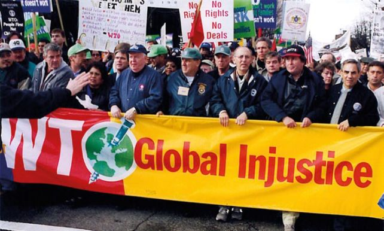
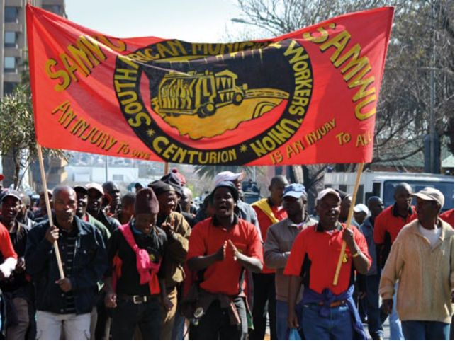
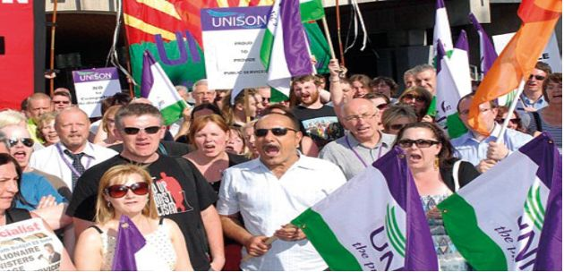
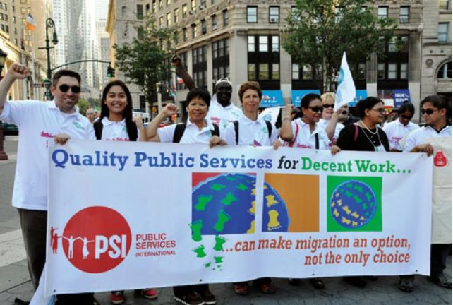

| 「私」の悲劇 「公」の底力: 市場主義の限界から見えてくる民主主義の新たなる可能性 | |
| ヒラリー・ウェインライト & Hilary Wainwright | |
| UNKNOWN (2015) | |
水問題が叫ばれています。この本には、水道事業にたずさわる人々と一般市民が, 民営化の嵐の中でどんな問題にぶつかり、どんな新しい運動を作り出しているかが描かれています。
著者ヒラリーは多くの国々に足を運び、現場の人々の肉声を記録しながら、新しい運動への提言をまとめています。
本来の意味の民主主義とは何か。民衆の知恵と連帯を信頼して「まったく新しい別の世界」の開拓に立ち上がりませんか。「補論」には、「コモンズ宣言」とでもいうべき理論的な提言が収められています。労働・社会運動および公共政策や社会政策に関心のある方々が手にして下さることを期待して世に送ります。いま、ギリシャ危機のさなかに刊行できるのは幸いです。
「私」（private)の悲劇・「公」(public)の底力
（市場主義の限界から見えてくる民主主義の新たな可能性）
ヒラリー・ウェインライト（Hilary Wainwright）著
戸塚秀夫 編集・監訳
戸塚 亮・訳
THE TRAGEDY OF THE PRIVATE / THE POTENTIAL OF THE PUBLIC
（Published by Public Services International and the Transnational Institute, 2014）
編者まえがき
本書には、昨年刊行された Hilary Wainwrightの二つの著作の翻訳が収められている。
一つは、ＰＳＩ（国際公務労連）本部から刊行された"The Tragedy of the Private, the Potential of the Public"（「私」の悲劇 「公」の底力）と題する本であり、いま一つは、それとは別の書物に寄稿された"Notes for a political economy of creativity and solidarity"（創造と連帯の政治経済学のためのノート）と題する論文である。本書には、前者が「主論文」として、後者が「補論」として収められている。
私達はいま、新自由主義の嵐が福祉国家の体制を揺るがしている厳しい現実に直面しているが、この主論文は、その嵐に抗して、新たな公共の世界を切り拓こうとする民衆の革新的な抵抗運動が、世界各地で広がっていることを明らかにしている。南アフリカ、ブラジル、ウルグアイ、イタリー、ギリシャ、イギリス、ノルウェーの各地における、ＰＳＩ傘下の瞠目すべき運動事例の生々しい実態が語られている。
運動事例ごとに活動家たちとの議論を通して確認される教訓が要約されており、新たな運動思想の萌芽が読み取れる労作である。主論文の「序文」で、ＰＳＩ書記長ローザ・パヴァネリが「新しい考え方、新しい話し合いかた、新しい組織化と動機付けの方法が必要だと確信しています」と述べていること、著者ヒラリー・ウエインライトが主論文の最後で、ここで描かれたキャンペーンは「国民に奉仕する公共サービスを求める世界的な闘争の過程の一部分」に過ぎない、「新しい別の道」を模索しているすべての活動家の経験から学びたい、と希望を述べていることに、読者の注意を促したいと思う。
日本の公共サービス労働にたずさわる組合活動家にとっても、また地域で活動する市民活動家にとっても、必読の書として推奨できるのではないかと確信し、この翻訳プロジェクトを組織した次第である。非情な嵐に抗して公共サービスの充実に努力しておられる方々が、日本の活動経験をふまえて国際的に発信しうる教訓はなにか。読者のご感想を寄せていただければ嬉しい。
補論には、長期間にわたる著者の調査・研究歴のひとつの到達点を示す試論を収めた。活動家へのメッセージとして語られている「本論」とは対照的に、補論はやや難解な研究論文として脱稿されているが、ここには今日の危機の性格についての著者の見解と同時に、その克服を志す民衆への著者の提言が理論的に展開されている。新自由主義の攻撃にさらされて弱体化した労働組合に求められるのは、労働の価値についての再検討にまでさかのぼる新思考ではないか、という大胆な試論が、本論の底にあるように受け止めている。
十年ほど前から、「社会運動ユニオニズム」を提唱してきた編者としては、有力な識見に接した思いであるが、この補論については、関連分野の研究者による一層の検討が必要であろう。その手掛かりになることを期待して、末尾に記されている「謝辞」「参考文献」も掲載することにした。好学の士の参考にしていただければ幸である。
詳しくは「監訳者あとがき」で述べるが、日本語の訳語が確定していないと思われる言葉については、訳語の後の（ ）内に原語を記載することにした。これとは別に、略語などの簡単な説明も（ ）内に記すことにした。
編者としては全くはじめての試みであるが、この書物は最近の情報技術革新を利用して電子媒体で出版することにした。"現代のコモンズ"ともなりうるこの技術の効用を確かめられるかどうか。興味のあるところである。
最後に、この翻訳出版のプロジェクトには、自治労本部からの研究助成を受けました。記して謝意を表します。
2015年6月 戸塚秀夫
目次
第１章 人種隔離政策後の南アフリカ ━ 市場に振り回された政治を徹底的に告発する
第３章 ヨーロッパ：福祉国家を築いた者たちが自らそれを破壊する時
PSIリーダーRosa Pavanelli
すべての組合の活動家の方々にこの本をお届けできれば嬉しいです。我々PSI（国際公務労連）は著者ヒラリー・ウェインライトの調査に協力して、公共部門の労働組合がこの数十年にわたり関わってきた力強いキャンペーン活動を、当事者の視点で彼女に確かめてもらいました。
この冊子は組合の戦略の開発、組合員の動員、職場や地域社会での新しい権力構造の構築に責任をもつ、すべての活動家のお役に立つはずです。ヒラリーが以下に報告している事例は、我々の多くの組合が参加している有力な革新的キャンペーンの一部にすぎません。
私自身のイタリアでの経験から証言できることは、労働組合と地域社会の当事者たちの同盟がとても重要だということです。また、労働組合リーダーの視点から見ると、新しい考え方、新しい話し合い方、新しい組織化と動機付けのやり方が我々には必要だと確信しています。
労働組合には、雇用主との団体交渉で勝ち取った合意を雇用主に守らせる法的責任があります。これこそ労働組合の基礎的な仕事です。しかしこの本で述べるように、地域社会と絆を築くことに成功した公共部門の労働組合は、自分たちの権利と利益をさらにうまく守っていけるのです。労働者の権利を人権の核心部分と理解してこそ、仲間たちの喫緊の課題を理解できるようになるのです。
全世界の2000万人におよぶ公共サービス労働者を代表するグローバルな労働組合の連合・PSI（国際公務労連）のリーダーとして、私は、傘下のそれぞれの組合が、めいめいの洞察や経験を共有し、それぞれの職場や地域社会で影響力を築き上げ、結束した人々の力を意思決定の舞台に投影することができるように全力を尽くします。
このグローバル化の時代には、地域社会の範囲を越えて、正義と平等に基づく社会、そして良質な公共サービスを基盤とする社会を発展させるために、我々は協働しなければならないと思うのです。
連帯を！ PSI書記長 ローザ・パヴァネリ 2014年
著者・Hilary Wainwright
この本でご紹介するのは、公共サービス労働者たちが地域の仲間たちと連帯して公共サービスをただ守るだけではなく、それをより民主的なものにして人々のニーズや要望にこたえるものにしようと奮闘している姿です。さらにまた、そのような連帯活動が地域レベル、全国レベル、さらに国際的レベルなど、さまざまなレベルでどのように進んでいるのかを取り上げてゆきます。
この本は、公共サービスや公共施設の民営化が試みられたものの、それが挫折し始めた時期にちょうど発行されるわけです。民営化にたいする批判も広がっています。現在では主にローカルのレベルで、いったん民営化されたサービスを公的なコントロールの下に再び戻そうという決定も増えてきています。
民営化の失敗は、悪評高い数々のスキャンダルを生んできました。マーガレット・サッチャーの時代から、英国は民営化の実験室として最悪の事例を目にしてきました。
最近の例では、世界最大の多国籍警備会社G4Sが、2012年のロンドン五輪の警備要員数千人を確保できなくなり、結局、軍や警察に応援をたのむという失態を演じました。その前には巨大アウトソーシング企業Sercoのスキャンダルもありました。Sercoは民営化の波に乗って成長しましたが、英国の国民健康保険制度の時間外救急医療を危険な人員不足の状態に放置し、しかもその失態を隠すためにデータの改ざんまでしていたことが露呈したのです。
またいっぽう、IT関連の請負会社Atosは、障害者を「まだまだ働ける」と判定して障害給付金を取り上げるための非人間的なテストを実施していたのです。しかもそれによって給付金を取り上げられた人たちが、あいついで死ぬような事態になっても、それをやめようとしなかったのです。
このような今も毎日のように起きている惨状は、この本のタイトルにもある「私」の悲劇と呼ぶべき事態の氷山の一角にすぎません。民間企業のもつ無限の利潤追求という論理を、自然や社会の限りある共有資源の管理や、社会のニーズに応える（公共サービスの）分野に持ち込むことの愚かさを強調するために、「私」（private ) の悲劇、という言葉を私は使います。
それは、逆に言えば「コモンズ（共有物）の悲劇」と言えます。人々は適切な条件さえあれば共有の資源をお互いの利益のために運用できる、という考え方が否定されるのですから。この反コモンズの悲劇、とりわけ「私」（private ) の悲劇は、人間というものは自分の直接の利害のためにのみ行動するものであり、お互いの利益や助け合いなどには無関心で、問題解決のためにお互いに話合いもできず、力を合わせることなどできっこないという、人間性にたいする侮辱的な推定から生まれているのです。
いっぽう「公」（public ) の底力という言葉は、これとは対照的に、人は助け合わずには生きられないという気づきと、管理責任の倫理、そこから生まれるお互いの気配りと協力から生まれてくるのです。このようなことすべてが、この本で報告する公共サービスを守ろうとする闘いのなかではっきりと見られます。実際、それが闘争の中で強化されているのが現実です。
この「公」(public)の底力はどうすれば、どんな組織をつくれば現実のものにできるのかはすぐには答えられない難問です。しかし、この本を作ろうと思いたったのは、その答えはきっと問題解決を試みる実際の事例から学ぶことができるのではないか , と直感したからにほかなりません。
インソーシング（内部調達）の流れ
世界中で、地方自治体がサービスを自らの管理下に取り戻そうという決定が続々となされています。アメリカ合衆国は伝統的に民営化の思想の本拠地ですが、以前はアウトソース（外部委託）にまわされていたサービスの5分の1が再び自治体の組織内に取り戻されたという調査もあるくらいです。その調査によると、再びインソーシングされることになった主な理由は、「請負業者が提供するサービスの質の低下」が73％、「コスト節約の失敗」が51％でした。国レベルで見ても、オバマ政権は主要なサービスのインソーシング化を考えはじめています。アウトソーシングが多くの政府機関で行き過ぎてしまい、請負業者をうまくコントロールする能力が政府機関から失われつつある , とオバマは警告したのです。
英国では2011年に調査された140の地方自治体の半数以上が、民間セクターからサービスを取り戻しつつありました。市会選任事務市長（カウンシル・マネジャー）たちが列挙した理由は、とにかくサービスの質を最優先にしたいということ、そして公共的価値の立場からもっと効率的な節約をしたいということ、つまりその節約した金を民間投資家の株主配当や重役たちのボーナスに回すよりも、サービスの改善に投資したいということでした。
ヨーロッパ大陸でも流れは同じです。2010年に政治家たちと市の幹部職員たちはパリの水道事業を再市営化すると決めました。民営化のもとで、あまりに巨額の金が利益として公共予算から吸い上げられて消えていたからです。「再市営化」は、選挙で選ばれた当局者と水道利用者の代表者たちによる管理監督が強まることを意味しています。その結果、水質がさらに改善され水道料金も下がるわけです。
ドイツでは電気、水道、ゴミ処理などの分野を支配してきた一握りの多国籍企業グループから、それらのもつ施設を再び直接公有化しようという大きな流れがここ数年広がってきました。2011年までに過半数の電力供給網は再公有化されました。多くのドイツの公共団体は、ゴミ処理、公共輸送機関、水道事業、介護、公営住宅などをインソーシングに戻しつつあります。それは単に経済効率性を追求するためだけではなく、社会的・環境的な重要課題に応えやすくするためなのです。フィンランド、オランダ、ノルウェー、ベルギーでも同様の流れが見られます。2011年にはイタリアで96％もの国民が「自分たちの水は公共サービスのままにしておいてほしい」という国民投票に賛成票を投じたのです。
南アフリカでまともなトイレもなしに生活する150万ものひとびと
チャンス到来
上で見てきた公共サービスの公的機関への回帰の流れは、福祉国家を築き上げた先人たちと同じ理想と価値観を共有する我々にとっては、またとないチャンスといえます。
マーガレット・サッチャーとロナルド・レーガンの時代から30年以上にわたり、彼らのような熱狂的な市場原理主義者の政治家たちが福祉国家の理想をことごとく壊してしまったために、飢餓、疾病、失業、貧困といった福祉国家が解決しようとしてきた諸問題が再びはびこってしまいました。グローバル・サウス（アフリカ、ラテンアメリカ、アジアの発展途上国など）の多くでは、こういった市場原理主義者たちのイデオロギーのおかげで、最も必要なところに公共サービスを造ろうとする試みが妨害され続けてきたのです。
現場で決定権を持っている公共サービスの管理者や地方政治家たちは、今日、民間企業や大物政治家たちの要求をはねのけようとしています。民間の単なる金儲け主義とは違う論理で「効率性」を考えよ、と彼らは現実問題をしっかりと見据えて主張しはじめています。つまり公共サービス運営における効率性の根本要件は、社会的ニーズにこたえる「公共的価値」という特有の概念を理解することにあるというのです。民営化されたサービスがもたらしたお粗末な結果をいつも実際に目にしてきたからこそ、このような考え方に変わってきたのです。
このような実践的とはいえ、まだ控えめな「民営化の拒否」をどのように推進してゆけば、不満を抱く人々にアウトソーシングを押しつけようとしている国内外の巨大組織に立ち向かえるのでしょうか？公共財（public goods）の領域への民間市場導入を現実的に拒否するこういった動きを、どうすれば大きな活力や創造力に育てあげて、ここ数十年間に現れてきた新しいニーズや要望にこたえられるように、公共サービスを改善し拡大することができるのでしょうか？この本では、こういった問題の答えを探っていきたいと思います。
公共サービスを求めて闘う連合
民営化のもたらした社会的な惨状に直面して、良質な公共サービスを求めて戦う闘士たちが政治の新しい主役となる事態が起きています。それは政治家たちではなく、まっとうな生活の質をもとめて公共サービスを利用している利用者たちと公共サービスの労働者たちとの連合なのです。たとえばウルグアイ、ブラジル、イタリアなどでは、国レベルでのそのような連合が国際的なサポートを得て公共水道事業を守り改善するのに成功しました。ノルウェー、英国、ドイツなどでは、公共サービスの労働者と管理者そして利用者たちのローカルな連合が民営化を跳ね返し、地域の公共サービスのイノベーションと再生の原動力になったのです。
この本を作ることで、そのような連帯を築くのに成功した人々から学ぶべき教訓をまとめて資産としたいのです。と同時に、がんばってはみたものの、さまざまな困難に直面してしまった人々の事例も大いに参考になるはずです。私たちは特に公共サービスの労働者やその組合にとって役立つ教訓に焦点を合わせましたが、地域社会との連合の重要性と共に、全国的、国際的に世論の支持を勝ち取る難題にも目を配りました。
一般的な教訓を述べるとすれば、多くのレベルで抵抗運動を起こす必要があるということです。まずは職場や地域、そして国家的レベルで、さらには世界貿易機関（WTO）や国際通貨基金（IMF）やヨーロッパ連合（EU）のような、選挙によらない秘密主義の国際機関の不透明なレベルにまで挑戦する必要があるのです。
ある公共サービスのローカルな職場というものは、他のさまざまなレベルでなされた決定が実行される場ですが、いっぽうで、それに直接に影響を受ける人々の強い抵抗や説得力ある代替案が、政府や国際機関による民営化の押し付けを阻止し、逆転させてゆく可能性のある場でもあるのです。
国家レベルでは、自由市場至上主義を礼賛する政治家たちが、さまざまな公的制度を破壊するような試みを推進してきました。それゆえに、我々抵抗勢力は、勝利するために連帯し、対抗できるだけの強力なヘゲモニーを築き上げてこなければならなかったのです。しかしレーガン政権やブッシュ政権で具現化された自由市場のイデオロギーが民営化のプロセスを推進し、広め、さらにますます強化したわけですから、米国主導の国際機関の重大性を見すごしてはなりません。
 1999年シアトルでのWTOの会議への抗議デモ
裏で操る者たち
そう考えれば、数十年以上もかけて築き上げられ、国民生活に根付いていた人気のある多くの公的制度を、わずか十年たらずの間に新自由主義の諸政党が、なぜ、どのように破壊できたかを説明しやすくなります。言い換えれば、しだいに退化して民主主義の儀式を演じるだけの場になってしまった各国の選挙による議会の裏で、特に米国が国際機関の中で影響力を行使して、民営化を国際的な新自由主義の規制体制として押し付けてきたのです。
この規制体制は法律だけではなく、政府代表者たちのあいだの協定によって裏づけられていることがあります。その場合、それらの協定はほとんど議論されることもなく、まして議会で承認されることもめったにないのです。ときには借款の条件として、あるいは米国の援助の取り消しや米国企業の投資の引き揚げといった金融制裁をほのめかしたり、脅したりしながら、押し付けられてくるのです 。もっと隠微なやりかたで押し付けられることもあります。自分たちに批判的になりそうな有力な政治家たちを説得したり、圧力をかけたりして仲間に引きずり込むというやりかたです。
だがこの新自由主義の規制体制もまた異議を唱えられてきています。その始まりは1999年の世界貿易機構（WTO）のシアトルでの会議でした。そこで米国はWTOを中心とした「グローバル憲章」なるものを作ろうとしたのですが、結果的に生まれたのは「グローバル化修正」運動だったのです。
その運動は、地域社会、国、そしてグローバルなレベルで発生し、それぞれのレベルにはさまざまな選択肢が存在するのだから、問答無用なグローバル市場の押し付けはまったく不自然だ、という集団的な確信を多様な方法で広めようとする運動でした。その異議申し立ては、今や地域社会レベルや国家レベルで学習された教訓や勝利にもとづいて、公共サービスを守り民主主義主導の改革を可能にする（市場主導のものとは）まったく異なる規制体制を作り上げることなのです。
いくつかの理由で、この本は南アフリカに関する章から始まります。その第1の理由は、人種隔離政策（アパルトヘイト）の終焉から約20年が過ぎても、公共サービスの状態が、新自由主義的経済政策が破綻していると明確に告発するものとなっており、経済的成功が「トリクルダウン（滴下）」して全体の生活を改善するだろうという悲劇的なまでに空しい期待が完全に裏切られているからです。
第2の理由は、人種隔離政策時代の公共サービスを解体し、民主的で誰もが利用可能なサービスに置き換えてゆく戦いは、現実的な政策によって公共サービスを民主化で改革し守る試みの非常に際立った実例だからです。
人種隔離政策後の現状は、我々が選択したものではありません。この本が論じているのは、現状が選択されたものであるというようなことはめったにない、ということです。公共部門の労働組合はしばしばこの課題に挑戦してきたのですが、彼らが耐え忍んだ困難や敗北は、南アフリカがなぜ試金石になるのかの第3の理由を指し示しています。つまりそれは民営化への駆動力が働くいろいろなレベルに注意を払うことの重要性、さらに各レベルで諸勢力のバランスをうまく変えられない場合には、抵抗が危うくなることがわかるからなのです。
人種隔離政策後の新しい南アフリカに対し、新自由主義的なグローバル体制から離脱しないようにと不透明ながら、さまざまな圧力が加えられたことが決定的でした。社会の民主主義的な再建をすすめようとする重要な勢力も、この圧力には十分に対応できませんでしたし、アメリカ政府の必死の努力の前には、なすすべもありませんでした。
地域社会とのつながりを作ろう
これからご報告する公共サービスの民主主義主導の変革や改良の取組みの出発点となったものは、公共サービスの労働者とそのサービスを利用する人々の双方が持つノウハウ（実際的知識）と創造性です。そのような知識は、公共サービスの労働者がみずからの仕事に専念し、サービス利用者（もちろん利用者のなかには労働者自身や、彼らの家族、友人も含まれますが）を満足させようと全力を傾ける中からしばしば生まれてくるのです。
この知恵と創造性を活用するには、民主主義を強化するしかありません。そしてこの過程こそが、民主化のプロセスを公共的効率性を実現するのに不可欠なものとするのです。それを「生産的な民主主義」と呼んでもよいでしょう。この本で描かれている参加型の民主主義は、市場化を推進する者たちの弱み（その弱みとは、たとえば政治家たちが住民の日常生活、ニーズ、不安などとをよく知らないということですが）につけこむと同時に、労働者や地域社会の潜在能力を積極的に動員して、すべての人々の利益のために公共サービスを一変させるような原動力を作り出す実践の中にあるのです。
このような「生産的な民主主義」を、サービス利用者たちとの連帯を作ることで築くことに関して、この本では労働組合が地域社会との効果的な結びつきを作るために、どのように組合のもつ諸資源を効果的に活用してきたかが描かれています。
我々が注目する一例は、自分たちが住んでいるコミュニティグループに接近するために、世話役のネットワークを作った南アフリカ自治体労働者組合（SAMWU）のケープタウン地下鉄支部です。このような活動で鍵を握るのは、組合が気付く前に地域社会が問題を発見して行動を起こすことを理解している組合なのです。組合のキャンペーンとは（トラブルが起きているところに）落下傘で降りて占拠するというようなことではなく、絆を結び、同盟を作り、ともに運動する道を見つけることなのです。異なる原動力を結びつけながら。
民主主義に駆られた変革推進のもう一面は、公共部門の内部経営に民主主義を築くことです。この本ではイギリス最大の公務部門労働組合UNISONのニューキャッスル支部とノルウェーのモデル自治体プロジェクトの事例を探査します。
ニューキャッスルの事例は、民衆主導による公共サービス変革の過程でした。そこでは労働組合の支部がアウトソーシングを止めさせることに成功し、次いで民営化に代わる外注ではない組織内部（インハウス）で行う道を実行するために経営側と交渉したのです。それは公共部門における通常のトップダウンの階層制をひっくり返し、労働者と市民を巻き込んで、地方自治体のITサービスを改善する方法を確認していったのです。その結果、老人介護や若者のためのサービス改善などの最前線にまわす剰余金を作ることもできたのです。
ノルウェーでは、これと類似してはいるものの、もっと公式化されたプロセスを経験しました。公共サービスの労働者自身を「運転席」に座らせて、公共サービスに期待する変化を作らせるチャンスを与えたのです。これは「変革のガイド」と呼ばれる者が（普段の）仕事を休んで、サービスの新しい改善方法を探るのをみんなでサポートし、経営側や政治家や労働者の代表に「下から」の提案を実行させようとするものでした。
最後に、この本では国際的な協力の重要性を見ていきます。水道事業の民営化に反対するキャンペーンの結果、調査研究と積極的な集団的モニタリング、および水道の多国籍企業が世界規模で行っていることを追跡する重要性がわかってきました。これらの企業は国際的に協調して計画を立てているので、我々の抵抗や代案も同じようにグローバルな視野を持つ必要があるのです。
水道事業の民営化に反対する国家を超えた効果的な闘争の中から、「公ー公」（public-public)あるいは「公ー市民」（public-civil）パートナーシップという革新的な構想が生まれてきました。そのパートナーシップを通して、公共サービスを運営する公共のそして市民の組織が国境を超えて協力して専門的知識を分かち合い、資金作りを行い、公共サービスや施設を運営しつつ、公共および市民の組織の力を全般的に強めていくという構想なのです。この「公ー公」ないし「公ー市民」モデルは、民営化に反対して高品質の公共経営管理（パブリック・マネジメント)を求める闘争の中心的な制度になってきました。
この本の中のすべてのケーススタディは、市場と政治システムの双方から自立して、協力と連帯を通じて発展する創造的な可能性を描いています。すべての事例が、世界中で絶望と荒廃を引き起こし民主主義を破壊している新自由主義経済には代替案があるのだ、という現実的な証拠を示しているのです。そして現にいま、その代替案は作られつつあるのです。
この本は現在進行中の作品です。中間報告的な文書ですから、読者のみなさん自身にこの物語の続きに参加して協力していただければと思います。
南アフリカのバケツ・トイレを処理する市の職員
「人種隔離政策は根の深いシステムで払拭するのには時間がかかるだろうとわかっていたが、永遠に時間がかかるとは思っていなかった。あれから18年。18年もだ。でも、なおこんなふうに我々は生活しているのだ。」
「こんなふうに」とは、レノックス・ボニールにとっては、ケープタウンのカエリチャ地区の水道も無く、トイレのかわりにバケツを使っている狭苦しい居間と寝室と食器戸棚だけの粗末な家のことなのです。
レノックスは市役所に勤めている南アフリカ自治体労働者組合（ＳＡＭＷＵ）の職場委員（ショップスチュワード）です。彼と彼の妻プリシラは、普通のバケツ・トイレシステムを抜け出して「バケツ・プラス」システムに移行できたところです。バケツ・プラスとはバケツの中身を捨てるための「ポータトイレ」を設置し、毎週、市と契約しているブローカーに臨時に雇われた労働者が汚物を回収するシステムのことです。
アフリカ民族会議（ANC）初の政府に投票するために多くの南アフリカの黒人が通りに列をなしてから18年経っても、150万人の人々（ほとんどの黒人や有色人種）はなおまともな水洗トイレも無く生活しているのです。170万人もがまともなベッド、台所、水道も無い粗末な小屋で生活しているのです。
所得水準の向上したごく少数の黒人のおかげで、黒人と白人の格差はごくわずか縮小したものの、貧富の格差は広がり続けてきました。貧しい人の大多数は黒人です。２０１２年の世界銀行のレポートによれば、南アフリカは世界で最も不平等な社会のひとつなのです。
統計は衝撃的です。南アフリカ社会の底辺の20％の人々が社会全体の所得の 3 ％以下しか得ておらず、わずか10 % のトップの人々が50％以上もの所得を得ているのです。これはメキシコやブラジルよりもひどい格差です。さらにはロシアの貧民と政府高官の格差よりもひどいものです。
南アフリカの人口の約3分の1はいまだ１日2ドル以下で生活しています。こどもの栄養不良の状態はアパルトヘイト時代よりも悪化していますし、失業状態も同様に悪化しているのです。
破られた約束
「住居と安全と快適を実現します！」「安全な職場を実現します！」「国民に国の富を分け与えます！」これらは人種隔離政策反対闘争を鼓舞し団結させた「自由憲章」の約束でした。そしてそれがマンデラを投獄させるにいたった反逆裁判で起訴の証拠とされたのです。しかしマンデラが釈放されて20年以上経っても、その「自由憲章」の約束はいまだに実現されていません。「とまどうばかりだ。我々の尊厳と敬意に対する侮辱だ。」とレノックス・ボニールは自分自身と何百万人もの仲間が置かれることになった状況に眉をしかめながら語りました。
南アフリカでは、アパルトヘイトの終焉とともに克服されると思われていた不公正があまりに巨大で、また国家が多数決原理にもとずき規制したり制限することもなく野放しに進められた市場の社会的影響が極度に大きかったので、主要な経済大国の通例となっている「市場に主導された政治」、すなわち米国に支配された国際的経済機関により実行されてきた規制体制が、徹底的に告発されることとなりました。
世界中で、国営の水道や交通システムから地方の郵便局にいたるまでのすべての公共サービスが、「公」（public）の必要性というよりも、企業の利益に駆られた経済政策の結果として解体されたり、売却されたり、企業の支配する「公ー民」パートナーシップに転換されたりして、民営化の危機に瀕しています。
その過程で、公共サービスの労働者はカットされるべき「コスト」として規定されてしまうのです。公共サービスを利潤を追求する企業に売り渡す際に、政府は公共部門の改善や変化に必要な資源（公共サービスを実際に供給したり利用したりする人々の知識や倫理的関与）を無視してきました。
自由市場の信念は , マーガレット・サッチャーやロナルド・レーガンのような押し付けがましい右翼たちによって最初に唱導されました。しかしそれは急速に政治的な広い領域に、しばしば労働者側の政党にまで拡散したのです。これらの政党はグローバルな親・市場体制を黙認してしまったために、自分たち自身の支持者、すなわち彼らの知識や関与が政治的な支持やリーダーシップをともなって、民主主義的な公共サービスの変革や改善の推進力になりえたはずの公共サービスの労働者やその利用者たちに、事実上背を向けてしまったのです。国内のほとんどの公共サービスの組合がこういったポジティブな役割を演じる用意があったのにもかかわらず、南アフリカも例外ではなかったのです。
アフリカ民族会議（ANC）政府は、アパルトヘイト国家を再構成するための主要な手段として、市場化と民営化を選択したのです。その結果、政府の1996年のプログラムに成文化されたのが、「成長、雇用および再分配戦略（GEAR）」でした。その名前にもかかわらず、GEARによって、ANC政府は経済成長の駆動力を民間セクターに依存することとなり、資本市場に乗り出し、歳出を削減するために民営化を導入することとなったのです。
1996年初頭の通貨ランドの取り付け騒ぎのあと、政府は「GEARは交渉の余地の無い譲れないもの」だと宣言しました。その結果、労働者と地域社会の双方の参加によって作られた民主主義的で人気のあった「再建開発計画」という改革案が、事実上GEARに置き換えられてしまったのです。
全く別の民主主義的な道を
こういったプロセスが世界中で繰り広げられました。南アフリカでは、水や土地や鉱物その他の共有財（common goods）から利潤を得たり、公共サービスを民間企業の原理で運営したりするために、ＡＮＣ政府がスエズ社とバイウォーター社その他の多国籍企業を招き入れたのです。同様に、世界中の国々で、労働者諸政党が公共サービスの「改革」を民間市場に頼ったのです。
しかし、そうは問屋がおろしませんでした。世界中の公共サービス労働者たちは市民として、また仲間の市民とともに自らを組織して、これまでに自分たちの成し遂げたことと、社会的かつ経済的な権利のために続けてきた戦いのどちらも明け渡すことを拒否したのです。労働組合員として地域社会と同盟しながら、かつて諸政党の手に委ねてしまった公共サービスの質を守るために、彼らはいま、効果的に集団的責任を果たそうとしているのです。彼らの目指す「公共サービス改革」は、利潤のためではなく、人々のための人々による改革なのです。
しかしこの草の根の戦いは、めったに世間から注目されることも、政治的に代弁されることもないのです。ですからこの本の目的は、公共サービスの労働組合が、その公共サービスを利用する人々の運動と一緒になって、どのように公共サービスを守り、最高品質のサービスにしようと運動してきたかということに世間の目を向けさせることなのです。同時にこの闘いは、公共労働者が真に民衆に奉仕するために必要となる諸権利、安全、道具、資源を守る闘いでもあることを知っていただきたいのです。
抵抗
レノックス・ボニールは、彼の地区での日常経験からどうしても必要だと思われる公共サービスを地方自治体に実施させる力を築くために、地域社会のグループとともに運動を展開している数百人の職場委員の一人です。
ボニールのような地方自治体の労働者たちは、労働ブローカーの導入や、「拡大公共事業プログラム」（EPWP)のような臨時労働に依存した施策の導入による公共サービス労働の臨時雇用化により、高品位の公共サービスを築く可能性が損なわれるのを目の当たりにしてきました。この「拡大公共事業プログラム」は、地域における環境関連の一時的な仕事口を生み出してはいます。しかし彼が言うには「数ヶ月は仕事にありつけるけど、それが終わればもう何ももらえないんだ。」というわけです。「給料は最低の貧困レベルだし、みんなぞっとするような労働条件で働いているんだ。安全服なんて無いしね。下水道の中で働く時でもそうなのさ。」
ボニールの仕事は、南アフリカ自治体労働者組合（SAMWU）での議論をカエリチャの地元の諸組織に説明することです。その結果として地域社会の抗議の声が、道徳やメディアに強い影響を与え（多くの地域社会はつねにいつでも抗議の声をあげたいような状態にあるわけですが）、それが労働組合の交渉と効果的に結びつくのです。貧しいサービス利用者たちの中にあるのと同じ気分が、腐敗に対抗し政治的責任を求める現場の闘争を指導するSAMWUの役割の核心にはずっとあったのです。
「地域社会が我々に近づいてくれるんだ。彼らが信用できる声なんて他にはないからね。」と ヤコブ・モディモエング(SAMWUの地方書記長）は言いました。それはカトーネでの4000人のメンバーたちの抗議行動の翌週のことでした。（その抗議の場には、地域社会のために仕事に行くにもなんの交通手段もない市の職員たちが集まったところに、最新型のメルセデス・ベンツに乗った市長が現れたそうです。）
 南アフリカで抗議活動をするSAMWUの労働者たち
SAMWUは汚職に立ち向かう
カトーネは南アフリカの豊かな鉱山地域にあるラステンバーグの近くの小さな町です。2012年に警察がストライキ中の鉱山労働者たちを殺したマリカナのすぐそばです。
マリカナ事件が目を醒まさせてくれた、と多くの南アフリカ人は言います。マンデラの獄中からの解放を目撃して、南アフリカの黒人たちの苦しみがすぐに終わるだろうと思っていた世界中の人々は、しだいに疑問の声を上げはじめているのです。プラチナ鉱山の掘削手の月給4000ランドに対して、鉱山の管理職の年収45000000ランドという大きな格差が一瞬即発の緊張を生み、賃上げ要求をエスカレートさせてきました。SAMWUのような組合においても、生活賃金（リビング・ウェイジ)として月収12500ランドをめざせという要求が生まれてきています。
北西地方のSAMWUの地方組織は、公共サービス労働者と地域住民たちとの同時進行の運動を指導しています。彼らと彼らの家族や友人たちの多くは、プラチナ鉱山で働いています。公共サービスには公共の金が使われているのだから、彼らは自分たちにも口を出す権利があると主張したがっているのです。
ラステンバーグは北西地方の最も豊かな地方自治体のひとつです。鉱山に供給している水道や電力から相当の収入をラステンバーグは得ています。もしもラステンバーグが自治体としての責任をしっかりと果たすならば、鉱山会社からの収入でマリカナやカトーネおよび近隣の小さな集落の水道、電気、下水、道路の整備費用をまかなえるはずなのです。しかし現実には、この地域の人々の悲惨な暮らしといったら、まともな道路もなく、まともな下水の代わりに地面に掘った穴しかないし、まるで誕生日のごほうびのように、たまにしか電気も供給されないありさまなのです。
このひどい状況の原因がSAMWUのメンバーには見えてきたのです。メンバーの多くはこの貧しい地域に暮らしていたり、この地域のために仕事をしようとしていた人々でした。メンバーの一人、ヤコブ・モディモエングは次のように回想しています。「メンバーたちは似たような問題を抱えてオフィスに押しかけてきました。地域のために使われるべき金が着服されている、自治体の金が誤った使い方をされている、といった感覚が湧き上がってきたのです。」
こういった情報に対応しようと組合が立ち上がるときにぶつかる問題は、職場委員たちが身の危険を感じるようになって、はっきりとしたのです。ヤコブはこう言います。「我々の職場委員が標的になってしまった。彼らや彼らの家族の命が脅かされてしまったのです。見知らぬ奴らが彼らのまわりをうろうろしはじめたのです。悲惨な状態になりました。」いっぽう、ある者は賄賂を渡されそうになりました。ヤコブによれば「市長のマシュー・ウォルマランズが彼らに近づいて来てこう言ったんだ。『100万あげよう。』と。しかし、みんな革命の戦士たちだったからね・・・。」
内部告発者を弾圧しようとする深刻な動きがはっきりとしたのは、ANC政府の評議員で活動的な労働組合員だったモス・ファコエが2009年3月9日に家を出たところを射殺された時でした。彼はその2日前に市長ウォルマランズと関係業者の癒着についての関係書類を提出したばかりでした。
長い法廷闘争の結果、ファコエ殺害の首謀者として市長ウォルマランズが懲役20年の判決を受けたのは２０１２年７月のことです。（彼はずっと控訴し続けてはいますが。）
これは一例に過ぎませんが、風土病的なこの地方の腐敗を象徴しています。公共サービスの「入札制度による腐敗」の産物と言えます。公職が私利私欲によってもてあそばれてきたとも言えます。
しかしまた同様に、モス・ファコエの殺害者たちを法廷に突き出した運動は、アパルトヘイトの撤廃を通して市民たち（裏切られた公共サービス利用者や責任感のある公共サービス労働者たち）が手に入れたと信じている民主的で社会的な権利を求める強い決意や相互連帯や組織力の象徴でもあったわけです。
SAMWUは汚職というものを単独の「個別問題」と見ているわけではありません。そうではなく、公共サービスを金儲け主義にまかせてしまった直接的な結果として汚職を見ているのです。SAMWUは新自由主義的な政治の腐敗した核心を暴いているのです。SAMWUは、民衆のための公共サービスを求めて真剣に立ち上がる人々が、民主的な公共サービスを築く道をしっかりと切り開けるようにすることでしょう。
水道民営化とは違う民主主義に触発された別の道
SAMWUが中心となって関わってきたもうひとつのキャンペーンに焦点をあててみましょう。南アフリカの人種差別国家を解体する機会を捉え諸問題を解決するために、SAMAWUは民営化にたよらずに、すべての人々のニーズにこたえられる公共サービスを再構築するべく、民主主義に触発された民衆の能力を育てるように組合員の能力や運動を結集してきました。また同時に、SAMWUはANC政府の民営化路線に抵抗し続ける必要もあったのです。南アフリカ労働組合会議（COSATU）に加盟する他のいくつかの組合も、「変革的抵抗」とでもいうべき同じ戦略を追求しました。
SAMWUのアパルトヘイト後の戦略は、いわば複線を同時に進むことでした。その一つは（いかなる形であれ）自治体サービスの民営化を阻止することであり、もう一つは、実効的で責任のとれる公正なサービスの提供を可能にするような自治体サービスの変革に貢献することだったのです。
言い換えれば、南アフリカの民主的憲法でうたわれている社会的権利にもとづいて、公共部門が国のサービスを再構築する能力を発揮できるように、SAMWUは構造改革に関わってきたのです。この点で、いくつかの他の組合とSAMWUは協働しました。とりわけ目を引いたのは、鉄道運輸の民営化に直面していた交通労組の南アフリカ交通運輸合同労組（SATAWU）でした。
全国的な示威キャンペーンを組織したり、広く世論に訴えたりしたおかげで、1997年にSAMWUは経営者たちの南アフリカ地方自治体協会（SALGA）と構造改革の進め方についての合意を勝ち取ることができました。公共部門が望ましい選択肢だと公約されたことが、組合の立場からすれば重要でした。
SAMWUは、公共部門が「望ましい 選択肢 」と規定されているだけでは不適切だと認めながらも、この法的合意が自治体の労働者や管理者が実施できる選択のはばを広げてくれた点を最大限に利用しました。あらゆるレベルの組合員たちが公共再建計画に着手しました。勤務時間外に自分たちの地域の水道管を修理したり、アパルトヘイトの制度的な残滓を払拭するべく、理解のある自治体の管理職たちと活動したりと、大小さまざまな活動を開始したのです。
1996年に始まった２年以上にわたる代表的な独自行動は、ケープタウンにある３つの非白人居住区を含むヒルスター地区で始まりました。そこの水道局はばらばらな状態で、人種隔離政策のおかげで給水も不公平になっており、非白人居住区の住民の家には水道管が無く、なんとか水の出そうな蛇口を求めて女たちが１５マイルも歩き回って水汲みに行かなくてはならないほどでした。
そこで、組合はすべての非白人居住区のスタッフや管理職をまとめあげ、すべての人々に水道管で給水できる平等なサービスを提供するために、ばらばらだった水道局を統合したのです。管理者側も組合側も、「市民やコミュニティのもつ能力を結集することで統合は最高に達成されるはずだ」という信念を共有していたからです。どこに水道管や水道バルブがあるのかという地域社会がもつ知識は、水道設備の補修や交換の作業工程には必要不可欠なものだったのです。
ベテラン技術者のアルフ・モールによれば、「ヒルスター地区での会議の目的は、まず、自分たちには水道供給に取り組める自前の能力があるということをはっきりと示すことだったのだ。」と言います。この戦略に関わっていたSAMWUの指導的な役員ランス・ヴェオットは、「都市行政の適切な公的統合がなされれば、もう後戻りなどはありえないと皆が信じていました。それはアウトソーシングを防ぐ方法だったのです。アウトソーシングは分断と不公平を永続化させてしまうだろうと信じていましたから。」と言うのです。
SAMWUのその信念が試される時もありました。それはちょうどヒルスターの改革が進んでいたときでした。ケープタウンの議会が、水道事業の経営形態をどうしたらよいか調査するために、コンサルタントを雇ったのです。官民共同のテスト事業を実施するもくろみで国庫補助金が出たのです。組合や水道局からの圧力のおかげで、議会は官民以外のあらゆる選択肢を含めて調査することに合意したのです。結局、コンサルタントは水道事業を従来の組織内部（インハウス）のまま続けるように提案してくれたのでした。
その結果、水道インフラは実に見事に改善されました。そのおかげで、1年後には水道管で水が各戸に供給されるようになり、貧しい人々も毎日50リットルの無料の水を受け取れるようになったのです。それはANC政府がもともと1994年の再建発展計画で公約していたことなのです。
ケープタウン市の水供給の上級管理者グラハム・リードは次のように説明しています。「当初、市議会は水道事業の混乱を目の当たりにして、民営化の道を考えていました。そのころ、我々がヒルスターの改革を開始し実際に現場で成功するのを見て、民営化の方策を棚上げすることにしたのです。市議会は（民営化ではなく）組織内部で水道事業を行うことが可能だとわかったのです。」 しかしながら、コンサルタントはあえて次のように補足して述べたのです。「もしも今後、追加の財源が必要になるようなことになったならば、長期的には民営化の道を考慮すべきかもしれない。」と。
なぜ、ヒルスターでの成功経験を一般化することが可能ではなかったのでしょうか？ 組合と現場の公共経営管理者（パブリック・マネジャー)たちは、組織内部でやれるようにしたいと真剣に取り組んでいたし、地域社会も積極的に関わってくれていたし、産業界も後押ししていたし、組合からの建設的な問題解決策の提示もあったり、もろもろの成功の秘訣がそろっていたのですが。
たしかに、とりわけSAMWUは、そのヒルスターでの成功体験を、職場委員の教育プログラムの中心に据えるとともに、もっと大規模な他の水道事業の再構築のための「ひな型」にしようとしました。ところが、組合と地域社会主導によるこの改革路線は、アパルトヘイト反対闘争を率いた同じ政党が、しだいに民営化路線に突っ走ってしまうという大きな政治状況の壁にぶちあたることになったのです。
まずはじめに、ケープタウン市のコンサルタントがほのめかしていたように、財政的な問題が発生してしまいました。ANC政府の掲げたマクロ経済の新自由主義的な枠組みは、1994年当時から地方自治体に緊縮予算を押し付け、それまでないがしろにされていた黒人コミュニティの要求に応じて自治体がサービスを差し伸べるために必要な資源を自治体から奪っていたのです。ヨハネスブルグを例にとりますと、1991年から1999年の間に、中央政府から地方自治体への補助金は85％（インフレ補正後）も削減されたのです。その結果、現場では多くの地方自治体がこういった財政的圧力を受けて、民営化へと向かっていったのです。
さらに1996年には、この特殊な民営化の流れを一般化し強固なものにするかのように、自治大臣が世界銀行のアドバイスにもとづいて用意された地方自治体インフラ投資構想（MIIF)を公表したのです。当初SAMWUは全国的な組合の全面的な支持を受けつつ、ヒルスターのモデルにのっとり各支部単位で抵抗しました。しかしMIIFに直面し、SAMWUはそこに力を集中させることになったのです。当時のSAMWUの書記長だったロジャー・ロニーはこう回想しています。「MIIFのポイントは公━民の提携でした。それで我々は体系的に民営化の問題点に取り組む必要が出てきたのです。」
さらなる問題は、バイウォーター社やスエズ社のような資金力のある多国籍企業に対して、組合は実質的に孤立無縁で直面していたということです。ANC政府は地方自治体がこれらの私企業の圧力に容易に負けてしまうような財政的枠組みを作っただけでなく、これらの私企業に対してあらゆる開発援助を差し向けたのです。これは地方自治インフラ投資ユニットや南アフリカ開発銀行の事業の中にはっきりと見られました。
SAMWUの役員で水道給水事業の改革運動の陰の精神的指導者であったランス・ヴィオットは、このような諸制度に持ち込まれた「いびつさ」について、こう要約しています。「地方自治体にもっと公共サービスを供給する権限を与える代わりに、これらの諸機関は水道、下水、ごみ処理のような基本的サービスに民間セクターを関与させうようとやっきになっているのです。」
ヒルスターのモデルを発展させようとする努力の結果はっきりとしたのは、バイウォーター社のような多国籍水道企業と政府、そして米国の息のかかった世界銀行で教育されたコンサルタントらの連合勢力に直面しては、SAMWU単独で再建プランを実行することはもはや不可能だということだったのです。
次の章ではブラジル、ウルグアイ、イタリアの水道をめぐる戦いが、こういった大きな構造的な障害にどのように立ち向かい、打ち負かしはじめているのかを見てみましょう。
この章では、水道を公共財（a public good）として守り、給水の品質を改善することを目指した３つの大きな戦いを取り上げます。水の問題は、共有資源すなわちコモンズに皆が依存している象徴的な問題なのです。水道を民営化しようとする絶え間ない試みに抵抗する戦いの中で、水道の労働者たちは、市民と連帯し共有資源の持続可能な管理に利害関係を持つ利用者たちとともに活動するなかで、どうしたら組合がコモンズの有能な管理者になることができるかを示してきました。
しかし休み無く略奪的にうごめく資本主義に支配されている経済では、これらすべての勝利は、とてももろく不安定なものです。以下のすべての事例でも、公共サービスの民営化や商業化に対する戦いは現在もなお継続中なのです。したがって、それぞれの事例の最後に、未来のための教訓をまとめてみました。
１、ブラジル：公共水道を求める最大規模の動員
ブラジルでは労働者の民営化に対する変革的な抵抗運動は1996年に始まりました。1995年から2003年に政権を担ったコルドソ政権が、各州政府に対し、各州が保有する上下水道事業体を安く売却させて、水道管理の責任を市町村から地方レベルに移行させようとしたからです。
この政府の動きは、水道事業を民間の投資家にとってより魅力的なものにしようとする大きな改造計画の一部でした。地方への責任委譲のこの動きには、政治的左翼が比較的大きな力を持っていた地方自治体の中でうまく築き上げられていた公営企業を解体してしまおうという意図があったのかもしれません。1990年代なかばから、この動きは大規模な一時解雇（レイオフ）としてすでに現れてはいたのですが、それに対する抵抗運動はまだ特定の労働者集団の個別的な闘争に限定されていました。
公営企業を民営化する準備が加速されるにつれて、「労働者たちは、より政治的に「戦争」に対決しはじめたのです。」 こう語るのはブラジル中央統一労働組合（CUT)傘下の都市労働者の組合、都市生活者全国連盟（FNU）で、当時、衛生環境担当局長だったアベラルド・デ・オリヴェイラ・フィルホです。彼が言うには「闘争を組合の枠を超えて広げて、社会全体にそういった必要不可欠なサービスを守る重要性に気づかせる必要が出てきたのです。言い換えれば、「市民の組合」となることが必要になったわけです。」
力強い同盟
こういった方針が出てきたために、公共財であり基本的人権でもある水道や下水の公的な管理に責任をもって一緒に関われるあらゆる人々に、組合は協力を求めるようになりました。その結果1997年に生まれたのが「環境衛生のための国民戦線」（FNSA）でした。共同設立に携わった17もの組織があり、それはとても強力な同盟だったのです。そこには消費者団体、都市改革に携わるNGO、公共経営管理者（パブリック・マネジャー)、さらに教会や社会運動などが関わっていたのです。
特に重要だったのは、水道管理者たちの組織である全国公営水道事業者協（ASSEMAE）も参加していたことです。それは政府と技術的な論争をする時に重要な役割を果たしてくれただけでなく、同盟に加わっていた他の労働者らとともに、自治体の水道事業会社の管理運営を改善する計画を立てる時にも中心的な役割を果たしてくれたのです。このおかげで、これらの公企業（public company）は民営化の圧力にそれほど脅かされずにすんだのです。
みずからFNSAに加盟した公共の下水、水道企業もありました。サンパウロの近くのポルトアレグレやサントアンドレの市営水道下水局などです。これらの二つの市はともにPT（労働党）の支配下にありました。労働党は参加型の予算作成や、さらには公共経営（パブリック・マネジメント）を広めようとしたパイオニアだったのです。
FNUとCUTはFNSAに幹部職員を派遣するなど、組織運営上の資源を提供してくれました。民衆運動とともに大衆教育やキャンペーン、調査を長年行ってきた急進的なNGOのFASE（社会教育組織支援連合）も裏方の支援をしてくれました。
そのように中核的な支援がいろいろと結びついていたことは、その連盟の基盤が幅広いものであることを示しています。「国民戦線」という名前を自ら選んだのも、その組織が労働組合であれ、NGOであれ、宗教組織であれ、社会運動であれ、なにかひとつの社会集団によって支配されているのではないということを示すためでした。
組織しながら経験する
労働組合がもたらした特有の貢献は、ブラジルの広大で異質な全地域にわたって、各地域社会での組織化で経験を積んだ政治意識の高い活動家たちによる、よく組織され情報力のあるネットワークを提供したことでした。
CUTが独裁政権に対する闘争の中心的組織だった時から、まだ１５年も経ってはいませんでした。CUTは同じ目的を共有するさまざまな自律的な運動をとりまとめる中枢機関として、強力な正当性を築きあげていたのです。
たとえば1983年にCUTは社会運動や労働組合を必要に応じて調整する手段として、「全国民衆・労働組合運動連合」（ANAMPOS）を創設していました。独裁政権に対する闘争をつうじて、（水道民営化に対する闘争の10年以上も前に）、さまざまな異なる運動のなかで、緊張がまったく無かったわけではありませんが、お互いを尊敬する文化がはぐくまれていたのです。都市と農村、産業界と社会、宗教界と世俗社会といった集団間での相互理解が進んだのです。
FNSAの基本方針の枠組みである「経済的・社会的境遇にかかわらず、すべての市民に下水と水道サービスを普遍的に保証するために」という理念が、参加行動をひき起こすどっしりとした基盤として働いたのです。FNSAを構成する諸組織はさまざまな仕事をしました。ブラジルの水道供給のひどい状態を解決するための提案や方策を明らかにしたり、その土地に特有の汚職を克服したり、民営化にとってかわる筋の通った代替案を提案したりしたのです。ブラジルの左翼が実践を通じて発展させてきた参加型民主主義の原則を、まさにこの組織は一般化して応用しようとしたのです。
この参加型のプロセスは、議会や裁判所での弁論過程への戦略的で注目を集める関与とも結びついていました。たとえば、首都ブラジリアでの関与はいつも大規模な街頭活動やデモやその他インパクトのあるイベントを伴うものでした。
国際的な支援
このキャンペーンへの国際的な支援が広がったために、さらにこれらの関与が注目されることとなりました。政府が民営化の法案を議会で通過させようとした重要な時に、FNSAは南アフリカ、カナダ、そして国際公務労連（PSI）から講演者を招き、注目を浴びたセミナーを議会内で催したのです。このセミナーでは、ブラジルその他、世界のいたるところで民営化を推進している企業がもたらしている社会的費用や環境的費用を検証したのです。と同時に民営化に代わる公共サービスの改善モデルについても紹介したのです。「国際的な助力や意見交換が我々の闘争には不可欠だったのです。」とアベラルド・デ・オリヴェイラ・フィルホは断言しています。
2000年までに、この多層的キャンペーンは水道の管理責任を市町村レベルから地方レベルに移管することがもつ憲法上の正当性に異議を唱えることに成功し、全国下水設備会社（NSC)を政府が売却する提案を阻止したのです。2002年にルラ大統領が選出された後、このキャンペーン成功の象徴的できごととしては、アベラルド・デ・オリヴェイラ・フィルホが水道大臣に任命されたことがあげられます。
見境のない民営化の提案は取り下げられました。しかしながら、これは完璧な勝利ではなかったのです。後に政府は、水道を含む公共サービスの「公－民パートナーシップ」を可能にするように求める国際的資本の要求に屈服してしまったのです。いくつかの地方自治体もまた、水道事業の民営化を求めるブラジルの企業の圧力に従ってしまいました。
前進させるための教訓
● キャンペーンを成功させるのに不可欠だったのは、単に策略や手段としての同盟ではなく、サービス利用者や一般市民との間に、持続的な関係、すなわち「深い提携関係」を組合が創り出す能力があるかどうかということだった。こういった同盟や深い関係には二つの目的があった。一方では、専門知識（実用的なものから専門的なもの、さらに調査研究に関するものまで）をお互いに持ち寄ること。それらはサービスとその品質を改善するのにきわめて重要であった。いろいろな代案を展開させたローカルや地域の集会は、この「対抗的な知識」を築き上げる過程をよく示している。
● これらの同盟の戦略的に重要な側面は、国際的な協働であった。PSIを通じてであれ、直接の国境を超えた提携であれ、それは国内だけでは入手できない情報や戦略的な理解を共有することを可能にした。他方では、グローバル企業の圧力と資金力に対抗してこれらの同盟が成功するには、世論の政治的支持を築いて正当性を勝ち取るべく、さまざまな勢力や影響力を活用する能力が必要であった。
● ここから、このキャンペーンの次のような特徴が見えてくる。資本家市場のグローバル化という新たな状況の中で、職場を越えて力をふるう資本の力に挑戦するには、しっかりとした戦略と組織形態が重要だということ。ブラジルの水道組合は幅広い階級と大衆を巻き込んだ同盟だった。彼らはより広範な政治問題に取り組むために労働党に依存する態度はとらなかった。（彼らは労働党の一部を自分たちの運動の中に引き寄せはしたが。）FNSAが大衆の力を政治過程に熱心に動員しようとしたのは、国際的金融機関の圧力に政府が屈服しようとするのに対抗しようと意図したからである。
● FNSAの多くの組合員は労働党に投票していたであろうが、FNSAが労働党をはじめとするすべての政党から一定の自立性を保っていたことは強調しておくべきである。それにより自立的な組織が築かれると同時に、自立的な認識と展望も築き上げられたのだ。独立した資金力や組合の制度的な力量に下支えされていたからでもあるが。こういった独立性があるからこそ、少なくとも理論上は、政党との戦略的関係が可能となる。実際は、政党との関係というものは複雑で一様なものではなかったが。
ウルグアイの公共水道を求めるキャンペーン
２、ウルグアイ：民衆運動の軸となる労働組合
ウルグアイでは、2002年に大事件がありました。ジョージ・バトル政権（2000年～2005年）と国際通貨基金（IMF）との間に交わされた、ウルグアイ国営水道会社（OSE)の民営化計画を記した基本合意書を新聞が暴露したのです。
この文書が暴露されたことで、人気も実力もある「命の源の水を守る全国委員会」（CNDAV)が作られることとなったのです。その組織は、マルドナド地方での初期の民営化の動きに抵抗するために作られた「上下水道国営企業労働組合連盟」（FFOSE）という水道労働者の組合を含む連帯組織にルーツがありました。
FFOSEはPIT-CNT（「ウルグアイ労働組合連合会－全国労働者連合」）という労働組合の連合組織の一員ですが、そのPIT-CNTはブラジルのCUTのように、1973年から1985年にかけての独裁政権に対する抵抗運動で重要な役割を演じたので、民衆に高い人気と信用があるのです。水道労働者たちもその抵抗運動の勢力でした。人権および共有財（a common good）として水を求める戦いは、民主主義を求める戦いと連続したものとして広く認識されていました。それで組合が中心的な役割を演じ続けたのです。組合のオーガナイザーのカルメン・ソーサは、CNDAVの背骨を作ったのは組合だ、とまで言っています。
水との強い結びつき
ブラジルの水道労働者たちと同様に、組合の初期の関心は、賃金が凍結されているにもかかわらず仕事量が増加している、といった組合員の利害関心にありました。しかしやがて組合員たちの関心は自分たちの仕事の外へと向かっていきました。1990年代後半から解体や民営化に脅かされ続けた国営水道会社のスタッフとして、水の供給に依存して生活している農民や農村の住民たちとのあいだに強い絆を感じ始めたのです。
2004年から2010年にFFOSEの議長を務めたエイドリアナ・マルキジオは次のように説明しています。「我々は、農村地域の水不足問題にはとても神経質なのです。どんなに小さな田舎の町にも公営水道会社の職員はいます。彼らはそこで育ち、生活し、水不足の影響を受ける住民の一員なのです。水を供給する仕事というのは、水が無いとそもそも仕事自体が成り立たないので、他の仕事と同じように仕事を進めるわけにはいかないのです。」
組合とCNDAVの仲間たちは、IMFに対抗する最強の制度的防御策は憲法の中にあると信じていました。彼らは政府の裏をかく政治的な道を見つけ出す必要があったのです。民営化に対して成功した以前の経験が役に立ちました。それは1992年に、事実上すべての国有企業に民営化の道を開こうとする法案にたいして、72％もの有権者が反対の投票をしたことです。CNDAVはこの前例に従って、有権者の10％にあたる30万人以上の支持を集められれば国民投票の実施を請求できる、という憲法の条項を活用しようとしたのです。
国民投票で求めようとしたのは、水道や下水の利用を「基本的人権を構成するもの」だとして、そのような公共財は国の正当な職員によってのみ、直接的に供給されるべきであるという内容を含む憲法の修正だったのです。そして1年もかからずに、国民投票に必要な30万人の署名を集めてしまったのです。
疑いなく、彼らの仕事はウルグアイの公共サービスの長い伝統と文化に助けられていました。しかし彼らは、文化は活性化されなければならないと知ったのです。人々が当然皆のものだと思っていたものが、私的な横領の危機にさらされていることを、人々に警告する必要があったのです。
馬に乗ってのキャンペーン
首都モンテビデオでは、NGOや都市の社会運動がCNDAVの中で大きな役割を果たしました。彼らはあらゆる手を尽くして民衆に近づこうとしました。学校や大学に足を運ぶことはとても重要でした。若い人々に水問題について教育できるからというだけでなく、「彼らが家に帰って親に話してくれるとわかっていたから」だとエイドリアナは説明してくれました。都会の外では、農村の組織といっしょに動いてキャンペーンを引っ張ってくれたのは、主にFFOSEでした。カルメン・ソーサが語るには、「2004年にはFFOSEの書記長が（他の仲間とともに）憲法改正の必要性を人々に語るために、村から村へと23日間も馬にまたがって国じゅうをまわった。」ということです。
組合は国際的支持を組織するために、国際公務労連（PSI）の一員であるということも活用しました。とくに民営化についての国際的経験を参考に、かつて組合が支援して国民投票を成功させたことがあるという調査や議論も活用したのです。
共有財としての水に関わり、公共サービスとして水を供給する組合のもう一つ別の関心は、OSEを公の金にきちんと責任を持てる組織にするということでした。エイドリアナはこう断言します。「我々は権利として公共の水を守るだけではなく、水の管理を最も効率的なものにするために働いているのです。住民たちの健康が我々の手中にあるのですから。」
OSEの中では、汚職が公共的な効率性に対する脅威でした。2002年に職場から汚職をなくし、公益事業のモデルに変革しようと組合が経営に参加したとき、組合員たちが指導的な役割を演じてくれました。この変革モデルの重要な要素は、国民投票で勝利した暁には、市民と職員が企業の運営に実質的な役割を果たすという公的要件でした。
これを実現する過程はいまだ進行中ですが、市民やNGOがCNDAVに参加するようになったので、その基盤は整ってきました。「地球の友」（Friends of the Earth）に加盟するREDESのローカルのメンバーのマリア・セルバ・ローティスはこう回想しています。「市民たちが参加したいと強く要求したのです。そして市民がキャンペーンで演じてくれた役割の結果として、我々が拒絶されることなどありえなかったのです。」
公━公のパートナーシップ
このような公益事業モデルの考え方をさらに発展させてゆくと、他の公共水道企業とのパートナーシップを強く求めることに行き着きます。そうすることで最適な問題解決法が見つけられますし、技術を含むさまざまな専門知識を共有してお互いに助け合えますから。この中心になるのが、「公━民のパートナーシップ」に代わる「公━公のパートナーシップを作り出すことです。これは金のやりとりを必ずしも含まない相互支援のネットワークを作り出すものです。
FFOSEはこの戦略のパイオニアでした。ラテンアメリカじゅうの公共水道企業（ブラジルのポルト・アレグレのDMAEや、北ボリビアのポトシのAAPOSや、ペルーのクスコのSedacuscoなど）とパートナーシップをいっしょに築こうとOSEをずっと説得してきたのですから。
AAPOSとの協同は「パートナーシップ」という捉えにくい言葉の実質的な意味を教えてくれる良い例です。ポトシという所はとても標高が高い場所にあるので、つい最近まで、水道を引けない小さい集落が一つしかない僻地でした。OSEとFFOSEは問題点を理解するためにそこを訪問しました。OSEの技術者がそこに行き、滞在して調査を行ったのです。交通費以外は無料でした。そして何をする必要があるのかをまとめあげたのです。
公企業と水道労働者の組合を含むこのような「公━公パートナーシップ」を推し進めようとする動きは、FFOSEの優先課題です。エイドリアナは誇らしげにこう報告しています。「今やOSEの中には、こういったパートナーシップを展開することに専念している部局があるのです。それは『全国的および国際的な共同と連帯のオフィス』というものです。」
労働組合との関係は決定的に重要です。「毎週一日、労働組合とともに働くように制度で決められた場が持たれています。」とエイドリアンは強調します。そしてこのプロセスを推進しているのは主に労働組合自身なのです。たとえばDMAEでは、労働組合が経営陣をこのプロセスに参加させようと働きかけています。
でもいつも容易に事が進むわけではありません。協力関係の中で爆発的にさまざまな活動が行われたものの、それがいつのまにか消滅してしまうこともあるのです。「いちばんやっかいな問題は、指導者たちがしばしば変わり、協力関係がストップしてしまうことです。」とエイドリアナはため息交じりに言います。それでもなお、これは今まさに根付き始めた重要な革新的なプロセスなのです。
彼らの協力関係に関わる部局は、ウルグアイの住宅公社のような他のパブリックセクターにもそのプロセスを広めつつあるのです。エイドリアナは言います。「我々は彼らが他の公共団体と協力関係を築くのを手助けしていますが、それはお互いの考えや、スキル、専門知識などを交換しあい、ゆくゆくは共同プロジェクトを開始するためなのです。」
前進するための教訓
● 最も日常的なもののシンボルである水のような自然のコモンズに対して、潜在的に民衆が持っている関心をさらに強め、声をあげることの重要性をキャンペーンは示している。自分たちの道を切り開こうとするグローバル企業や政治団体は、世論などは弱く消極的なものだと馬鹿にしているのだ。CNDAVが成功した秘訣は、この民衆に対する軽蔑を政府とIMFの決定的な弱点へと逆転させたやり方にあった。水をコモンズなのだとはっきりと明言して尊重し、自分たち民衆に権利があるものなのだからこそ、売り物にしてはいけないという忘れられていた考え方を呼び起こしたのだ。これがキャンペーンの性格として一貫していた。「命の源としての水を守る委員会」という連合のまさに名前にはじまり、水に頼らずには生きていけないと気づいた人々に近づいて動員する努力にいたるまで、この考え方は首尾一貫していたのだ。
● キャンペーンの2番目の特徴は、このコモンズの管理人として特別な責任を引き受ける水道労働者の重要性だ。この点では、FFOSEがCNDAVを生み出して、労働者の中だけでなく、資源やリーダーシップを駆使して農村のコミュニティーにまで出かけて、積極的に動員活動をした役割が良い例となるだろう。
● 水を共有財として守り、そのようなものとして憲法で水を保護しようとする論理の帰結として、水の管理は民主的で透明であるべきだとCNDAVは気づいたのだ。さらに気づいたことは、水への権利を憲法で守り固めることは必要ではあるが十分ではない、ということだった。真の民主主義は、市民や労働者が公共企業の経営に実質的に参加することを求めるのだ。公共企業がすべての人々に利用可能なコモンズとして、実際に確実に運営されるようにすることが求められるのだ。
● これらのすべての経験に言えることだが、揺るぎない勝利などは無い。いま民間企業から不定期の低賃金労働者を雇い入れる契約をすることが大きな問題になってきている。FFOSEはこれに抵抗して一定の成功を収めてはいる。しかしその問題は、十分な熟練と注意と関与によって管理される必要のある共有財としての水の重要性について、組合とCNDAVが教育し、説明し、キャンペーンし続ける必要があるということをあらためて思い起こさせる。同時に組合は、非正規労働者の権利を守る法律を作ることに成功した。そのおかげで企業は「安い選択肢」として非正規労働者を使う意欲をなくし、正規の仕事がもっとたくさん生み出されるきっかけになったのだ。
3、イタリア： 「水こそ民主主義だ」
水をめぐる戦いが重要だったのはラテン・アメリカだけではありません。2009年にイタリアのベルルスコーニ政権は、地方自治体の公共水道管理者たちに民営化に乗り出すよう求める法案を通過させたのです。水道民営化についての法律には、次のように述べられていました。「公共水道事業に参加を希望する民間企業は『まったく差別の無い平等な扱いで』参加できる」と。そして上場される公共水道企業の株の7割までを民間企業に買い占めてほしいとしたのです。
次に作られた法律では、水道料金は民間企業の投資額の年7％の儲けを保証できるように決められるとしたのです。ということは、民間企業は自分の儲けを確保するためには好きなだけ請求できることになり、共有財ではなく商品として水を見る見方を促進することになってしまったのです。
しかし水をコモンズとして守ろうと決意した活動家たちは、それまでに国際的な水の横領や、それに対する抵抗運動がすでに成功したのを見てきていたので、心の準備はできていました。1990年代末から、さまざまな地域や運動の中から、大衆的なキャンペーンをするために彼らは結集しはじめていたのです。
水のための100万人の署名
彼らがすぐに始めたことは、「全国水の運動フォーラム」を作り、水道を公共のままにしておくための国民投票に必要な100万人の署名を集めることでした。結果的に、それまでの国民投票を求めるどの請願運動よりも多い140万人もの人々が、水を共有財として守ろうという目的で結集して署名したのです。国民投票が法的な効力を持つための次のハードルは、選挙民の過半数の投票者を達成することでした。これもうまくいきました。56％もが投票し、その94％が水を公共のままにすることに賛成したのです。ベルルスコーニ大統領が自分の所有するマスメディア（最も有力なテレビ局のことですが）に国民投票についてのニュースを一切放送するなと指示していたにもかかわらず、このような結果になったのです。
この大成功の裏には、あらゆる種類の社会の立役者たちを結びつけるような、新しい種類の多中心的で多分子的なキャンペーンのストーリーがあったのです。そのキャンペーンは、水平的に組織を作り、責任者を固定化させず、長い年月をかけて社会のいたるところにリーダーを創り出しながら力を拡大してきたのです。大通りや市場やカルチャーセンターでの幅広い大衆動員活動と同時に、ネットを使ったコミュニケーションも活用したのです。こういった手法が、それまで主流だったマスコミに追いつき、ついにはそれを圧倒するまでになったのです。
ある面で、この成功はウルグアイでの成功と似ていました。大衆動員に力を入れ、国民投票を行った点など。ただし、ウルグアイの拡大戦線（フレンテ・アンプリオ）が果たしたような、目に見える積極的な役割を政党が演じることはイタリアではありませんでした。組織委員会は、地域および全国の市民組織のみで作られました。メンバーたちはみな自分たちの強みを持ち寄り、ローカル、地方、全国の各レベルで力を合わせることができたのです。
イタリア最大の公共サービス労働者の組合、イタリア公務連盟（FP-CGIL)は,あらゆるレベルでの提携に積極的でした。いっぽう、左翼の諸政党は並列的な支援委員会を立ち上げました。トマソ・ファットリはこう言います。「問題に含まれる多くのアイデンティティや、いろいろな文化的基盤（それには個人的なものも集団的なものもあります）が、しだいに一つに結合して新しい共通のアイデンティティを生み出したのです。」
戦いは続く
しかし闘争は終結からはまだ程遠いのです。大多数のイタリア市民が国民投票で水の民営化反対に投票したにもかかわらず、その後、マリオ・モンティの技術官僚政権は、緊縮経済政策下で民営化されるべき公共サービスに水を含めようとしたのです。
イタリアの水運動はすぐさま反応して人々を動員し、議会に押しかけてロビー活動をしました。いくつかの地域はイタリアの憲法裁判所に提訴しました。2012年7月、憲法裁判所は政府が国民投票の結果を無視しようとしたことに違憲の判決を下しました。しかしながら、これでめでたしめでたしとは、ならないようです。「まだまだこれから先、何年も戦い続けなくてはならないと思っています。」とFP-CGILの議長、ローザ・パバネリは言います。「まだまだ水を民営化しようとする執念深い人々がいますから。」
何といっても、水の民営化は、それまで公共のもので商品化されていなかったあらゆる活動を市場の中に持ち込もうという、絶え間ない新自由主義的な運動の一部なのですから。一国だけの土俵で撃退することなどできないのです。それゆえに、国連で合意されたばかりの「水道と衛生に対する人権」（Human Right to Water and Sanitation)をEU政府に実行させるべく、イタリアの人々はさらに情熱と手腕を発揮して、100万人の署名を集めるキャンペーンを行ってきました。
欧州公共サービス組合連合（EPSU）によって始められたこの欧州市民イニシアチブには3つの大きな目標があります。それは、すべての人が水を利用できるように保障すること、公共部門を通じて供給される水道サービスに、人権に基づく開発アプローチを採用するよう欧州委員会を説得すること、そして、水道と下水をだれもが利用できるようにすることをEUの開発政策の一部にすること、この3つです。もしそのキャンペーンがイタリアのキャンペーンの方法を参考にしてそれを広めるならば、成功する可能性は大いにあります。
イタリアでの戦いはまだ続くでしょう。水の部門には、まだやるべきことがたくさんあるのです。水の運動は、かつて部分的あるいは全面的に民営化されてしまった水道の公共施設を、公共の管理下に戻すことに集中するでしょう。公共サービスを守り民主化すること（トマソ・ファットリが言うように、商品化＝コモディファイングではなく共有化＝コモニファイングすること）は、けっして一つの戦いで終わるものではないのです。ひとつ成功しても、次の新たなキャンペーンでさらに追いあげてゆく必要があるのです。
前進するための教訓
● 米英のイラク・アフガニスタン攻撃に反対するイタリアの歴史的な大衆動員が失敗して間もなく起こったこの国民投票キャンペーンの教訓は、まずは変革の可能性が現実にあるということ、つまり、草の根の集団的政治行動が復権したということであった。この運動は、民衆の意識を甘くみくびって、トマソ・ファットリの言う「拒食症的民主主義」（形骸化した民主主義）を作ろうとしていた政府のたくらみを致命的にくじいたのだ。
● キャンペーンがはっきりと示したのは、結果に注意を向けるのと同じくらい、組織化の方法に注意を払うことが重要だということであった。この運動が成功するのに必要不可欠だったのは、多中心的で水平的に調整されたやり方で組織化し、多くの人々の持つ知識を評価し尊重し、直接個人が意思決定に参加するよう促し、責任者を固定化せずに指導者層を広げようとしたことであった。
● 水問題は、民主主義とコモンズの地平を最大限に切り開く可能性を秘めた礎石であることがわかってきた。それはグローバルな民営化をめざす総体的システムを打ち壊す武器になりつつある。しかしながら、民営化に対する勝利は、常に不安定なのだから、運動は決してこれで終わりにはできない。それどころか、企業や新自由主義陣営のタコのように手足を伸ばしてくる性質を包囲するために、運動はその範囲をさらに拡大する必要があるのだ。
もうしばらくヨーロッパにとどまってじっくり見ていきます。というのもヨーロッパは、福祉国家の諸制度が初めて作りあげられた場所ですから。しかもそれは社会賃金（social wage)の諸原則、つまり各人のニーズに普遍的に応えられるように国が給付するという原則に則って作られたのです。しかし2008年の金融危機の余波を受け、「緊縮財政」の名のもとで、これらの諸制度の市場化が急速に進んでいるのです。
皮肉なことに、「緊縮財政」という言葉が初めて使われたのは、第２次世界大戦後の社会で、福祉国家以外のすべてのものを切り捨てるために使われたのです。そのときは、ぜいたく品を節約して戦後復興に役立てるのための税金を皆が支払ういっぽうで、学校や病院への支出は気前よく行われたのです。ところが今は、人々は税金を節税して高金利のクレジットカードで個人的な買い物を好きなだけするいっぽう、医療や教育は切り詰められているのです。
ここで試金石となるのがギリシャです。それは「私」（private）の悲劇と「公」(public)の底力の明暗をはっきりと示しています。一方には、国際的な新自由主義体制、すなわちトロイカと呼ばれる欧州委員会(EC)、国際通貨基金(IMF)、欧州中央銀行(ECB)があり、莫大な高金利のつけの支払いをするために、各国の公有資産を売り払おうとしているのです。他方には、自分たちの民主主義の伝統を誇りにしている民衆がいて、連帯の絆を築いて自分たちのコモンズを守りぬこうと結集してきているのです。
1、ギリシャ： トロイカに抵抗する
民営化と国柄の問題が、ギリシャの緊縮経済に対する戦いの焦点になってきています。トロイカは、ギリシャのすべての公共財と資源を、とある持ち株会社にまとめて売り払い、すぐにオークションで次の買い手の会社を見つけて売りつけるように急いでいます。「古代ギリシャ的共和国資産ファンド」（TAIPED)と大げさに名づけられていることからわかるように、この会社が「全品徹底売り尽くし処分！」と広告している競売場になったようなものなのです。
この企業への売り渡しに抵抗する運動は困難に直面しました。2011年の世論調査では、75％ものギリシャ人が民営化は必要だと信じていたのです。2012年には62％に減ったものの、なお人口の半数以上でしたし、おまけに左翼政党のシリツァ（Syriza）支持者の40％以上がそこに含まれていたのです。しかしながら、このような世論調査がトロイカの弱点をあらためて教えてくれたのです。というのは、ひとたび水問題となると大多数が民営化に反対なのです。それでこの水問題に焦点をあてて勢力をつけようと抵抗勢力は動き始めたのです。
水問題について政治的に断固とした抵抗を目指すギリシャで最初の欧州市民イニシアティブ運動は、ギリシャ第2の都市、テッサロニキから起こりました。ここでは2007年に、民営化に向けての準備の歩みに水が差されました。市が開催した国際貿易博覧会の期間中に、水道労働者の組合が4日間のハンガーストライキを挙行したのです。
初めての入札は結局2009年に開始されました。そしてここでもまた組合が、12日間にもわたり会社の本社ビルを占拠して抗議したのです。この組合は、ギリシャでは珍しくあらゆる政党からきっぱりと自立しており、他の大部分の組合とくらべてかなり民主的な組合でした。
テッサロニキの活動家たちとともに水道労働者の組合が作り上げた評判が、今日の力強いキャンペーンが生まれる基礎にあったことがわかるのです。組合の委員長のジョルジュ・アルコントプロスは、2009年には近隣の会合によく押しかけては、民営化反対の議論をもちかけたそうです。ところが今では、彼らのほうから招待してくれるようになり、その数も増えているといいます。
実際、2013年4月にSOSte to NERO（「我々の水を救え」）の結成で正式に形を現した公共の水を守るキャンペーンの背後にある精力的で粘り強いエネルギーは、労働組合には及ばずともそれに匹敵するくらい、怒りに突き動かされて必然的に活動家となった市民たちがもたらしたものなのです。
彼はこう言います。「我々は6ヶ月以上も時間をかけて人々を説得したのです。我々は仕事を失うのを恐れている労働者としてではなく、市民として活動しているのだと。」「みんな我々を試していたのでしょう。我々は知りませんでしたがね！たしかに公務員に対する悪評もたくさんありますね。それは時には当然の内容ですが。そして労働組合の中にも多くの腐敗があるかもしれませんが。」と。民営化に対してだけでなく、腐敗や料金値上げや断水の増加に対しても反対する戦線を組むことで、公務員に対するこの一般的なネガティブな考えを払拭するように組合は努力したのです。
それで2011年、テッサロニキの白塔広場を若者たちが占拠した事件（北ギリシャ版のインディナドス「怒れる人々運動」）に刺激された新たな情熱が収斂して、インディナドスと水道労働者たちとの討論が始まったのは驚くほどのことではなかったのです。
イニシアティブ136
ここから「イニシアチブ136」が生まれたのです。このアイデアは、水道の利用者がみんなで譲渡不可株を購入すれば、水道を利用する地域の人々を単一の協同組合にまとめて、民衆が水道企業を所有できるはずだ」というものです。市の水道企業が株式市場で売りに出す6000万ユーロという金を、市の水道計量器数（つまり水道を利用している所帯数）で割ると136ユーロになるはずだ、というので、イニチアチブ136という名称が生まれたのです。
「要するにそれは、トロイカの公ー民パートナーシップに対して公ー公のほうが良いという答えになるでしょう。」と説明するのは、テッサロニキの社会運動から生まれたイニシアティブ136の設立メンバーで、市の公営企業Vio.Me社の工場労働者たちが占拠活動をしていたときに支援をし、今は彼らの生産の自主管理にも関わっているテオドロス・カリヨティスです。
ジョルジュ・アルコントプロスは次のように回想しています。「初期の闘争のころの記者会見で、そのアイデアがひらめいたのです。水を公共のままにしておくための議論を盛り上げるために、株式市場での価格を水道利用者数で割ってみたのです。会社を民衆のものにしておくために、いくらくらいで民衆が株を買えるかを示そうとしたのです。インディグナドス（怒れる人々）たちとともに、このアイデアを実際のキャンペーンにしてみたのです。」
実際、イニシアティブ136は、宣伝力の点で大きな意味がありました。「私企業や既存の国家に頼ることなく」共有資源として水を管理できる方策を鮮明に描き出していたのですから。と、もう一人の水道労働者のリーダー、コスタス・マリオグロウは言いました。テッサロニキの16地域の8つで協同組合が作られ、市議会も全員一致でそれを歓迎していたのですが、なんと、人々はわずか136ユーロを一括で支払う余裕がなかったのです。そして市当局にもこれ以上続けてゆく金がなくなったのです。
「我々はあらゆるところで攻撃を受けています。」とテオドロス・カリヨティスは断言しています。彼は近くの山脈にあるカナダの産金企業、エルドラドの金鉱運営に反対する２万人規模のデモに参加してきたばかりでした。そこでは警察によるひどい弾圧があって、学生を含むだれかれかまわず、抗議したものは容疑者扱いされたのです。
しかしイニシアティブ136の組織者たちは実際のプロジェクトをあきらめてはいません。今彼らは、影響力のあるヨーロッパ公共水道ネットワークと議論しながら、公━公の解決策を現実のものにするために、基金をどう見つけるかを探っているところです。「もはやギリシャだけの問題ではないのです。ヨーロッパの運動にとっての象徴的な問題になっているのです。」とカリヨティスは説明するのです。「もしも民営化を阻止することができなければ、水を「公」（public）のものに戻すことは頓挫するでしょう。それは他のどこでも起こりうることなのです。」
幅広い連合
協同するための基金や法的仕組みを模索しつつ前進することで、イニシアティブ136に関わる人々は民営化に対抗する幅広い連合を作ろうとしています。「我々は2本足の上で仕事をしています。第1の足は民営化に反対する最大限に幅広い同盟です。もう一つの足は、民営化に代わる道として直接的な社会化の方法を探ることなのです。」とテオドロス・カリヨティスは言います。「我々は民営化に反対して団結しなくてはならない。そして公益（the common good）のために水を管理する最善の方法を議論すべきです。」とコスタス・マリオグロウは力説します。
というのは、団結と平行して、イニシアティブ136についての白熱した議論があるからです。「なぜ自分の所有物をあらためて買わなくてはならないのか？」と急進左派連合（シリツァ）の多くの人が論じています。カリヨティスが言うには、「どうしたら民営化を阻止できるかが問題なのです。ロビー活動で抗議するだけでは、何の成果も得られないでしょう。イニシアティブ136はある意味で、自分たちの土俵で抜け穴を姑息に探りながら戦っているように見えますが、資金を見つけだし、大衆の支持さえ得られれば、もう怖いものはないのです。」
「狙っている的は同じなのです。たとえ違う角度から矢を放つとしても。さあその的を包囲しましょう！」と急進左派連合（シリツァ）から選挙に立候補したジョルジュ・アルコントプロスは強調しています。
2013年4月28日にテッサロニキの市庁舎で開かれた超満員の公開集会で、その的が包囲されたと事実上宣言されました。その地方の大規模なキャンペーンを調整するために「我々の水を救え」（SOSte to NERO）を結成することが熱狂的に合意されたのです。そのおかげで、地方自治体や労働組合や町内会や大学関係者や技術者の組織がまとまることができたうえに、民営化のもたらす結果にもっと気づいてもらうために、市の中央広場でコンサートが開かれたり、その地方の主なスポーツイベントで活動がなされたりするようになったのです。
水を守る運動がひとつにまとまり成長してゆく流れは、全国的な流れなのです。アテネを含むアッティカ地方に広がった水の運動も、この同じ的である民営化の切迫した脅威に対してまとまりを見せつつあります。まるでまさに水そのもののように、キャンペーンの流れはアッティカじゅうの地方自治体や、ピレウスの港湾都市から労働者階級が最も多く住むアテネの郊外にまで、ゆきわたって力を集めつつあるのです。
この流れを背後で断固として引っ張っているのは、アテネ水道公社（EYDAP）の水道労働者たちの外に向かって開かれた面白いグループです。そのグループは自らを参加型統一運動（SEKE）と呼んでいます。SEKEの創設メンバーのヴァシリス・ツォカリスは、アテネ水道公社の役員会に労働者代表を選出する選挙期間中、その起源についてこう語っています。「去年突然に、この新しい組織が結集したのです。左翼と中道左派が、それまでの古い2つの党から離れて結集したのです。我々は、10年以上もずっと役員会のメンバーだった人たちを辞めさせたかったのです。1人は全ギリシャ社会主義運動のメンバーで、もう1人は新民主党のメンバーでした。彼らはほんとうにめちゃくちゃでした。経営側や政党といっしょに働きながら、口では民営化に反対だと言いながら、何もしなかったのです。」
SEKEはすぐに17％の得票を勝ち取りました。「しかし、民営化に反対して公益にかなう水の管理を求めて戦っている人々と行動を起こせばさらに強くなれるはずだ、とわかったのです。」と、ツォカリスは言います。SEKEはSGW（ギリシャの水を守れ）と接触して、いっしょに45の地方自治体に公共水道を支持するよう説得するという課題を自分たちに課したのです。
この課題が大きく前進したのは、水問題についての国際的な講演者たちの話を聞きに、アテネやテッサロニキの市役所に何百人もの人々が集まった時でした。パリやヨーロッパ諸都市での水の再公営化の話は、水道キャンペーンの中でそれにまでもさんざん語られてきており、民営化の時代とくらべて、どれほど大きな改善がなされたかという情報はすでに広まっていました。しかしいまやギリシャの人々は自分たち自身で直接その話を聞き、聞きたい質問をすべてすることができたのです。
これからお話しすることは、パリの水の責任者で代理市長のアン・ル・ストラットが、（ご自身いわく）人生で最大の会合で話をした時のことです。彼女は水道がパリ市の所有と管理のもとに戻って、民衆にどんな利益がもたらされたかを詳しく語り始めたのです。まず、パリ市は3500万ユーロの利益を得ました。それは、それまでは民営化を担っていたスエズ社の利益になっていたものなのです。そして今、そのスエズ社がギリシャの水道を乗っ取ろうとしているわけです。
パリ市の水道は今、労働者と一般市民の代表から成る委員会が、科学者や一般市民の独立した監督のもとで運営しています。さらに、民営化の下では水道料金が上がり続けていたのに、公共の所有に戻ってから１年間で８％も料金が下がりました。今ではパリ市の水道料金は、いまだに民営化されたままの隣接する市の料金より、40％も安くなったのです。
民営化以外に別の道があることを示したこの話が、そのギリシャの集会で質問の嵐を巻き起こしたのです。「聴衆の皆さんは、とても関心を示して、たくさんの質問が寄せられたので、時間が足りなくなり、ついには会場が閉まる時刻になってしまったほどでした。」とジョルジュ・アルコントプロスは回想します。彼によれば、この集会がテッサロニキの水道事業に入札を考えていた人々にも衝撃を与えたはずだというのです。「彼らはもっとまじめに我々のことを考えるようになってきた。」というのです。
反民営化のキャンペーンをいつも偵察しているスエズ社の代表も、その会合に現れていましたが、会合が大成功したのを見て、ちょっと打ちひしがれたように見えました。帰り際に、地域の労働組合のリーダーにこうつぶやいたそうです。「どこからこんな人たちを連れてきたのか？」と。
しかし、キャンペーンの背後で新たに生まれている力強さを示すのは、このような大都市の中心部での国際的な関係者を招いた集会だけではありません。地方でも広がりを見せているのです。アテネの失業率の高いエレイシナ地区での集会で発言したことを、ジョルジュはこう回想しています。彼はアテネ水道公社の労働者と並んで発言していたのですが、「テッサロニキとアテネの水道会社が公の場で民営化に反対する話し合いをしたのは、あの時が初めてでした。」と。
市民運動
ヴァシリス・ツォカリスは力を込めてこう言います。「これは市民運動なのです。」と。テオドロス・カリヨティスが強調するのは、「我々の運動があらゆる政党から自立している」重要性です。彼らがそこにこだわるのは、ギリシャでは独立した市民社会の成長が二大政党によって妨げられてきた歴史があるからなのです。と同時にそれは、恩顧主義で動いているこのギリシャで広く見られる支配形態や依存関係や上下関係から解放されたいという、前向きな感覚から生まれているものでもあるのです。
過去には、多くの公務員が個人的にこういった（悪しき）文化の外で活動しようとしたのですが、今では、そのような個人的な抵抗が、政治に関与する集団的なやり方に取って代わるという変化が起きているのです。過去2年間の力強い抗議活動のなかで、イニシアティブ136や、SEKEや、Vio.Me工場占拠などの自己組織化された協力関係が成果を大いにあげていることこそが、この変化を物語っています。
急進左派連合の国会議員で、民営化政策に責任のある経済委員会のメンバーでもあるナディア・ヴァルヴァニはこの変化を肌で感じていました。2009年には4％しか得票できなかった急進左派連合が、2012年の最初の選挙で27％も得票して躍進できたのです。「単なる政治的共感以上の、もっと深い何かが起こっていたのです。」と彼女は回想しています。
「人々の家での集会で、抑圧からの解放のプロセスのようなものを感じました。そこに集まっていた人々は、特に左翼ではないものの、自分の生き方をすべて変えたい、恩顧主義的な政治との関係を終わらせたいと強く欲している人々でした。彼らはそこからの出口を求めて我々に近づいてきたのです。ただ投票するだけではなく、自らも参加したいのです。私は自分が体験してきたからこそ、確信しています。」
この解放は同時に、生産的能力も解放するのです。アテネ水道公社の責任あるポジションにいる技術者のアンティゴニ・シノディノウは、恩顧主義の下で「埋もれている膨大な優秀な人材」を見てきました。労働組合のリーダーのジョルジュ・アルコントプロスは、「労働者の意見や情報がどのように無視されているか」を描いています。
言い換えれば、彼らが言いたいのは、経済的な力、つまり協力や相互関係を通じて刺激され養われる社会的な創造性の問題なのです。従来、それは「社会的資本」と呼ばれ、経済的苦難に対処するために、構造的な不平等には異議を唱えずに、社会的結合のネットワーク作りを奨励する文脈で使われがちでした。その同じ「社会的資本」が、人々の意識の変化もあって、もっと急進的に、公共部門の組織の中にある、民主的で参加型の経済が持つ生産的な底力として考えられるようになったのです。
世論を変える
民営化についての世論調査を見て気づくのは、次のような意識が、世論を変えるのに不可欠だということです。それは、民営化が必要だと思っている同じ人々が、同時に、民営化は多国籍企業にだけ利益をもたらし、自分たち消費者にはなんの利益ももたらさないと信じているということです。この考え方は、私的な利益にもっぱら応えようとしている今の国家に対する敵意と結びついているのです。問題は、公共サービスや共有財について、今までとは別の管理方法があることに、誰も気づいていないということなのです。
急進左派連合の経済委員会のメンバーたちが特に注意を払っているのは、連合から自立した、市民や市民としての労働者たちの自発性を大切にすることです。それこそが、説得力のある現実的な別の選択肢を発展させるのです。
まもなく出版される本『抵抗のるつぼ』の中で、急進左派連合の経済広報担当者のユークリッド・ツァカロトスは、急進左派連合の初期に、「政府主導主義」について議論したことが、組織形成のうえで重要だったと指摘しています。本の結論で述べられているのは、急進左派連合は社会運動を支援しただけでなく、逆に、社会運動から別の選択肢のありかたについても学んできたということでした。急進左派連合の指導層は、自立的な運動を支援しつつ、同時にその運動から学ぶという理想を、政権を狙う中心課題として考えているのです。ちょうど自らが連合から政党に発展してきたように。
アンドレアス・カリツィスはこう説明しています。「急進左派連合の恐ろしさは、政府の統治を認めながらも、その政府と戦う市民運動との強いつながりもある、という二つの要素を結びつけているからです。政府の戦略は、我々にどちらかを選べと決定を迫ることです。しかし、急進左派連合のメンバーたちは（より革命派であれ改革派であれ）、もし我々がこの２つの要素のどちらかを失えばどうしようもなくなるとよくわかっているので、私はうまくいくと思っています。」
もしも、ギリシャの水道民営化に反対する連合が、民営化に抵抗すると同時に、それとは別の方策を実験しながら勢いをつけてゆくならば、トロイカが水を売り払おうとする試みは、権力階級よる致命的な大失敗ということになるでしょう。
高等裁判所の判断
ギリシャの水を守ろうという力強い草の根のキャンペーンは、（政府を凌ぐ権力を持つ）ギリシャの行政訴訟最高裁判所で歴史的な勝利をついに勝ち取りました。
しかし、ギリシャの司法手続きはとてものんびりしており、判決の重大な中身を正確に語るにはまだ早すぎますが、2013年11月の法廷から伝えられた非公式の情報によれば、水が民営化されることはあり得ないだろうということです。
判決の最も重要な根拠はまだ示されていません。判決のニュースは、それが公式に明文化されて公にされるまでは、あまり意味がありません。行政訴訟最高裁判所でのこの判決の最終的な公式発表がいつなされるか、正確な予定はまだわからないのです。
裁判に訴えたことは、アテネやテッサロニキでの水を公共財として守ろうというキャンペーンの一つの成果です。2013年6月に、アテネ水道公社とテッサロニキ水道公社の2つの公共水道企業が、いくつかの市民団体とともに、水の民営化の違法性を問う訴えを裁判所に起こしたのです。
しかし判決とその実行は複雑であいまいです。市民たちがコモンズの民営化だと訴えて、売買に反対する判決が出た記録は裁判所にいくつかあります。そのうちの２つの事例が特に注目されました。一つはコルフの特に美しいカッシオピ地区を米国の投資会社、NCHキャピタルに売却しようとした事例、もう一つはアテネ近郊のすばらしい海辺にある古い空港、エッリニコンを売却しようとした事例です。
しかしながら、それらの判決が不十分だったのは、裁判所が民営化に反対する判決で採用した立論は、既存の土地の用途に関わる（法解釈上の）技術的な異議にすぎなかったということです。たとえばカッシオピの事例では、売却に反対する判決は、軍事基地が存在していることが根拠になっていたのです。それで、民営化を進められるようにと、政府が基地を移転したことでその反対はあっさりと乗り越えられてしまったのです。今度の判決が、共有財を保護する観点から民営化に反対するという考え方を、はっきりと受け入れるのかはまだ不透明です。
議会でのキャンペーンの前面に立っている国会議員のナディア・ヴァラヴァニが心配しているのは、民営化に反対する判決の内容が、公企業のインフラだけが民営化から守られて、水そのものは守られないのではないかということです。
ナディアはまた、水を人権そして共有財として守ろうという、ヨーロッパ全体のイニシアティブ運動を追及する試みの先頭にも立っています。その運動は、ギリシャでの「我々の水を守れキャンペーン」のように、水を守ろうという非常に人気のある考えを、コモンズを法的に保護するということにうまく移し換えてきたのです。
欧州市民イニシアチブ（少なくともEU加盟国の7カ国から100万人を超える署名を集めれば、市民がヨーロッパでの立法化を提案できるという仕組み）の形をとって、「水に対する人権を認める立法を提案するように、さらに、さまざまな形の保護策も取りつつ、水を自由化から除外するように」と欧州委員会に求めたのです。
公共サービスの労働組合がそのキャンペーンで主導的な役割を演じました。首尾よく185万7千人もの署名を集めて、初めての欧州市民イニシアチブが始動することになったのです。
2013年10月に、欧州委員会委員のマイケル・バーニアーとオリ・レンが、水の民営化は中止しなくてはならないと宣言したのです。数カ国の政府は、少なくとも公式には、それに合意しました。たとえば、ドイツの連立政権の2政党、社会民主党（SPD)とキリスト教民主同盟（CDU）は水を人権として守る合意にサインしました。しかしギリシャでは、トロイカの一部としてEUの役割が決定力を持っているはずなのに、EUはいまだに民営化の動きをやめようとはしません。
前例の無い大衆闘争と法的措置によるはさみ撃ち作戦も、また再びギリシャ政府によって妨害されようとしているのです。ナディア・ヴァラヴァニはこの政府による妨害をやめさせようとしてきました。せめて彼女の国会議員の立場を利用して、ヨーロッパ規模で大成功した水の市民イニシアティブに注意をひきつけようとしています。
二度にわたって、ナディアは議会手続きを利用しようとしたのです。それは国会議員なら本会議で大臣に質問をし、10分間の議論をすることで、その問題に世論の注目を集め、政府に圧力をかけられるというものなのです。彼女は財務大臣のヤニス・スツルナラスに、例のイニシアティブで認められた、水を共有財として守るというヨーロッパの法律を、どのように実行していくつもりかと質問したのです。しかし2度とも、事前に知らせておいたにもかかわらず、その大臣は国会を欠席することを選んだのです。「私たち市民にとって良いことが起きそうになると、必ずいつも邪魔されることになるのです。」とナディアはうんざりした様子で言いました。彼女は、2013年度に行使できる４回の大臣への質問の機会を、すべて使ってしまったのです。「でももうすぐ1月になれば新しい年度だから、またそこからスタートできるでしょう。」と彼女は決意を込めて言うのでした。
キャンペーンはまだ進行中なので、ギリシャの経験から得られる成果や教訓はまだ不確定なままです。しかし北ヨーロッパでのさまざまな経験が、条件は異なるものの、ギリシャの人々に、自分たちも共有資源を管理する新しい民主的制度を作れるはずだという自信の基礎を与えているのです。
これから未来への教訓を得るために、二つの事例を詳しく見ていきましょう。イングランド北部のニューキャッスルと、ノルウェーのモデル地方自治体プロジェクトです。そして、フランスやドイツでの、民営化失敗後に再び公有化されることになったプロセスの証言もまとめてみましょう。
 UNISONのニューキャッスル市支部の抗議活動
２、ニューキャッスル市評議会・公共サービスを変える実験室
2009年に私は幸運にも、公共サービス改革が自覚的に市民に公開で行われたプロセスを、その内側から研究する機会を持ちました。市評議会のUNISON組合支部が、市のITおよびその関連サービスの民営化に反対してやっと勝利した戦いの後で、協定されたサービスの改善プログラムについて、組合は経営側と一緒に仕事をしました。
この「舞台裏」の戦略的な任務には、市税徴収のシステム、手当給付のシステム、公共サービスを民衆が利用しやすくするシステムなどが含まれます。そのプロセスを特徴づけたのは、公僕としてこれらの基本的なサービスを改革する人々の誇りであり、その変化が合意され実行される民主主義的な方式にありました。
「問題となったのは、変化自体への抵抗ではなかった。」と説明するのは、これらのサービスに関わるスタッフとしてUNISONのフルタイムの代表だったトニー・カーです。「問題は、自分の運命を自分でコントロールすることだったのです。誰かが入ってきて変化を持ち込み、我々を管理するようなことでは困る、ということでした。」
そのような市民主導の改革を明白に追求したことで、民営化よりもむしろ民主化のほうが、公共サービスを近代化し改善する最善の道だという仮説を検証し磨きをかける理想的な実験の場が生まれたのです。これを検証するために私が意図したのは、利潤によってではなく、民主的な公共サービスの目的によって変化が突き動かされる時、変化のメカニズムはどうなるかを精査することでもありました。
「公共のままにしておこう！」 戦略的キャンペーン
民営化について争われていた会社にとっては、11年契約で2億5千万ポンドもの大金がかかった大問題でした。スタッフや組合にとっては、650人の雇用に関わる大問題でしたし、市の他の部局を左右する戦略的に重要なサービスの質の問題にも関わる大問題でした。
この断固たる民衆主導による内部変革プログラムを達成するために、UNISON支部の戦略には、5つの重要な要素がありました。そのどれもが変革プロセスそのものを民主化するための礎石になったのです。
1、直接参加型の組織の伝統にもとづいて、キャンペーンのあらゆる段階にメンバーを取り込むことが最優先課題でした。それは「市場化テスト」が告知された時の大集会や、代表選挙の初期段階から、民営化に反対する争議行為の段階、そして代表たちが民間の入札案を厳しく精査して、民営化を阻止する入札案に力を貸す段階までを意味します。
２、戦略の２番目の要素は、調達のプロセスに介入して、インハウスの入札（in-house bid ＝ 無駄の多い民営化を阻止して公営のままにする入札）を求める運動を起こすことでした。「我々は『市場原理を持ち込む』という考え方に反対ではあっても、もしインハウスの入札を勝ち取りたいのならば、最初から同じ土俵で介入する必要があったのです。」と当時UNISON支部の会議招集者だったケニー・ベルは言います。
３、キャンペーンをするということは、民衆に接近し、民営化反対の大衆の支持を築くことを意味していました。労働組合や地域社会組織や労働党の異議を唱える評議員たちのデモの横断幕には「私たちの市は売り物ではない。」とはっきり書かれていました。
４、第４に、組合は、民営化に反対して立ち上がる際の政治的な空白を埋めましたが、UNISONは経営側がサービスを提供せよと要求しただけで、誰がそのサービスを提供すべきかについては最終決定をしようとは欲しませんでした。結局、政治家たちへの圧力がうまく効いて、市議会に「民営化に変わる別の道を見つけなくてはならない。」と主張する決議を通させることに成功したのです。
５、キャンペーン活動は戦略的な調査にもとづいたものでなければ、ほとんど役には立ちませんでした。UNISON支部の大成功の鍵となったのは、スキルや知的な自信を共有する参加型の調査手法を持つ、公共サービスセンター（CPS）の仕事でした。UNISONの職場委員で住宅手当担当職員のリサ・マーシャルにとって、CPSと協同して民間のライバル企業の入札案を調査したことが転機でした。「彼らの入札案に目を通しながら、我々ならもっとうまくやれると思われる点をたくさん発見したのです。その時から、インハウスでやろうとしていることに自信を深めたのです。」
これがUNISON支部の究極の思想につながるのです。つまり、指導層は、組合員たちを自分の仕事を大切に思っている熟練者として扱ったのです。支部の議長を務めるジョシー・バードはこう言います。「我々のメンバーたちはサービスを提供したがっているのだ、と気づいたのです。彼らは働くために生きている、などというロマンチックな考えではありません。そうではなく、彼らは生きるために働いている、しかし、彼らが働いているのは公共サービスなのだということが大事なのです。」
キャンペーンは大成功でした。組合との合意にもとづいて経営側がまとめあげたインハウスの入札案は、使われる公共の金に比して、明らかにより良い公共的価値のあるものでした。
2002年に当時の労働党が支配していた市議会は（2004年からは自由民主党の支配ですが）そのインハウスの案にゴーサインを出し、それに投資する2千万ポンドを借り入れましたが、それは最終的には投資額以上の節約ができると踏んだからです。若干の職場の合理化はなされたものの、強制的な人員整理は無かったですし、職業訓練と配置転換のために手厚い手当てがなされたのです。
民主的な改革には、なぜ組合が強くなくてはならないのか？
そもそも変化を起こすのは一人では無理です。改善過程には経営管理の性質の変化（「命令から指導へ」という変化）が含まれていました。公共部門の組織に、新しい種類の組織が生まれてきています。そこでは、単にメンバーを支配しコントロールすることよりも、メンバーの参加と意思疎通を促して仕事をやりやすくしたり、共有化された方向性を発展させることを重視する指導層が現れているのです。
誰が主導権を持つか、誰が責任をとるかといったことは、問題の中心ではなくなり、指揮監督の上下関係も取り除かれ、支援関係に置き換えられたのです。その組織の力強さというのは、その中のさまざまな部門がプロジェクトグループを通して働くことにあるのです。ある問題に関係する立場のすべての人々を、問題解決のためにかき集めるわけです。
民営化に反対する組合のキャンペーンは、改革の過程に真にスタッフを参加させる基礎となりました。組合はあらゆる段階に関わりました。それは新しい経営管理者たちを選ぶ段階からはじまり、すべての重要な転換について議論する段階までです。「スタッフに対してではなく変化に対して、経営管理者に責任を持たせるのが我々の責任なのです。」とケニー・ベルは言います。
変化を導いた上級管理者のレイ・ワードは、経営管理の視点からこう繰り返します。「組合のおかげで我々は正直でいられるのです。」と。それは共同作業なのですが、組合は独自に行動し、必要とあれば論争を巻き起こす力を保持し続けているのです。そうでなければ、組合員たちから信頼されないでしょう。そして経営側もこのことはよく承知しています。その結果として生まれたのが、産業民主主義の実験であり、サービスの質と公金の最適な配分という点から、本当に大きなメリットをもたらしているのです。
前進するための教訓
● このプロセスに含まれる産業民主主義の前提条件は、公的に供給される高品質の公共サービスについての共通の認識であった。この共有された目標こそが、モチベーションを高め、共通の目標（漂流することなく対立を克服するのに役立つ相互に合意された基準点）の基礎となった。そのおかげで、経営側と組合指導部は、プロセスを常に前進させることができたのだ。
● この再活性化された公共サービス文化には、財政的な基盤があった。しかし目標は利潤を最大化することよりも、公共の利益を最大化することにあった。また、変革プロセスの決定的に民衆主導の性質は、あらゆる重要な関係の中に、その違いを鮮明に浮かび上がらせた。もしインハウスでなく、民営企業であったなら、どうなっていただろうかと、ニューキャッスルのスタッフに聞いてみるとよい。いつも返ってくる答えは、「もとの契約で見積もられていなかった要求や問題に応じる変更をするための追加料金と、その追加料金を交渉する膨大な無駄な時間が必要になっただろう。」という答えなのだ。これこそ民営化のコストなのだ。
● ニューキャッスルのサービス改革が、控えめながらも現実的に示しているのは、どうしたら公共部門が、利潤追求とはまったく異なる、効率化のための独自の基準と仕組みを持てるかということである。この物語が提供している証拠は、共有された明確な展望があり、平等主義的でプロフェッショナルな経営管理があり、強い組合と職場での民主主義があるならば、非常に有能な公金管理者になれるだけの能力が公共部門には自ずから備わっているということなのだ。とりわけ、市民に献身的に奉仕する熟練したスタッフという貴重な財産を、公共部門なら生かすことができる。これこそまさに民営化が無駄に切り捨ててしまう財産なのだが。
● 公金を地域で民主的にしっかりとコントロールしようという考え方が広まったために、市民参加を強化することに注目が集まるようになった。 ニューキャッスルの経験は、普段は見えにくく、あたりまえのことと思われている公共資源を管理する内部プロセスを明るみに出して民主化することで、民主化についての我々の考え方をさらに前進させてくれる。公共部門の内部組織が、トップダウン構造で、細分化されていて、自分たちのスタッフの本当の能力にあまり気づかないような状態にあるかぎり、世界中のあらゆる参加型民主主義は、階層的な構造と官僚的な手続きによって、吸い取られたり、弱められたり、あるいは妨害されたりする可能性があるのだ。それゆえに、組織内部の民主化を進めることが必要不可欠なのだ。
３、ノルウェーとモデル自治体
ノルウェーの労働運動、特に地方自治体労働者の組合であるファグフォルブンデット（ノルウェー最大の自治体・一般労働組合）は、民営化を打ち負かすことと、行政組織の民主的な内部変革を達成することが、しっかりと結びついていることを、実によく理解しています。
1994年に、ファグフォルブンデットの行動綱領に変化が起きました。それは、民営化に直面してベストをただ望むだけでなく、民営化反対闘争を強力にリードするよう転換したのです。しかし組合は常に人々の批判の声を浴びました。「あんたたちが反対することはわかるけど、では何を実現するつもりなの？」と。
地方自治体労働者のリーダーのジャン・ダビゼンの言葉を借りれば、そのような批判にこたえて、「新しい組織的要求や、新しい作業課題や、住民からの新しいサービスへの要求と調和をとりつつ、さらに良いサービスプロバイダーになるよう自治体を発展させる将来を見通した情熱が組合にはある」と示す課題に取り組んだのです。
彼らはそれをモデル自治体実験と呼びました。それは、その期間中には競争入札は行わないという条件で、最初から自治体が進んで参加してどういう結果になるかを見る実験のことなのです。その時以来、150以上もの自治体にそれは広がってきました。
実験
そのプロジェクトにはいくつかの前提がありました。それらを読みますと、多くの点でまるでニューキャッスルの実験の諸側面を体系化したものを読んでいるかのようです。
まず、組織の変革という点では、プロセスの中のパートナーたち（行政官、政治家、労働者）は対等でなくてはならない、という前提があります。モデル自治体の協定は次のように述べています。「みんなが決心したのなら、外から口を出すな。アイデアやビジョン、特定の措置の提案なども、皆がそれぞれの力を出し合ったプロセスの結果なのだから。」
２番目の前提は、公共サービスの労働者たちは、特定のサービス（学校、幼稚園など）の利用者たる住民たちと共に働きながら変革を推進する者として見られるということです。課題はこの変革のきっかけ作りです。これが第３の前提につながるのですが、それは、そのプロセスには、労働者のアイデアをフォローアップするために、支援や励ましや、関連する追加的な専門知識などの、わかりやすいプロセスが必要だということです。
トロンダイム市では、左翼連合が労働組合のマニフェストを採用することで権力を勝ち取ったのですが、古い階層構造にチャレンジするために、ある種のモデル自治体システムを利用しています。様子を見にその組織の中枢部を訪ねてみました。そこで、パレスチナでの仕事から戻ったばかりの若くエネルギッシュなロルブ・アーランドと、彼の仲間の「チャレンジガイド」あるいは「発展アドバイザー」と呼ばれる30人の人々と出会ったのです。
これらのガイドたちの仕事は、一日から一週間ほどかけて、労働者たちが提案を思いつけるように励ましたり、議論を組み立てたり、アイデアをまとめあげたりできるようにすることなのです。
これらのガイドの二人、看護師のキャリンと教師のシウに話を聞きました。彼らガイドたちは自治体のどの部署からでも志願できて、訓練を受けたり、他の労働者のグループと働くために休みを取れるということです。自分の所属する部局ではなく、他の部局のサービスに関わるのだそうです。そうすることで、細かいことにこだわりすぎずに、新鮮な見方を持ち込めるようになるというわけなのです。
違いはフォローアップ
キャリンとシウに、このプロセスをどう思うかを聞きました。「みんなは変革のアイデアを持っていましたか？」キャリンによれば、「みんなシャイではありませんよ。でも、以前にも意見を求められたことはあったけれど、何も起きなかったというのです。今回は、結果が出るまで我々がしっかりフォローアップしようとしていることが違うのです。」シウはこう付け加えました。「みんな安心して提案ができるようになってきているようです。みんな自分たちの提案したアイデアの成果を受けられるとわかったのです。自分たちの不利益に使われたりすることはないのだと。」ニューキャッスルでのように、組合がプロセスに関わることで、しっかりとしたものになっているのです。これはノルウェーからの重要な教訓です。
モデル自治体の枠組みは「三者構成」と言われます。かなり官僚的なように聞こえますね。しかし実際は、政治家と管理者と労働者の代表との会合は、下からの提案を支援する行動を決めるためのものであり、さらになんらかの予算を付けて遂行するためのものなのです。時間つぶしのコンサルタントなるものが居ないので、すでに一定の節約がなされているわけです。
モデル自治体の創始者の一人、アンネ・グレス・クロフによると、労働者が仕事に新たな満足を見つけ出した結果、病欠が減って劇的な節約効果が出たそうです。極端な例では、病欠が11％から2％に減ったということです。「しかし、注目すべきはお金の問題ではなく、サービスの質が向上したことなのです。」と彼女は言いました。
ノルウェーのモデルは決して完璧なものではありません。それは産業民主主義を体系化して、労働者を参加させる新しい道すじを開いたものではありますが、サービスを利用する市民を意志決定過程に参加させるという点では、まだ不十分なものだったのです。
それでもその影響力は今日まで長く続いています。民営化に対するこの組合主導による代替案こそが、2005年の総選挙に勝利してヨーロッパ全土で広がっていた民営化と企業入札の流れをノルウェーが反転させはじめた左翼連合結成のきっかけと原動力になったのです。
前進するための教訓
● モデル自治体は、ニューキャッスルの例と似てはいるが、一般化された体系的な方法で、要求に応えて革新と改善の原動力を公共サービスの中に作り出す。それは現場のサービス提供者と利用者たちの知見と献身によって動く原動力なのだ。それが組織される三者構成の方法もまた、変化の戦略的な全体像を拡げる枠組みとなる。
● 注目すべきは、民営化の高波がなお長々と押し寄せている重大な状況は、もともとは革新し改善するものとされてきたパブリックセクターの力量の限界と関連していたということだ。公共サービスの印象的な改善の例は多い。しかしその階層的な組織形態のせいで、つねに変化し拡大するニーズに敏感に応えることができなかったのだ。このため、民間セクターのほうがもっと効率的だろうという攻撃を浴びてしまった。しかし実際は、全体として検討すればこの主張は間違いだということが繰り返し証明されてきた。要するに、利潤追求の論理は、社会的ニーズと人権の要請に応えられないということだ。しかし、革新と改善のメカニズムを公共サービスの中に築くという課題はまだ残されている。モデル自治体はこの課題解決の方法を示す体系化され、十分に検証された重要な実例である。
再市営化という新しいトレンド
公営の効率性の問題は、地方自治体における民営化やさまざまなアウトソーシングの流れを逆転させる場合に、大きな問題になってきています。
デビッド・ホールがヨーロッパ公共サービスユニオン（EPSU）のために行った研究によると、ヨーロッパのいくつかの国々（ドイツ、フランス、イギリスを含む）では、自治体は民営化よりも「再市営化」に向かっている明らかな兆候があると言います。
彼によれば、2011年にライプツィッヒ大学が100以上ものドイツの自治体について行った研究の結果、公共セクターによるサービスの供給が増えつつあるというのです。民営水道企業の誕生の地であるフランスでも、パリ市を含む自治体や地方が、水や公共交通を「再市営化」しつつあるのです。
中央政府が今なお郵便、医療、刑務所の民営化を推し進め、地方自治体の支出を削減させようとしているイギリスでさえ、節約のために地方自治体が各種サービスをインハウスに戻すことがよくあるのです。ファイナンシャル・タイムズ紙さえも、地方自治体はアウトソーシングがもたらす節約に疑問を持ち始めており、同時に民間企業が納税者から巨額の利益を得ていることへの反発も恐れていると言い出しているのです。
このトレンドがヨーロッパ全土で公共の支出が大規模に切り詰められている状況で起こっているというのです。これは、もし市場万能イデオロギーを脇に置くと、「民営化は効率そのものだ」という主張そのものが霧散してしまうことを示唆しています。
しかしながら、契約の更新時に、アウトソーシングは実は自治体の最高の利益にはならないと管理者がしっかりと計算しなおして、政治的または管理上の決定の結果、再市営化がなされることもあります。デビッド・ホールによれば、このようなケースでは、パブリックセクターに戻るために雇用者が変わるという不安定な状況を、労働者に経験させたくない労働組合との間に緊張を生ずることもあると言います。関係している民間企業がここに目を付けて、この緊張関係を利用しようとすることもありえるのです。
フランスのロデブ市では、2009年に地方議会が道路清掃の民間との契約を打ち切って、それを再市営化したのです。その会社の労働者たちはストライキをしました。なんと、会社もそれをサポートしたのです！しかし、市長とのミーティングで、市に移される労働者の権利が尊重されると説明がなされてから、彼らはストライキを止めて職場に復帰して、道路清掃は再市営化されたのです。
もちろん、もっとうまいやり方は、組合と市民によるキャンペーンが、再市営化を強く後押ししている場合です。公共の利益の観点から、民間企業の効率性を見直させることになるのですから。こうして、スツッツガルト市では、主な公共サービスを売り払ってしまったキリスト教民主同盟の市政府と、市民と強力に提携して動いている公共サービスの労働組合ヴェルディとの正面衝突をもたらしました。この闘争が市政を変えることにつながり、社会民主党（SPD）、緑の党、左翼党（Die Linke）と地域のストゥッツガルト環境社会党などの赤緑連合が選挙で選ばれたのです。そしてその政権が公共サービスを再市営化したのです。
これまでに示してきたさまざまな経験は、新しい種類の労働組合運動の前触れとなるような共通の特徴を持っています。それは闘争を通じて創り出されているプロセスの中にあるので詳細はまだよくわかりません。しかし、より良いものが築かれる基礎はわかります。
公共サービスの民営化に反対するこれらの闘争の中では、労働組合が自分たちの仕事と労働条件だけを守るという古い枠を乗り超えて、公共サービスを守りつつ、その運営方法を民主化することに責任を持つという次元にまで動いたのです。公共サービスを責任能力のある、透明で、市民のニーズに応えられるものにするという目的が、抵抗運動の一部になっていたのです。
すべての経験に共通する特徴は、公共サービス労働者や利用者たちの知見やスキルを組織化し共有化したりするときに、組合および組合と地域社会の同盟が大きな役割を演じたことです。このような共有された知見こそが、公平の原則や、労働の創造性や、コミュニティへの対応や、十分な説明責任や透明性を尊重する公共サービスを組織するための、新たな別の道を発展させる基礎になっているのです。
さらに調べてみれば、これらの事例の多くで、労働組合は、労働者を単なる賃金の稼ぎ手として見るのではなく、知識を蓄える主体として見る伝統に影響されていることに気づくでしょう。こういった大きな政治的な力強い動きは、狭い意味での職場組織や労働組合組織からは生まれてきません。
ブラジル労働運動に特有の参加型民主主義に傾倒して作られたにせよ、南アフリカのSAMWUの形成におけるサンディカリズムの影響で作られたにせよ、ウルグアイの急進的な社会民主主義の伝統で作られたにせよ、これらの組合は、自分たちこそ、社会正義を実現するための大きな行動指針を実行する主役だと、自覚しているのです。この本の中のキャンペーンが実際に答えた問題は、どのような組織や戦略がこのような「意識」を育て維持するのに最適なのかということです。
社会的ニーズに応える労働の創造性を認識する
労働組合がどのように組合員の仕事の社会的目的に意識的に責任を持ち、公共サービス利用者たちと同盟を結ぶようになったのかを示すこれらの例を理解するには、資本主義下で労働が持つ二重の性質についてのマルクスの考察が役に立ちます。（ここからの数ページは、私たちの行く手を阻む新自由主義の枠組みを切り裂き、今まで述べてきた公共と民主主義的な公共サービスの管理を守るためのさまざまな新しい取り組みから一般化される展望を創り出すために、鋭利な刃物を理論の引き出しの中に探してみることにします。しかし、この部分は読み飛ばしていただいても構いません。）
マルクスによれば、資本主義市場での労働は、「抽象的」であるとともに「具体的」なものなのです。労働は、市場で通貨と交換される商品を生産し、その通貨から雇用主が利潤を得、賃金を支払うという点で「抽象的」なのです。同時に労働はまた、特定の有用性を持つ物質的な製品やサービスを作り出すという意味で、「具体的」でもあるのです。
民営化に代わる別の道を求める今日の闘争に、このマルクスの労働観が投げかける光の重要な点は、二つの価値、すなわち抽象的労働の持つ交換価値と、具体的労働の持つ使用価値の間には違いがあるということです。それらは常に緊張関係にあります。使用価値を生み出すことは、潜在的に目的のはっきりした創造的な労働のはずですが、資本主義下では、交換価値を生み出し利潤を最大化しようとする使用者が押し付ける規範に従属させられてしまうのです。
民営化をめぐる闘争で、この緊張は特に激しくなっています。とりわけ、公的に提供される公共サービスを擁護する人々が、公共サービスの公的有用性や社会的ニーズの観点からそれを擁護しようとするときに激烈になります。（サービスの質や「使用価値」の重要性と切り離して、たんに仕事や賃金の点で公共サービスを擁護するときよりも激烈になるのです。）
ここで大事なのは、公共の予算で提供される公共サービスは、資本主義市場から部分的に切り離されてきた経済活動だということです。さらに、非市場的で少なくとも公式には民主主義的な制度として、公共サービスは政治的かつ社会的な目的に支配されており、その組織の経済は、予算をどう割り当てるかということであり、それは税収のレベルに制約されており、それゆえに公共の歳入のレベルに制約を受けているのです。それは、資本主義的企業の経済的な仕組みとは、本質的に非常に異なるものなのです。
労働組織の点から見ると、公共部門の（民間部門との）特異性が今まであまり明確でないこともよくありました。また、公共セクターの効率性の尺度も、公共の利益や、民衆との関係の質、言い換えればサービスの性質を考慮することに敏感でないこともありました。効率性という、民間部門からそのまま持ち込まれた概念のもとで、公共部門も民間資本の「生産ライン」のやり方をまねるようになったのです。労働者はそれぞれ小さな反復作業を割り当てられるだけで、各自が持っている創造性や仕事の知見を、全体を作るために使う機会を与えられることはないのです。つまり重要な点は、労働者が自分の仕事から疎外されてしまっていることなのです。
同じように、民営化がはびこる前の労働組合の反応について見ると、公共部門の労働組合で当然と思われていたやりかたは、全体的に見ると民間企業の労働組合のやりかたに基いているように見えました。雇い主は資本ではなく、政府や地方参事会だったわけですが。公共部門の組合は、組合員の雇用契約のもつ、制度的に政治的な性格に特有のさまざまな交渉力（世論を動員したり、政党と組合の関係を利用したりなど）をしばしば繰り広げるとはいえ、これらの組合がサービスの性質や組織や未来そのものを、キャンペーンの中心に据えるということはめったにありませんでした。
仲間の市民と密接に同盟しつつ公共サービスを発展させたり根本的に改革したりすることを目指す労働組合の戦略は、かつて資本主義市場の外にあった、あるいは部分的に外にあったものの民営化や商品化に呼応して現れてきたのです。このような根本的な改革の戦略は、民営化に対する闘争が単なる公的所有対私的所有の問題以上のものになるほどの大きな力を作り出すのです。それはまた、労働者が労働のプロセスや目的にもたらす民主主義的な支配力（そこにはサービス自体の質や利用しやすさも含まれますが）にもかかわってくるのです。
労働の二重の性格という概念が暗示することは、私たちが今問題にしているのは交換価値（たとえば、組合員の給与や労働時間）を超えて、使用価値（たとえば、提供される公共サービスの質そのもの）へのはっきりとした関心を含むように公共サービス労働組合運動の優先課題を拡大することなのです。このようにサービスの目的と質に責任感を持つということは、つねに公共サービス労働者の特性でもあったのです。しかしながら、ここで強調すべきは、これらの民営化に対する変革的闘争の中で、サービスの目的と質の問題こそが公共サービスの組合が組織される中心的な争点になってきているといういことです。
参加型民主主義と労働者統制
公共部門の性格をめぐる闘争は新しいものではありません。過去約４０年間、多くの種類の運動や闘争が、公共サービスの目的設定をもっと民衆の参加を取り入れて、それゆえもっと民衆の期待や要求に応えられるような、より民主的なものにしようと努力してきました。1960年代、70年代の学生運動、女性運動、都市の社会運動から始まり、1980年代の直接参加型民主主義の実験、21世紀の環境の公正を求める運動にいたるまで、現実に生活している民衆を、公共の意志決定にかかわる強力な存在にしようという圧力はますます大きくなってきました。
しかしこれらの運動は、実現したいはずの民主化プロセスにおける労働の役割にはめったに焦点を当てなかったのです。民営化に対抗する闘争を、使用価値に関する潜在的な闘争として理解することで、この戦術上の限界を克服することができます。公共圏の持つ部分的に脱商品化された性質を擁護することで、疎外労働に対する闘争の可能性が開けてくるのです。
特に、それは公共サービス労働者が自分自身を労働を通じて表現することを可能にする道を開くのです。単なる商品のように自分の労働力（自分の創造性）を売る労働者ではなく、理解力と感情のある人間として、仲間の市民にサービスを提供するわけですから。
労働者が自分の仕事を通じて公共サービスの価値を表現するといっても、それは必ずしも容易なことではありません。それは、一部分は経営管理の位階性や支配戦略があるからであり、また一部分は、労働組合というものは、とりわけ計画的な削減に直面した場合に、防衛的な役割に自分の役割を限定しがちだからでもあります。組合というものは、悪い経営管理を内部告発する者や、もっと良いサービスを提供しようと努力する者を必ずしも支援するわけではないのです。
しかし、労働組合が民営化に対して戦うとき、公共サービスの仕事の使用価値を強調することは、よく前面にクローズアップされてくるのです。労働者が自分たちの労働の目的に責任感を持つことこそが、単に労働者の生活を守る闘争から、みんなの利益になるべきサービスを求める闘争へと運動を変える基礎になるのです。
これらの民営化に対抗する闘争は、利用者の市民と協力しつつ、なお自分たちにもある程度口を出す権利があると主張する労働者を基盤として、公共サービスにおける民主的な統制力が大きく広がることを目指しているのです。
公共サービスの運営方法や、地方の公共予算の使われ方に、市民が直接参加するという考え方は良く知られています。世界中で、「参加型予算」や「ポピュラー・プランニング」などの、特定のサービスの運営に直接参加するさまざまな経験がなされてきました。
しかし、ここでの議論が示唆することは、民主主義や「参加」の観念を深めるためには、さらに多くの労働者を、自分たちの労働の使われ方をみんなで決める場に巻き込む必要があるということです。このようにすることで、公共サービス労働者は、自分たちの創造性を、仲間の市民たちと力を合わせて、みんなの利益のために使うことが保証されるのです。
これが示唆しているのは、公共サービスにおける労働と経営の区分についてのまったく新しいアプローチです。それは、資本主義市場における規律や分業の官僚主義的なやり方ではなく、協力とやる気を尊重するやり方です。民営化のみならず、社会民主主義的な形態や、ソビエト的な形態の指令国家の失敗から生まれた展開として、これらの先駆的な闘争は、いわゆる「社会的に効率的な」公共サービスを実現するための有用なヒントを与えてくれるでしょう。
しかしながら、「緊縮予算」という名目で公共サービスが破壊される危険に公共部門は直面しています。新自由主義政権の一つの出方は、完全に民営ではないものの、現場の担当者には多少はましに思われる非公営の形態に労働者を買収したり強制したりして押し込もうとすることでした。
イギリスにこの例があります。保守党政権が、いわゆる「共同組合」や時には「社会的企業」と呼ばれるものを作り、自ら契約に入札することで、市の雇用から労働者を分離させようとしたのです。たいていはうまくいきませんでしたが。これは組合や多くの民衆からは、見え透いたカモフラージュを民営化に施したものだと見られています。保守党の提言についての小冊子を読んでいると、まるで写真の修正技術を見ているような気分になります。労働者に権力を与えようというご立派な話が、気がつくといつのまにか、「専門家」（高給のコンサルタント）や「合弁企業」（民営企業）を招き入れようという話にすりかわってしまうのです。
経営者を、民間の利潤を追求する所有者から、労働者と利用者の共同組合に変えることは、市場部門を資本主義から離れたところで変えてゆく素晴らしい方法になるでしょう。しかし、公共部門を民主化する戦術は、公共財はほかの商品とは違うのだという認識からスタートしなくてはなりません。公共財は、市場原理以外で説明できるやり方で供給されなくてはいけません。みんなにとっての価値を認めるやり方でなされなくてはならないのです。
UNISONによって委託された協同組合に関する報告書の中で提案された一つの選択肢は、公共部門に回帰する一歩として、民営化されたサービスの協同組合化を求めるというものでした。
 ニューヨークに世界中から集まったPSIのメンバーたち
公共の利益のために国境を超えて働く
情け容赦のない民営化の猛攻撃に対して、前向きでパワフルな別の道をより戦略的に築く方策は、公共団体どうしの協力関係を作ることです。それは、労働組合や市民運動に突き動かされ、さらに「公共の水を取り戻すネットワーク」（RPW）に国際的に参加してくるような研究者や運動家にも支持されるているのです。それは、すでにラテンアメリカでの公共の水を守り改善しようというキャンペーンの中でも出会った方策です。
「公━公パートナーシップ」（PUP）として知られる130以上ものこういった同盟が、７０カ国で作り出されてきました。多くは民族や国境を超えたパートナーシップであり、たいていは国のレベルを飛び越えて、公共事業体どうしを直接に結びつけています。ただし注意しておきたいのは、いくつかのPUPは一国内に限られていることがあり、そういう場合、PUPは、その国の政府を直接相手にできるほど運動が強くない状況で、地域的な勝利をさらに拡大するための方法なわけです。PUPのネットワークは、公共化の道の有効性を示す強力な基礎を築くのに役立っています。
こういったパートナーシップを通して、公共組織は改善のプロセスを推し進め、新しい技術を学び、財政的基盤をさらに獲得し、経営管理やトレーニングのより良い形を実践し続けることが可能になるのです。ラテンアメリカには、地域で発展させてきた説明責任と全員参加の原則に基づき、大陸全体に「公━公パートナーシップ」を広げようとする、民営化とは別の道を作る取り組みをしている労働組合の協働の試みがあります。
そうした試みを推し進める際の労働組合の重要な役割は、新しく生まれつつある組合戦略の、多層的な性格をはっきりと説明することです。同時に、このような国境を超えたレベルで働くプロセスは、労働組合に重大な課題を提起するのです。なぜなら民営化とは別の道のために働く強さを維持するには、職場の組合員たちの積極的な支持や能力の向上が欠かせないからです。
ウルグアイのFFOSEはかつて、ラテンアメリカでの「公━公パートナーシップ」を発展させた最前線の組合の一つでした。アドリアナ・マルクイジオによれば、「労働者の日常生活からは遠い問題」かもしれないので、地域の組合構成員たちと、公━公パートナーシップが協議される国際的なレベルとを橋渡しすることが、組合の大切な役割だというのです。「私たちはこの問題を、組合の組織構造の中で議論してきましたし、このプロセスを我々の組織に組み込むためのワークショップや会議を行ったりもしています。」と彼女は言います。彼女はうまくいっていると楽観的です。「今日のFFOSEには、この問題を大いに関心を持って取り上げる若い世代が居ますからね。」と。
さらにまた、労働者と労働組合が民営化とは別の道を探る時に生まれてくる、二つの関連しつつも別個の動きがあります。一方には、公共の利益を最大化して説明責任の仕組みを作り出すために、公共部門における経営と労働のプロセスを作り変えようとする闘争が生まれ、他方には、資本主義勢力がもたらすマクロ経済の圧力に対抗する力を築く戦略が生まれるのです。
その二つは別個のもので、必ずしもいつも同時に起きるとはかぎりません。しかしここで観察された経験は、さらに幅広い経験によって確かめられるのですが、この二つの動きは、民営化と別の道を成功させるためにはともに必要だということです。もちろん、それだけで十分とは言えないのですが。
前に述べたように、組合員が労働者であると同時に地域社会の一員、サービス利用者の一員でもあり、隣人や仲間の市民に質の高いサービスを提供することに責任感を持っている、と理解するならば、組合はサービス利用者たちと、さらにより広く一般の市民たちと緊密に動く道が開けてくるのです。
これまで踏査してきたすべての例で、こういった同盟は戦略的に不可欠でした。そのような同盟が、さまざまな専門技術（実用的なものや、専門的なもの、調査研究に関するものなど）を結集させたのです。それこそサービスの組織を変えたり、サービスの利用しやすさや質を変えるのにきわめて重要だったのです。
ブラジルのキャンペーンで別の道を展開させた地域や地方の集まりや、国の水道会社OSEの組織を変えた計画や、ヒルスター地区のプロセスが地域のコミュニティーが持つ知見に頼った方法など、これらすべては「対抗知識」が作り上げられる過程を描いています。国際的な協力もまた、PSIやRPWを通してであれ、国境を超えて直接に行われるものであれ、地域での協力であれ、一国のベースでは手にしえなかった情報や戦略的な理解を共有する可能性を与えてくれるのです。
他方で、グローバル企業や金融勢力の圧力に対抗して（さらに政治体制に口出しをさせずに）これらの同盟が成功したのは、権力側のさまざまな資源を逆に活用して、正統性を勝ち取り、公共化を選ぶことへの政治的支持を作り上げる能力がそこにあったからなのです。
たとえば、「我々の市は売り物ではない！」という横断幕をかかげて、民営化に反対する自信に満ちた政治的に幅広い全市的なキャンペーンを生み出したことが、ニューキャッスル市の労働党の政治家の大多数を味方に引きずりこむうえで決定的だったのです。彼ら政治家たちは、別の道などないだろうという運命論や、民間部門よりも公共部門がほんとうにもっとうまくやれるのかという消極的な態度を捨てて、有権者は民営化に黙従しないだろうから、組合側のいう別の道を真剣に考えなくては、と認識するように仕向けられたのです。
私がここで注目してきたコミュニティと組合の同盟は、それが設立されたとき、新しい道を切り開きはじめていました。今日では、ほとんどの労働組合主義者は、自分たちだけでは民営化の流れを止められないと認めるでしょう。でもなお、勝利するのに必要な力を築こうとしてこういった同盟を作り、さまざまな同盟のもつ強みを互いに結び付けようとする場合に、戦略的かつ実際的な諸問題に直面します。
自分たちの地域社会で何が始まっているのかを知ろう
同盟を形成する重要な方法は、自分たちの地域社会で何が起こっているのかを知るために「地面に耳を当てる」ことです。そして地元で地域社会のキャンペーンが湧き上がってきたら、それを支援するよう準備しておくことです。公共サービスがうまく行われないのは、しばしば自由経済市場への移行のせいなのですが、そのことに地域社会が抗議を始めるのは、労働組合がその原因に抗議し始めるよりも早いことがよくあります。
時には抗議行動がまったく別なところで同時に起きていることもあります。それで、地域社会の人々が、自分たちのニーズが無視されたと抗議しているときに、公共サービス労働者たちが、望ましい公共サービスの提供能力を台無しにする仕事や賃金カットに抗議したりしていることがあるわけです。でも両者を結びつけることはなされなかったのです。労働組合員が地域社会の抗議行動に関わっていることもありますが、自分たちと地域社会との共同利害をどうすれば作り出せるかなどと、彼らが考えるとは限らないのです。サービス利用者も労働者であるように、労働者もサービス利用者なのです。
2012年に南アフリカでは、組合総同盟の南アフリカ労働組合会議（COSATU）が組合員について調査を行い、COSATUのメンバーの24％が過去４年間に地域社会の抗議行動に参加したことがあると発表しました。とはいえ、それでCOSATU自体が地域社会の抗議活動に特に親密になったわけではないのです。これは組合と地域社会の間だけではなく、組合と組合メンバーの間のギャップを示すものと言えるでしょう。言い換えれば、地域社会と同盟する難しさは、組合内部の文化や組織の問題なのです。その問題に気づき変えようとする兆候も見られます。
大会の決議というものは、決してそれだけで十分ではありません。でも決議の結果、資源や人材が配置されるようになって変化は現実のものになるわけです。本部を大きくするのではなく、日常的に地域社会の運動家たちと働くことこそが大切なのです。実際にこのように機能しているたくさんの例があるのです。
世話役を現場に配置しよう
南アフリカのSAMWUとイギリスのUNISONの事例を取り上げてみましょう。両者ともに、職場に基礎を持つ彼らの交渉力だけでは、非正規雇用化や下請化の流れに抵抗するには十分ではないが、地域社会とともに動くならば他の道徳的、政治的な力（ストライキに匹敵する破壊的な力）をも動員できることを認識していました。このような力を、同じ目的に向けて結びつけることが必要でした。
そういった考え方にもとづいて、SAMWUのケープタウンメトロ支部は、組合員たちが住んでいるコミュニティグループに接近するために世話役のネットワークを作り上げたのです。第１章で紹介したレノックス・ボニールは、このネットワークの一部であるカエリチャ地域で働いています。彼は地域の諸組織と接触しながら、「拡大公共事業プログラム」に基づく（不安定な）仕事を、永続的で、賃金も良く、適切に訓練され、健康を維持するのに必要な防護服も配備されたものにするSAMWUのキャンペーンへの支持を取り付けようとしているのです。
SAMWUが地域社会と一緒に行っている活動には、サービスの供給に関する抗議活動を直接支持することも含まれています。電気料金滞納者への配電中止に反対する直接行動を実質的に支持していることが、その良い例です。電気料金の請求に抗議している地域社会の中に、最前線のスタッフとして責任をもって入っていくのは、SAMWUの組合員なのです。その地域社会に彼らが住んでいることもよくあります。市当局の費用回収を優先にする政策のせいで、電気料金を支払ってしまうと劣悪な住環境の中で、こどもたちがまともに食事もできなくなることを彼らはよく知っているのです。それで彼らの多くは、電気遮断作業を拒否して、組合もまたそれを支持してきたのです。
ニューキャッスルのUNISONも、似たようなアプローチを行いました。まず、UNISONの職場委員が暮らしている地域社会を地図で調べて、彼らが暮らしているコミュニティの組織と接触させ、組合と地域社会がどのように協力できるか見極めるようサポートしたのです。職場委員は、組合と地域社会の最初の架け橋として行動していたのです。
同時にUNISONは「コミュニティ運動家」の居る町に、新たな部署を作り出したのです。この新しい絆のネットワークをしっかり追跡調査して、地域社会の問題について組合の支援を組織することが彼らの任務でした。学校や、介護や、青少年の施設や、住宅計画問題などを守り改善することが含まれていました。そこでは組合と地域社会の組織が共通の目標を共有していたのです。これは目前のキャンペーンを超えた結果をもたらしました。たとえば、人種差別やファシストの党（イギリス国民党・BNP）に対する組合の全市的な戦いをも後押ししたのです。
地域社会に向けて組合を開く
地域社会との絆を築こうとする、もっと公式化したアプローチは、イギリス最大の組合、Uniteの発案です。それは失業者や年金生活者や学生や無職の人々をも組合員として受け入れてしまおうとするものなのです。週50ペンスの組合費を負担するだけで、Uniteの「地域社会支部」のメンバーとして、実質的ないくつかの恩恵を受けられるのです。たとえば、組合の電話法律相談や、借金相談や、納税相談などが利用できるのです。しかし支部のオーガナイザーたちに言わせれば、このような物質的な恩恵（もちろんメンバーには喜ばれるでしょうが）などは「おまけ」であって、メンバーを励まし勇気づける大きな力こそが重要だというのです。
「現時点では、人々は個々に分断されて、何かを求めて底辺を必死で這いずり回っているような状態なのです。」そう語るのは、サルフォード労働組合評議会の書記で、この発議の本部および地域支部での推進役でもあるアレックス・ハリガンです。「組合は価値あるものを提供しています。具体的で集団的な訴訟方式を提供しているのです。ひとりぼっちだと、住宅給付が打ち切られても「自分が置かれたひどい状況」を訴える方法はほとんど無いのですが、大勢の人々が声をそろえて叫べば、訴えを理解させるのはずっと容易になるのです。」とハリガンは指摘しています。
米国のシカゴの教師たちは、地域社会とともに働くもうひとつのアプローチを採用してキャンペーンを行いました。教師数の削減に反対するとともに、教師たちが学校民営化への事実上の準備だと思っている、チャータースクール（新形態の半民間の学校）を導入する教育改革に反対したのです。最終的にはストライキが必要になるだろうと彼らはわかっていたのですが、2年間のキャンペーン計画を立てて、ストライキに備えて力をつけようと決めたのです。
この本に登場する他のすべての組合と同じように、彼らは自分たちの闘争を、彼らが提供する教育の質についての闘争、それゆえに、職場の問題であると同時に、地域社会の問題でもあるのだと見ているのです。彼らの新しいやり方は、各学校の周辺で集会を開き、そこに親や生徒を参加させて教育の質について議論させて、キャンペーンの中身や組織に影響を与えさせたのです。そこで、キャンペーンの中心課題は実は教育の質の問題なのだと示したのです。こういった集会のおかげで、政治家たちは教師を孤立化させて、教師は自分たちだけの利害のために戦っているのに過ぎないのだと説明することが難しくなったのです。ある世論調査によると、3分の2の親たちが教師を支持したということです。
連合を成功させるための条件 ： いくつかの一般的な教訓
多くの国々で、数十年にもわたり、さまざまな政治的性格の新自由主義政府が公然と誹謗中傷を繰り返してきたために、労働組合は非常に孤立した立場に置かれてしまいました。（新自由主義経済学のもともとの大きな狙いは、労働者を弱体化することであったことを忘れてはなりません。）民営化の陰に潜んでいる無言の衝動の大部分は、公共部門の組合を潰すことなのです。
こういったわけで、サービス利用者や地域社会と持続的で協力的な関係を築くことが特に重要になるのです。しかしまた同時に、難しくもあるのです。多くの失業者が存在し、大規模なインフォーマル経済〔いわゆる非正規雇用のみでなく、公式統計に表れない貧民たちの経済活動も含む経済〕が存在するような状況で、公共部門の労働者たちは「特権階級」として描かれ、しばしば疑惑の目で見られ、いくらそうではないと主張しても、自分たちの幸せにしか関心がないと責められているのです。彼らは自分たちの仕事を守る単なる手段として同盟を求めているわけではなく、より広く民衆に奉仕することに専念しているのだと、組合は証明しなくてはならなかったのです。
効果的で永続的な同盟を築くつらい仕事を、何が楽にしてくれたかを要約してみる価値はあります。この本の中のさまざまな経験や、他の研究、例えばアマンダ・タッターソルの非常に役立つ仕事などが参考になります。彼女はオーストラリアの教員組合の活動家で、カナダとオーストラリアにおける、地域社会と労働組合の連合についてのケーススタディを踏まえています。
すべての経験の中で際立って輝いている第1の条件は、労働組合は自らが参加する同盟を支配しようとしない、ということです。むしろ、組合は自らが運転席に必ずしも座らなくても、喜んで同盟に参加しようとするのです。それは、多くの組合の意義深い変化を示しています。その変化は、彼らが他の組織、たとえば社会運動、NGO、イニシアティブ、ネットワークなどとの同盟に参加する新しいやり方を身につける時に得られる変化であり、さらには新しいコミュニケーション形態や組織化の方法や意思決定の方法の実験から学んだ変化でもあるのです。
ここで描かれた諸経験、特にブラジルやウルグアイでの経験は、これらの組合が、自分自身を単独のリーダーやセンターだと主張するのではなく、さまざまな組織のための資源となるように行動したことを示しています。そして、市場は我々を細分化された個々人としてしか扱わないけれども、我々はみな、地域社会も公共サービス労働者も、いつも一緒に成功したり失敗したりするのだということを示しています。新しい組織化やコミュニケーションの方法を、若い世代の活動家たちから学ぶ必要がある、ということがしだいに認められつつあります。そしていくつかの組合がそうし始めているのです。
労働組合が、さまざまな力や能力を尊重しつつ他者とともに働くときの際立った特徴は、協同的な自己決定のために、共有される知見を開発しようと強調することです。これが効果的な戦略にとってきわめて重要なものとして理解されており、労働者教育や専門訓練を重視し、かつそれを要求することによく現れているのです。
このように、同盟に参加する組合員の能力開発を重要視するのは、この章で触れられたすべての組合の特徴です。そういった能力開発は、たとえば自己学習の時間を意識的に作ったり、意識を高めるセミナーや研究集会や委託研究（昔からの外部の「コンサルタント」による研究ではなく、闘争の目的に強い関心を持ち、研究から生まれる知識を補うのに、活動家の知見は不可欠だと認識している研究者の研究）を通して達成されるのです。
このような集団的な自己学習への強い関心は、彼らの国際的協力関係にもはっきり現れています。たとえば、水道労働者たちのリーダー、アベラルド・デ・オリヴェイラ・ フィルホが、「国際的な援助と交換は、我々の闘争に不可欠なものだった」と言うとき、彼が言及しているのは、PSIが水道民営化に抵抗してほしいと組合員たちからの指示を受けて始めた「民営化した水道事業者のやってきたこと」を調べる調査のことです。この調査が後の専門のリサーチユニット（PSIRU）の創設につながったのです。そのPSIRUの方法は、PSIの哲学に即して、活動家や研究者や市民組織の持つさまざまな形の知見をまとめあげるものなのです。
この本の中の経験に含まれる同盟関係を築く中から起きてきたさらなる問題は、地域社会と職場の関係に関するものです。これらの同盟は「職場」と「地域社会」とをまるで別の世界であるかのように厳密に区分したりはしなかったのです。これらの動きは、ある面では、新自由主義経済の分解的な力に対して、新しい形の集団性を築こうとするものなのです。新自由主義経済のもとでは、とくに仕事の非正規化や不安定化が進み、伝統的な労働組合の団結が蝕まれているわけです。こういった条件のもとでは、職場はしばしば家庭であったり、路上であったりするのです。地域社会や家庭や教育や健康の問題は、仕事の有無の問題と不可分になっているのです。
これらの同盟の最後の特徴は、政党からかなり自立性を保持しているということです。メンバーが投票しているであろう政党からも自立しています。それは、地域社会の闘いは、一時的な選挙の政治的な争点よりもずっと息の長いものだと理解されているからです。組織から自立しているのと同時に、物の見方や知識も自立しているのです。それは独立した資金や組合の制度的な包容力に支えられているおかげなのですが。FNSAの多くのリーダーたちがルラの政府のメンバーになった後、FNSAが明らかに休眠状態になってしまったのは、おそらくそういうわけなのです。前に触れたように、ブラジル企業からの民営化の圧力は特に地域レベルではずっと続いているのですが。
労働組合の潜在力と限界
労働組合にはまだ多くの組合費を支払っているメンバーがいます。今日の政党とは比較にならないほどの潜在的な人気があるのです。この点で、組合のまっとうなライバルになれるのは、宗教団体とサッカーくらいのものでしょう。
組合費を雇用主と取り決めた天引き（チェックオフ）で支払っているような、ほとんど受け身の組合員も居るのは確かです。それでも、もし組合がキャンペーン活動をする活動家の組合であるならば、その潜在的な人気はとても大きくなるのです。その人気こそ、実用的で専門的な知見の源になり得るのです。労働者の持つ、地域社会のメンバーとしての役割と公務員としての役割の２重の役割を利用できるわけですし、その知見は民営化とは別の道を作る基盤として使えるはずです。
組合の持つ大衆的な基盤は、交渉力の源にもなりうるのです。そこにはサービス提供の質と保護に関わる問題を、議題として交渉する力も含まれています。組合員が納める財政的な資源のおかげで、教育やコミュニケーションの施設や、動員のための重要な資源を作る物質的な基盤を、組合は手に入れることができるのです。さらに、これらの物質的な資源に加えて、組合には制度的な安定性があるので、FFOSEのカルメン・ソーサが言うように、より不安定な散在する市民の力でできているキャンペーンの「脊髄」に、組合はなれるのです。
他方、これらの要因は、組合の危うさにつながることもあるのです。制度的な寿命が長いゆえに、組合の幹部たちは用心深くなり、もっと変革的であっても危険をともなうアプローチを取るよりも、組織を守るほうを優先したり、組合員の利害を短期的な視野で優先したりすることもあるのです。
組合幹部たちはまた、現場で選ばれる職場委員から始まり委員長にいたる選挙サイクルに従属しているのです。したがって、役職を保持するには（ヴィジョンやプログラムを実行するにはなどとも言えるでしょうが）、役員・活動家は「有権者」を自分の味方につけておく必要があるのです。それゆえに、彼らは組合員の権利と利益をうまく守っていると見られなくてはならないのです。
肝心な問題は、どうすればそれらの権利と利益を最もよく守れるか、その方法を明確にすることなのです。洞察力のあるリーダーなら、労働基本権は他の権利と結びつくときに最もよく守られ、権利にもとずく戦略の中でこそ、闘争は成立するということを理解できるでしょう。近年は、自然保護の権利を、労働の権利や女性の権利などに付け加えなくてはなりません。
同じように、組合が政党とのつながりを持つことは、民営会社の幹部が政党に圧力をかけるのに対抗する政治的な交渉力を組合が発揮するのを可能にするいっぽうで、政党とのつながりをもつことは、もしその政党が政権を取ってしまうと、組合員たちのあいだには、受け身の態度が生まれるもとになる可能性もあるのです。そうなると、公共サービスを守り拡大し改善することは政府に任せることができる、などという臆説が広まるかもしれないのです。
公共サービスの価値を訴える場
こういった同盟と政治との関係について議論してゆくと、当然ながら、民営化が政治的環境や文化に及ぼす影響に言及することになります。公共サービスを、利潤を生む必要のある私企業のように経営しようとする民営化の試みは、公共サービスに関わるすべての意思決定の過程から、民主主義的政治を実質的に枯渇させてしまいます。すべてが金勘定の問題になってしまうのです。会計係が中心的な力を持つようになってしまうのです。価値や社会的な目的、社会的な優先事項などは、前の時代の邪魔なガラクタとして片付けられてしまうのです。
水、土地、医療、教育、運輸、社会的介護、公共施設、若者のための訓練など、生活が依存しているすべての資源やサービスは、自然のものであれ社会的なものであれ、コモンズとして組織されるべきです。それらを利用したり、それに関わることは人権なのですから。これらのコモンズを守る際に、労働組合や市民たちの同盟が重要なのは、これらの同盟が無ければ民衆の政治的主張から抹殺されたであろう、公共サービスの価値を根本的に信じようという、前向きで組織された民衆の意見をこういった同盟が表明してくれているからなのです。
これらの同盟が有効な場合には、これらの自然資源や必要不可欠な公共サービスは商品のように扱われるべきではない、という直感的な認識をしっかりと説明し強化して、自信をもって発言できる明確な反論の場が作られることになります。
これまで見てきた、民営化とは別の道を求めるキャンペーンはどれもすべて、多くの問題に影響を与えます。そして、所有、財源、契約形態、経営効率評価などの問題を、中立的で技術的でわかりにくい世界から、価値や、権力や、異なる目的や利害をめぐり自由に議論を交わせる開かれた世界へと引きずり出してくれるのです。この意味で組合は、公共サービスの調達と配送の方法を、民主的な政治問題にするプロセスで重要な役割を演じるのです。
アパルトヘイト政策後の南アフリカであれ、腐敗したギリシャ国家であれ、家長主義的で位階制度的なイギリスであれ、その他のさまざまな国々であれ、我々がそれらと向き合うとき、過去の公共サービスをただ守ろうとするわけではありません。この本の中のすべての事例で重要なのは、サービスとともに、まさに国家そのものが組織される方法を民主化し、切り開き、改善することなのです。つまり、説明責任や、汚職の根絶、直接参加型の統治方法の導入、透明性の確保、みんなの知見をみんなの利益のために使う方法を創り出すことなどが重要なのです。これらが、いままで述べてきたキャンペーンのテーマなのです。
実のところ、企業が新自由主義の政府と密接に連携して、今まで民営化を進めてこれた一つの理由は、公共部門が、我々も知っているように、真に公共のものではなかったからなのです。いくつかの例外はあるものの、民衆（パブリック）は公共サービスを欲していながらも、自分たちの名前（パブリック）で運営される公共サービスをコントロールすることができずにいたのです。
たとえばギリシャを考えて見ましょう。そこではあらゆる常識に反し、まるで完全に国を滅ぼそうと狙っているかのように、トロイカが民営化に固執しているのです。(民営化への）抵抗を指導し、別の道があることを日々示している政党シリツァは、現状を守ろうとしているわけではないと明言しています。シリツァの計画委員会の調整メンバーのアリステデス・バルタスはこう言います。「ギリシャは数百年とは言わないが、この数十年はずっと国民を敵視してきた国なのです。国民が本当に要求しているものに向き合うように、この国を切り開かなくてはなりません。閣僚全員の総会を開き、新しい状況を説明し、国民の要求にに応える国づくりを率先して行うよう励ますつもりです。」と。
彼はさらにこう説明します。「希望は、参加してアイデアを出したがって押し寄せる人々を激励することです。そんなことが起これば、ギリシャでは初めてのことになるでしょう。」と。これは、制度的に腐敗している国を民主化するだけでなく、公共部門労働者や市民たちの押さえ込まれた創造性に、大臣たちを真剣に取り組ませる意欲的な戦略なのです。
国民に奉仕する公共サービスが、新たな別の経済学になぜ重要か？
緊縮財政で焦土と化した現代ではしだいに稀なものになりつつあるものの、公共サービスの改革を成功させたストーリーは、民営化に反対する主張だけに意味があるのではありません。それは同時に、経済的な大不況や気象破壊への急速な転落に対抗する新しい経済戦略にとって絶対に必要なのです。
この本で探索してきた方針や経験にもとづいて民衆が主導する公共サービスの改革は、もっと広く公共部門の中に新しい役立つ仕事を生み出す基礎になるのです。たとえば、公共住宅建設や、介護サービスや、青少年サービスや、環境サービスや、ITや、社会経済の強化などの中にです。やるべき仕事が無いなどということはありえないのです！
不況は社会の荒廃につながります。新しい、より人間的な政治的経済の礎石は、民主的に改革された公共部門の拡大であるべきです。利潤中心ではなく、人間中心の社会を築くために、民営化とは別の民主的な道の重要性を主張することは、緊縮政策と、その背後にある、規制もされずに利潤を追い求める財政の性質に徹底的に挑戦することを意味します。民間の金融のこの野放図な力は、おそらくは究極的な民営化の産物です。というのは、金融と政治の力はともに、公共のあらゆるものを破壊しようとしているからです。
水道を公共の所有にして管理し守ろうという戦いを見てきたわけですが、さらに考えてゆくと、世界中で多くの銀行が国有化されてきているこの時代にあって、論理的にはこの次には、財政も公共財（国民に奉仕する公共施設）として組織されるべきだ、という主張が出てくるように思われます。
進行中の仕事
最後にひとつ思うこと。それは、この本で描かれたすべてのキャンペーンは、国民に奉仕する公共サービスを求める世界的な闘争の過程の一部分として描かれたものだということです。したがって、それは必然的に進行中の作業なのです。同じように、この本自身も進行中の作業なわけで、どうぞみなさんの経験を教えてほしいと思っています。どんなキャンペーンにも、完璧で決定的なモデルなどありませんし、そんなモデルがあるなどというキャンペーンはないでしょう。しかし、私が列挙してきたように、すべてのキャンペーンから学べる重要な教訓はあるわけです。
たぶん最もたいせつな教訓はこういうことです。それは、民営化と社会的貧困化の新たな段階に突き進む緊縮政策を行う現在のシステムの中で不幸になる人々が増えているこの時代に、新しい別の道があるということです。開発政策がほんの少しの人々にしか恩恵をもたらしていないならば、新しい別の道があるべきなのです。そして人々が抵抗するのをためらっているならば、それはきっと、そのような新しい別の道に自信が持てないでいるからなのです。
新しい別の道は抽象的な計画であってはいけません。それはこの地上に、草の根レベルで実際に存在し、今まさに作られつつあるものでなくてはならないのです。我々の課題は、そういう現場に足を運び、そういう経験を広め、そのような事例を通してより良い世界への希望を育てるだけでなく、その世界を今ここに築く自信に満ちた取り組みを育ててゆくことなのです。完璧な理論的計画書ができるのを待つ必要などありません。我々の行動が理論家を導く助けになるはずですから。我々の地域社会や職場で、共通の解決策を求めて人々を動員することで、新しいモデルを作り出すことができるはずです。
関連図書
Balanya, Brennan, Hoedeman, Kishimoto, and Terhost (2008): Reclaim Public Water
Fattori, Tommaso (2012): Public-Commons Partnership and the Commonification of that which is Public
Council of Europe Publishing n. 27 (2013): Trends in Social Cohesion
Hall, Van Niekerk, Thomas and Nguyen (2013): Renewable energy depends on the public not private sector
Lethbridge, Jane (2013): Why the private sector kills more than it cures. Countering arguments in favour of privatisation
MacDonald and Ruiters (2012): Alternatives to Privatisation; Public options for Essential Services in the Global South
Hall, Lobina and Terhorst (2012): Remunicipalisation in Europe
Hall, David (2012): Corruption and public services
Hall, Lobina, Corral, Hoedmann, Terhorst, Pigeon and Kishimoto (2009): Public-public partnerships (PUPs) in water
Trade Union Co-ordinating Group report (2013): The Real Cost of Privatisation
Wainwright, Hilary (2012): Transformative Resistance: The Role of Labour and Trade Unions in Alternatives to Privatisation in Alternatives to Privatisation, MacDonald and Ruiters (eds)
Whitfield, Dexter (2010): Global Auction of Public Assets: Public sector alternatives to the infrastructure market and Public Private Partnerships, Spokesman Books, Nottingham
Whitfield, Dexter (2012): In Place of Austerity-Reconstructing the economy, state and public services, Spokesman Books,Nottingham
Wainwright and Little (2009): Public Service Reform... But Not As We Know It
参考ウェブサイト
Centre for Labour Studies (Class): www.classonline.org.u k /
European Federation of Public Service Unions: www.epsu.org /
European Services Strategy Unit: www.european-services-strategy.org.uk /
European Water Movement - Protecting Water as a Commons : http://europeanwater.or g /
Municipal Services Project: www.municipalservicesproject.or g /
Public Services International: www.world-psi.or g /
Public Services International Research Unit: www.psiru.org /
Reclaim Public Water Network: www.tni.org/network/reclaiming-public-water-ne t /
Trade Union Co-ordinating Group: www.tucg.org.u k /
Transnational Institute: www.tni.org /
TNI: Reclaiming Public Water - Achievements, Struggles and Visions from Around the World : www.tni.org/tnibook/reclaimingpublic-water-book?context=599/
Water Justice - see resource centre on alternatives to water privatisation: www.waterjustice.or g /
We Own It: weownit.org.uk
謝辞
この本は、ほとんどの本の制作過程がそうであるように、多くの人々を巻き込んで作られました。それらの方々の多くは本文中でお名前を出しましたが、それ以外の方々には、研究の手助けをしていただいたり、家に泊めていただいたり、書きかけの原稿を読んでコメントしていただいたり、アイデアをいただいたり、批判していただいたり、激励していただいたり、支援していただきました。それは以下の方々であります。
Sergio Baerlie, Jane Barrett, Marco Berlinguer, Huw Beynon, Roy Bhaskar, David Boys, Nick Buxton,Brid Brennan, Michael Calderbank, Daniel Chavez,Derek Clarke, Evelina Dagnino, Fiona Dove, SteveFaulkner, Sam Gindin, Leonard Gentle, PatrickKane, Carmen Ludwig, David MacDonald, Doreen Massey, John Mawbey, Robin Murray, Kevan Nelson, Sheila Rowbotham, Greg Ruiters, John Saul, Mark Serwotka, Jane Shallice, Anne Slater and Pietje Vervest. 本のデザイナーJean‑Pierre Daulyと副編集長Tom Walkerにも感謝します。
この本は、亡き母、Joyce Wainwrightの思い出に捧げます。初期の研究の多くは、彼女との電話によってなされました。彼女は私が何を書いているのかと強い好奇心を抱き、とにかく人々の切迫した苦しみや闘争に共感しなさいと私を激励し続けてくれたのでした。
ヒラリー・ウエインライト著
四茂野 修・訳
〔この論文は次の本の一つの章として書かれた。
Vishwas Satgar (ed). 2013. Solidarity Economy Alternative - Emerging Theory and Practice. University of KwaZulu Natal Press. ISBN: 9781869142575〕
１．序論
周りでは誰もが危機を語っている。辞書によると危機とは「決定的な変化をもたらす不安定な、あるいは危険な状況」である。危機のなかで行動し、そこから脱する道を見出し、一握りの金持ちを除く99％の人に利益をもたらす変化に向け努力するため、われわれは一歩後ろに退き、いったい何が危機に陥っているのかと問う必要がある。
一方には多くの人々、つまり創造的で賢い人間がおり、他方には金融の流れや現行経済のあり方を支える諸制度があって、その間には非対称性がある。労働者やその予備軍は生活の危機に直面しているだけでなく、自らの力を社会のために役立てる手立てがないという危機に直面している。しかし彼らが創造し、設計し、モノを造り、人を癒し、発明し、教え、いたわり、学ぶ力を持っていることは疑いない。その意味で、危機に陥っているのは人間が働き創造する力ではない。
はっきりしているのは金融市場の危機であり、それを支配する諸制度の危機ということだ。金融は独立した世界ではなく、より広い経済的、政治的文脈の一部をなす。たとえ、金融の動きが自律化つつあるように見えたとしても、また、その動きがまったく不透明であったとしてもそうである。資本主義世界最強の金融機関が破綻寸前に陥った最近の事態は、前例のない巨額の公的資金投入によってようやく救われたが、その起源は米国主導の資本主義が１９７０年代に直面した政治的・経済的諸問題にさかのぼる。一方で、フォーディズムの革新的で、それゆえに生産的な能力が枯渇したことにより、資本は固定的な投資から流動的な金融へとシフトし、海外のコストの低い労働力を追い求めた。他方で、ベトナム戦争の軍事支出と社会不安に対処する公共支出という二つの圧力を受け、ニクソン大統領は通貨の国境を越えた動きを規制し制約する国際システムの廃止に乗り出した（Heillener 1994; Sassen 2006）。
すでに戦後的規制から逃れたくてうずうずしていた米英企業は、資本移動の規制解除にともない、自らの資金を利潤率が耐え難い水準にまで低下していた生産部門から引き上げ、金融投機に振り向けた（Harvey 2005）。ブレトン・ウッズ体制崩壊後の数十年間で、信用創造の実質的な民営化や銀行の規制緩和、新しいテクノロジーによる金融取引のスピードと範囲の拡大、不平等の悪循環により、金融投機の体系的な広がりが生じたのだが、その正確な原動力はほとんど理解されなかった（Tett 2009）（注1）。
（注1） 金融システムの欠陥を理解することに公的な義務を負う人たち、とりわけ米連邦準備制度のリーダーは、「自由市場」と考えられた金融市場が自己規制するという思い込みから生じた固定観念で現実が見えなくなっていた。連邦準備制度理事会（ＦＲＢ）議長の任期中に金融化プロセスが加速した、効率的で自己規制的な自由市場における競争推進派であるアラン・グリーンスパンは議会の証言で、銀行が自らの株主と制度を守るために必要なことをするだろうと思い込んだ「過ち」を認め、「世界がどう動くかを特徴づけるモデルに欠陥があった」と述べた。
このようにして、20世紀末から21世紀初頭の資本主義は金融化された資本主義となった。資本主義が不安定化したばかりか、生産から金融投機への移動は、ケインズが金融化の初期段階について述べたように、「資本主義へのボディーブローとなっている。なぜなら、そのことによって不平等な報酬を受け続けることを許容する心理的バランスが崩されてしまうからだ。〔...〕実業家は、その所得が何かあるものとの関係を保つ──つまり、彼のしていることがおおよそ、なんらかの意味で社会に貢献している──限りにおいて許容されてきたからである」（Backhouse and Batemen 2011［バックハウス、ベイトマン『革命的資本主義者―ジョン・メイナード・ケインズ』］より重引）。
本稿は、社会の生産能力を継続的に組織する基盤としての資本主義が陥ったこの袋小路と、公益をめざす人間の創造性が有する潜在的可能性の実現とを対比することから出発する。この問題を私はいくつかのレベルにおける分析を通して追跡する。私が目指すのは、人間の創造性──その中には畏敬の念に裏打ちされた自然との関係も含まれる──を中心に据えた経済組織への移行に向け、この危機からの脱出の道を探る今後の作業に土台を据えることである。
まずはじめに私はこの問題を、戦後期の社会民主主義体制が有した少なくとも一つの特徴を理解することの中に位置づけてみたい。この体制は金融化を進める諸勢力、なかんずく多国籍企業の権力に対し、70 年代後半にその脆弱性を露呈した。私の関心の的は、新自由主義経済の支配が始まるこの転換点において、組織労働者の組合的、政治的な諸組織を支えていた、生産における労働の役割についての理解にある。私の以下の主張は主として最近のイギリス史（それは結局のところ新自由主義の「保育器」にもとづくものである。
歴史的に見るなら、イギリス労働運動は労使関係と政治の分離によって、生産における労働者の役割について、経済に限られた狭い見方を生んだ。この見方は労働者階級の代表権を労働党が独占することによって補強され、大量生産のフォーディズム的枠組み──高賃金への見返りとしての規格化された高レベルの生産性と高賃金に下支えされた大量消費──にしっかりと節合された。労働運動の政治的な翼と組合的な翼の双方において支配的だった「労働者」概念は、労働の価格と条件について交渉する権利を政治的に保障された賃金所得者というものだった。そして労働党の政治的な役割は、福祉国家建設にむけた再分配の観点から理解され、１９４５年に行われたインフラ部門の国有化以降、生産組織に大きな影響を及ぼすあらゆる介入はきっぱりと放棄されることとなった。
しかし、フォーディズム的生産の組織的枠組みである大量消費や、核家族の周りに形成された福祉国家が、下からは社会運動に、上からは生産から金融への資本の移動によって挟撃されると、社会民主主義の狭い労働者概念とその生産における役割の理解は、後で述べるように、企業が支配する市場の圧力からの自己防衛に際して致命的な弱点となった。70年代後半から80年代の初めにかけての新自由主義への転換に対しては、実現可能な別の方向性も存在していた。フォーディズム的生産やジェンダー分業への抵抗は、経済民主主義や民衆による国家諸組織へのコントロールなどラディカル・デモクラシーを求める運動を通じて、新たな情報通信技術によって切り開かれたより進歩的で平等な基盤を提供することもできたはずだった。だが、そのためには、これまでと違う労働の理解に立脚する行為主体の諸形態が必要だった。ところが実際には、ラディカルな社会運動、労働組合運動の革新的な推進力の多くは相矛盾する価値観を持ちながら資本主義の再生を意図せず準備することとなった。だが今、金融によって突き動かされるこの成長プロセスが危機に直面し、その中でふたたび進歩的な行為主体の性格が社会変革の流れに影響を及ぼす流動的な時期を迎えている。今こそ、創造する能力として理解された労働、現われはじめた新たな実践と新たな政治的行為の目標に立脚した労働について、これまでと異なる概念化を探る時期ではないだろうか。
２．社会民主主義の奇妙な死
戦後のケインズ主義的・社会民主主義的和解はなぜこのように易々と瓦解したのだろうか。しかも多くの場合、公共サービスや規制に対する大衆的な支持が広範に存在していたにもかかわらずにである。イギリスの経験はとくにこの問いを際立たせるものだったが（注2）、公有（public）ないし共有（common）のものが世界中で破壊されている現状において、問いはもっと広い範囲で発せられるだろう。
（注2） イギリスの健康保険制度を公的に維持することが世論調査で圧倒的多数に支持されていたにもかかわらず（Leys and Slater 2012）、国民健康保険を廃止する（それは１９８０年代にサッチャー夫人が標的に定めて以来、実行に移されてきたのだが）法的・制度的枠組みを定めた法案が議会を通過してから一週間後に私はこれを書いている。
私はこの問いに答えようと試みる中から、労働者のもつ創造的性格とそれを中軸に置いた政治経済学へのアプローチの重要性を強く主張するようになった。この問いに本格的に答えるには、少なくともソ連崩壊が引き起こした国際的な波紋や、それぞれの国ごとに異なる歴史や政治制度や産業・金融構造（ＩＭＦやＷＴＯのような米国主導の国際機関との関係を含む）が考慮されなければならない。
この問いに対して、まず野党の弱さが指摘されるだろう。なかでも戦後体制を創設した人々の政治的な継承者たちのことである（Ali 2003）。そこでは、左翼政党（その多くは社会民主主義の伝統を受け継いでいる）が、民間部門や資本主義的市場の優れた効率性という新自由主義のお題目を遅かれ早かれ受け入れ、ラディカルな市場介入政策を推し進めれば投資家が逃げてしまうという脅しに屈したことが目立つだろう。これは北の国ではニューレイバー〔１９９０年代半ばに労組依存体質からの脱皮を掲げるグループが主導権を握った後の労働党を指す〕のトニー・ブレアが、その後南の国ではアフリカ民族会議（ＡＮＣ）のサボ・ムベキ〔南アフリカ大統領〕が先導したプロセスだ（Anderson and Mann 1997; Panitch and Leys 1997; Bond 2004b; Satgar 2008）。
しかしこのような議論は、問題を言い換えるのとさほど違うものではない。そこにはまた「なぜ」という問いが生じる。なぜ労働者とその予備軍を代表する政党が、70年代以降、経済の金融化と社会の商品化にあのように屈したのだろうか。
薄っぺらな労働者概念
私はまず、この70年代という時期に、戦後和解の諸制度がさまざまな危機に直面し、新たな政治・経済編成への移行プロセスが進行したという事実から出発したい。いくつかの方向が可能だったし、実際に試みられていた。「トヨタイズム」として知られ、世界中でその部分的な模倣が試みられたものは、日本がめざしたひとつの方向だった。それは、変動する需要や、標準化された大量生産商品からの消費者離れに対応した生産の組織化としての「ジャスト・イン・タイム」方式であり、チーム制と「ＱＣサークル」を基礎に、労働者の現場知識を継続的な改善に結びつける、資本主義的生産の枠組みの中での独特の労働過程だった。日本には、それよりずっと前から自立的な労働組合が叩きのめされて来た経緯があった。他方、西欧では多くの国において、60年代後半から70年代のほぼ全般にかけて、労働組合の力量と自信はその頂点にあり、日本とは異なる様々な可能性が試されていた。そこでは労働者の創造性を結集し、これを労働運動と社会運動（職場の労働組合と女性運動のような社会的闘い）を貫く新たな戦略と組織原理の基礎に据えることがめざされていた。これはまた、新たな所有や投資のモデルや政府との関係にも結びつけられた。さらに、形態は異なるが、政治の場から経済の場への民主主義の拡大という目標にも結びつけられた。それは民衆の当時の自信を表わす構想だった。これらの経験の内で最もよく知られているのは、ルドルフ・マイドナー〔スウェーデンの経済学者〕と彼の提案した「賃金所得者基金」に連携したスウェーデン労働運動の左派の構想であり、イギリスでトニー・ベンや、後にはケン・リヴィングストン〔共に英労働党の政治家〕と連携したラディカルな産業政策である。後者はルーカス・エアロスペース社の労働者の社会的に有用な生産をめざす対抗プラン（Panitch and Leys 1997, Wainwright and Elliott 1982）や大ロンドン市議会のロンドン産業政策（１９８４年）に端的に示された。このような方向をめざす試みは、西欧全体にあった。（注3）
（注3） ルーカス・エアロスペース社の工場にある労働組合組織は閉鎖と人員削減の脅威に対して全組合員（設計部門で最も高度な設計に携わる者から工場の床を清掃する者まで）の参加の下、自分たちが生産できる社会的に必要とされる種々の製品（たとえば交通、医療、エネルギー関連製品）の試作品などのプラン作成で立ち向かった。これは全国規模の強力な運動の焦点になり、また経営側の閉鎖・「合理化」計画を阻止する交渉戦略となった。
こうした事例は１９６９年の後半から８０年代前半にかけて現われたものだが、ある潜在的な可能性を示していた。労働諸組織と同盟する党として社会民主党は生産がどのように機能しているか、していないか、それが将来において社会的・環境的な目標のためにどう機能するかといった現場知識にアクセスする潜在的可能性を持っていた。同様に、彼らは公共サービスの数多くの供給者と受給者双方から支持されており、そのため、社会的に進められる経済発展の可能性を含め、どうしたら公共サービスが人々のニーズにもっと効果的に応えられるかのノウハウを手に入れる情報源を持っていた。
しかし、労働運動の支配的な組織文化は、これらの支持者を、賢く創造的な潜在的主体と考えるのではなく、票や資金源と見たり、賃金所得者や社会福祉の受給者としての利害に発する個別要求の担い手として考える傾向にあった。労働組合の観点は概してこのような理解を反映するもので、自らの役割を労働の価格と条件について交渉し運動するところに求め、それらと共に労働の目的や使用価値を課題に取り上げることはなかった。このような政治からの仕事の分離、政党からの労働組合の分離、そして職場労使関係の非政治的性格が、労働運動の各級組織に行き渡っていた。フォーディズム的生産の好況期にはそれが通用し、工場における戦闘性と調和していた。労働者は自分たちが欠くべからざるものだと感じ、そのことが大きな交渉力をもたらした。しかし企業が激化する競争に直面して生産を国際化し、合理化し、従業員の独立性に規制を加えるようになり、そして工場閉鎖や余剰人員解雇の脅しをかけるようになると、「工場での意識」と「公認の組合運動」の限界が露呈した（Beynon 1973）。
それに加えて、産業政策が政治課題として立ち現れると、社会民主党は潜在的可能性を自らの手で実現し、経済民主主義を推進力にして新たな経済の進路に向けイニシアティブを発揮する組織的、知的能力を欠いていた。（注4）労働者（より一般的に言えば市民）の役割についての、この貧弱な概念の必然的帰結として、ケインズ＝フォーディズム的モデルが行き詰まったとき、賢く、潜在的な力を持ち、生産の内部にあって民主的で社会的に公正な解決策という共通の目標に向かう同盟者は見当たらなかった。社会民主党政府は新たな産業戦略の導入を試みる時でさえ、その戦略の実現のため民間企業の経営者の知識と判断に頼ったのである。ここに社会民主党政府が企業による取り込みや経済的な脅迫、さらに、「これ以外に代替案はない」という憶説の浸透などに弱かった事情を理解する鍵がある。
（注4） 同じことが、基盤は異なるが正統派共産党にも言える。彼らの生産に対する態度は、生産プロセスの性格を変更することにではなく、ほぼ専ら所有の転換に焦点を当てるものだった。実際、フォーディズム期のおけるソ連の生産プロセスと技術は西側を模倣したものだった。
この一面的な労働者のとらえ方は、公益事業や社会基盤を、ときには戦略産業・企業を公有化する際にも見られた。その場合、変革といっても所有権を変えるだけで終わることが多く、それらを公共の組織として守る動きがきわめて弱かったのも、そこから説明することが可能だ。公の政治舞台の背後で、公営と民営の境界は常に争われ、戦後の社会的国家の基盤が構築された瞬間から民間企業の手で境界は着々と浸食されてきた。一方で社会のインフラ、従業員の健康と教育を国家が提供することにより、民間企業は相当の利益を得ていたにもかかわらず、この浸食は進められたのだった。生産（モノであれ、インフラであれ、サービスであれ）をもっぱら（機械工学的であれ、社会工学的であれ）専門技術者の領域とみなす政治的リーダーの傾向からして、市民（彼らはこうした公共機関の社会的な働きに常に関心を持つ事情に通じた生産者であり、受給者であり、社会の一員だった）が参加することの実際的な重要性にほとんど考慮が払われなかった。その結果、公共組織（それは何よりも経済の脱商品化を拡大する基盤である）の防衛と発展のために、人々を結集する基盤はほとんど存在しなかった。
この一面的な労働者概念は避けることができたはずだ。複雑な歴史的要因がこの政治と生産の間の分離の背後に存在した。おおまかに言えば、これらの政党とその同盟者である労働組合は自由民主主義に典型的な政治と経済の分離を引き継いだのである。彼らは賃金所得者とその家族の、現存する生産関係の下での個別的利益を代表する者として、自分たちを理解していた。
さらに、これらの政党の改革プログラムは、主として課税制度や福祉国家による再分配、そしてケインズ主義的需要管理を通じた完全雇用にかかわるものだった。産業戦略が課題となる限りでは、労働者との同盟はコーポラティズム的なものとなり、労働者の個別利害を基盤にして全国レベルで調整された。そこでの労働者は、あらゆるレベルの生産過程において固有の創造的な同盟者とは考えられなかった。
もちろん、例外はあった。ヨーロッパの至る所にあり、そして南アフリカではアフリカ民族会議（ＡＮＣ）や南アフリカ労働組合会議（ＣＯＳＡＴＵ）による再建開発計画（ＲＤＰ）があった。また、南米ではアジェンデの社会党政権によって企業の力に対抗し、様々な民衆的経済主体との同盟を通じて経済を社会的目標へと向け直す最も意欲的な試みが桁違いのスケールで行われた。もっともそれは、労働過程の変革にではなく、主として所有に、そして計画と協力の新たな形態に重点を置くものだった。（注5）しかし、これらの試みはその失敗により、通例が何であるかを示す例外となった。
（注5） よく知られているとおり、この試みはアメリカの政府と企業、チリの軍部のきわめて（だが決して例外ではない）残忍な同盟によって速やかに鎮圧され、チリは新自由主義のショック・ドクトリンの実験室とされた（klein 2007 ［ナオミ・クライン『ショック・ドクトリン』］）。
これらの失敗は、政府と民間企業との間の力関係の重要性を示している。われわれは、少なくともヨーロッパのケースについて、失敗の背後にあるものを探り、なぜ左翼大衆政党の指導部が党支持者を、事情に通じた創造的な生産者として、あるいは積極的な対抗力として活性化し、力づけ、この力関係を転換しようとさえしなかったのかを説明する精神構造をつかむ必要がある。当時の正統派文化を反映した、これらの政党に支配的な思考法の２つの特徴がここでは重要である。
その第一は、当時の正統派である実証主義を反映した知識観である。それは、ここでの議論に即して言えば、科学（社会科学と自然科学）の理解にはっきり示された。すなわち科学とは、出来事の間の規則的な相関関係を基礎にした諸法則を扱うもの（つまり、たとえばメカニズムとか背後の構造を特定することではなく）とされ、したがって集中し分類できるものとされた。この有力な認識論において、暗黙知や経験知は──この種の知は今では科学や生産などにおける創造のプロセスに不可欠と考えられているのだが──まったく正当なものとはされなかったのである（Bhaskar 2011; Wainwright 1994）。この認識論はＦ・Ｗ・テイラーの「科学的管理」にそのまま反映され、ヘンリー・フォードに新たな生産様式の着想を与えた。「職工のどのような個別動作も科学に還元しうる」とテイラーは語っている（Taylor 1911）。「科学の発展は数多くの規則、法則、定式を確定し、それらが個人の判断に取って代わる」という土台の上に、彼はマネジメントの領域を定義することになる。このようなアプローチが、産業界と左翼という相異なる集団から挑戦を受けるのは１９６０年代の後半になってからで、それまでは労働過程で最高の生産性を上げる方法であり続けた。60年代後半になってこのパラダイムは力尽きた。
第二の支配的思考法は、これら諸党の改革プロセスの構想の裏にある平等の性格に関わるものだった。そこでは、平等は付託を受けた専門家が人々に提供しうる経済的・社会的な変更であると了解された（Williams 1961）。（注6）そして文化的平等は通常、彼らの構想に含まれていなかった。この文化的平等こそ、心と手の分離を中心的な教義とするフォーディズムのパラダイムとはなはだしい不調和を抱えるものだ。「頭脳は家に置いてこい」という考えが、仕事場でのホワイトカラーとブルーカラーの分離の、そして家庭での中産階級的な消費の背後にあった。この深く根を張り、実際に力を持った精神構造を私が強調するのは次の理由による。すなわち、１９６０年代と70年代にアンビヴァレントな形で行われたこの精神構造への挑戦が、労働の創造性とその重要性への信念から呼び覚まされる新たな経済パラダイムの可能性を切り開いたからだ。
（注6） 日記の中で公共機関がどのように運営されるべきかを論じたベアトリス・ウェッブは、この文化的優位性の確信を次のように要約した。「私たちは『平凡な男』にあまり信頼を置いていない。彼には不平を言う以上のことができるとは思えないし、自分で改善策を処方できるとも思えない。本職の専門家を引き入れることを望む」。（アンソニー・Ｗ・ライト『Ｇ．Ｄ．Ｈ．コールと社会民主主義』クラレンドンプレス、１９７９年より重引）
企業の力に対する脆弱性
すこし前へ進もう。ここでの私の議論の目標は、ファシズムとの戦争の後に制度化された社会的給付と保護のシステムを、１９８０年代以降、企業による金融化の推進が易々と切り裂くのに、社会民主主義の政治に生産点の自覚的な同盟者がいなかったことが、どれほど貢献したかを強調することである。民間・公共双方の経済の内部に、事情に通じ、組織化され、目標を共有する活動的な同盟者がいなければ、社会変革を進めようとする諸政府は企業の圧力に対して脆弱であり、金融化過程の中軸をなす企業が進める生産のリストラクチャリングを前に無防備とならざるをえない。（注7）力を強め、生産拠点の移動が可能になった多国籍企業は、国境を越えて利益を追求し、さらにまた金融市場を拡大し、地域的な規制、圧力、義務から逃れる決定的な「プッシュ」要因を生んだ（Barnett and Müller 1974）。
（注7） 実際、少なくともアングロサクソン系の社会民主主義の場合、資本主義的市場は金融のグローバル化の文脈の中で、福祉国家を持続させるため、ほどほどに再分配される金の卵を生むガチョウとして、うやうやしく守るべき対象となった（Brown; McIvor）。
左右いずれの政府も企業の力に従った。それと異なる方向性を持つ生産に対する政治的信念さえあれば、政府がそのプロセスに挑戦する手がかりがなかったわけではない。企業はどこかには投資しなければならず、市場を必要とし、インフラについて、さらに助成金についても政府に依存している。しかし、生産の内部に持続的で生産的な力の源泉を持たない限り、政府がこのような対外的・国内的な手がかりを使って中間（メゾ）レベルで経済的な力を制御する可能性は限られたものとなる（Holland 1975; Pantich and Leys 1997; Callaghan 2000）。
民主的政治の経済基盤
われわれが生産をどう考え、どう組織するかという点で、ここには学ぶべきいくつかの教訓がある。しかしそれは、戦後期に政府が利用できた政策手段や、当時効果的だった労働組合の諸組織形態の活用などについて、いま一度議論しなおすということではない。この20年の間に米国主導の世界では国家機構の劇的な再構成が行われた。福祉国家が解体され、公共施設とそのサービスの実質的な中心部分が市場化される一方で、企業は多くの場合、様々なコンサルタントを通じて、政府機関をうまく乗っ取り、アメリカやイギリスでわれわれが経験したように、民主的政治を劇的に、そしてたぶん致命的に破壊したのである（Leys 2002, Crouch 2011, Leys and Slater 2012）。
自由で民主的な団体の力だけでは手の届かない経済主体と向き合う中で、民主的な政治を強化する政治経済構造を実践的に探ることが緊急課題となった。そのためには、民主主義の民主化が必要である。民主的政治が企業の力によって麻痺させられないために、政治と経済との間の関係を設定し直さなければならない。この目標は、第１回ブラジル連帯会議が掲げたように「民間資本ではなく、すべての人間を経済発展の中心に」据えた経済関係に根ざす政治をめざして努力する方向を示している。その基本には労働概念の明確化（それとともに知や平等の概念の明確化）が必要だ。そこでは、単なる生産の一要素ではない労働、商品として疎外されていない労働者の創造能力という考え方が求められている（Lebowitz 2008）。
疎外を克服し、人間の創造的可能性を実現する闘いを重視することは、資本主義に対する民主的で協同的なオルタナティブを創造する古くて新しい試みにとって依然として必須である。たとえばモンドラゴン協同組合企業の設立原則は、「労働者の主権」と題する基本原則のなかで次のようにこのことを語っている──「労働は自然や社会、人間そのものを変革する主要な要因である」。このように労働の重要性を概念的に明確化することが可能になったのは、人間の創造性の新たな理解がここ数十年の間に実践的な形で拡がり、今や数々の社会的、文化的、技術的な要因から新たな形で（その行方はまだ不確かだが）甦ってきたからである。
３．商品としての労働からコモンズとしての労働へ ？
疎外への抵抗は、仕事の拒否、ユーモア、サボタージュ、伝統的な労働組合運動にはじまり、国家と市場に内在し立ち向かう種々の闘いや実験に至る多様な姿をとる。従来のものに取って代わる労働の新たな概念（それは新たな経済学の一部をなす）は、われわれがこれら公的、私的、市民的領域に散らばる諸経験を理解し、妥当な場合にはそれを一般化し、その潜在的な可能性を探るのに役立つだろう。
社会的に練り上げられる新たな経済学の探究という新たな文脈の中で開発された、こうした再検討に役立つ理論的ツールは存在するのだろうか。
コモンズの構想を用いる
コモンズ〔入会地のように共有・共用するもの〕という発想をめぐる思想的な動きや様々な試みが盛んになり、創造的思考のための検討に値する源泉の一つとなっている（もっともそれは、何にでも単純に適用できるような出来合の構想ではないが）。
かつては共用され、誰もが使用でき、皆が責任を持っていた財を商品化していく絶え間ない流れに対抗して、コモンズという思考の範囲が大きく広がった。その範囲は、保健衛生、教育、科学、より一般的には知識（たとえば図書館や資料館）といった、歴史的に資本主義の市場から引き離され、公的組織や市民組織によって運営されるようになったサービスや天然資源に始まり、最近生まれたデジタル・コモンズ（これは新たな囲い込みの脅威に常にさらされている）にまで及ぶ。
人間の創造する能力の適用という観点から理解される労働は、一見すると、根っから個人的なもので、コモンズに含めるには適さないように思える。しかし、よく考えてみると、個人的側面と社会的側面が分かちがたく撚り合わさった人間の創造性は典型的なコモンズであり、コモンズを基礎にした政治経済学の可能性を開く鍵である。
コモンズについての作家兼活動家のトマソ・ファットーリは、コモンズの枠組みを、均質的なニュアンスをもつ一つのカテゴリーに人為的に押し込むことをせず、様々な現象の性格を理解するのに役立っているコモンズの持つ共通の特徴を明らかにしている。ファットーリは、コモンズとして水を守る国民投票を要求して成功したイタリアにおける闘い（彼の言い方では「コモンズをめぐるひとつの政治的かつ文化的な革命」）の重要性を考察したある論文で、次のように言う──「コモンズとは生活（それは単に生物学的にのみ理解されるものではない）に不可欠と見なされるものである。それは個人をお互いに結びつける構造であり、われわれの誰もが共通に持ち、われわれを、互いに競争する孤立的な存在ではなく社会の一員たらしめる有形・無形の要素である。われわれが、地域社会の創設したルールに従って皆で維持し、あるいは再生産する要素である。そしてこの地域社会は、ポスト民主主義のエリートによる意志決定から奪い返され、参加民主主義の形態を通じて自己統治されなければならない。」（Fattori 2011）
こうした考察に照らしたとき、労働をコモンズと考えることには意味があり、有益であろうか。
ファットーリのコモンズの定義を念頭に置いて、人間の創造的な能力について考えてみよう。それはまさに全人類が共有し、われわれを人間たらしめるものだ。強力な社会的力であり、他の多くのコモンズが活力を持つための必要条件である。そして個人を軸としながらも社会的に形成される。教育、文化、富の配分の性質いかんによって、育まれ、発育する可能性もあるし、発育不良となって捨てられてしまう可能性もある。社会的に実現され（その潜在的可能性がどのように実現されるかは、生産、コミュニケーション、分配における社会関係の性質に依存する）、社会はそこから利益を得る（社会の中で誰が他人の創造性から利益を得るかもまた経済的、政治的、社会的関係に依存する）。
特殊なコモンズとしての人間の創造性という主張を側面から補強するために、おそらくマルクスの蜂と建築家の対比が利用できるだろう。もしわれわれが蜂のようなものであれば、われわれとその生産物は自然的なコモンズの一部であり、そこには、コモンズの管理者、育成者としての養蜂家が付随するだろう。しかしわれわれが、構想にもとづいて設計し、創造する能力を持つ建築家と同等であれば、われわれは違った種類のコモンズ、創造性のコモンズを体現することになる。
人間の創造性はもちろん目新しいものではない。しかし、普遍的な潜在可能性として創造性が大衆的に自覚されるようになった（個人が自覚し社会全体が認知した）のは、不均等ではあるが着実な過去40年あまりに及ぶ文化的平等の（長年の伝統を持つ経済的、政治的平等の要求に加えての）実践場面での主張の結果である。それに加えて、個人的か集団的かという対立的なとらえ方を超える動きが拡がり、社会的個人主義と集団組織を結びつきとして理解する見方が現われたことも、創造性をコモンズとして理解する基盤の形成を促した。
ウブントゥーの伝統を再生する
この社会的個人主義もまた目新しいものではない。様々な意味でそれは、21世紀資本主義に内在し立ち向かう闘争をめぐる状況が、ウブントゥー〔ズールー語で「人間性」「他者への思いやり」を示す言葉で、人種差別反対の運動を支えた哲学〕の倫理的伝統に再接続したものだ。連帯経済会議（この会議が本書の出版に結びついた）のある出席者が語ったように、「他の人がいるからあなたは一人の人間なのだ」。あるいは、デスモンド・ツツ大司教はこう説明している──「ウブントゥーは、何よりもあなたが、たった一人では人間として存在できないという事実を語っている。それはわれわれ相互の結びつきを語るものだ」。
この創造能力、この全人類の持つ性質をコモンズと名付け、社会的であると同時に個人的なその性格と、それを実現する協同的・社会的諸条件を浮き彫りにすることによって、われわれはその能力が生産した物を取り戻す基礎を据える。この生産物には、今日の情報資本主義にとって必要不可欠な「社会資本」とか違った形の「自由労働」など、ある意味で国家や資本によって横取りされてきたものが含まれる。
われわれ自身の組織（政治的な、あるいは経済的な）にとっては、このコモンズの育成・発展を組織内部に組み込むことが重要である。われわれは、未来の目標の提示という意味でも、また組織の自己改革力を強化する当面の手段としてもそうしなければならない。
労働をコモンズとする見方は、連帯経済〔企業利益を目標とする経済ではなく、社会的連帯を基礎にした経済をめざす活動〕で現在行われている実践の、広範な社会経済、公的経済、私的経済の変革をもたらす潜在的可能性に目を向け、それを理解することに道を開く。ここに、実践から学び、実践をじっくり検討することの大切さを示す一つの例があるだろう。創造性をコモンズと考えることは、どうすれば現在の教育、仕事、消費、個人生活への分割を越え、どのように自分の成長、教育、省察、再生を日常生活の中に組み込む経済構造を思い描くかという問いかけに導く。
労働と人間の創造的な可能性をコモンズとして理解すると、雇用に対する見方が変わる。そのことをわれわれは、すでに連帯経済の一部において見ることができる。そこで労働者は決して「余剰人員」と見られることはなく、その再配置と再訓練がめざされる。われわれはまた、世界中の資本主義経済で今やあらわとなった人間の創造性の恥ずべき浪費が、２０１１年以降、しばしば若い失業者が先頭に立った抵抗運動の爆発をどのように引き起こしたかを見てきた（Mason 2012）。
コモンズとしての人間の創造性はまた、異なった様々なレベルにおいて経済関係と社会関係を考察し、それらを相互に結合することの大切さを示している。つまり、ミクロレベルでは、たとえば企業や都市空間をどう組織するかをめぐって、創造性を育み実現する制度的条件はどうあるべきかが問われる。マクロレベルでは、たとえば賃金労働を超越した自立的な生活手段（「基礎給与」と呼ぶ人もいる）に関して、同様の制度的条件のあり方が問われる。ミクロとマクロの混合したレベルでは、たとえば生活時間の配分にかかわる法的枠組みに関して、同様の制度的条件のあり方が問われる（Coote 2010）。
このように、労働をコモンズと見ることは、企業エゴや地域エゴ、あるいはアトミズムへと向かう傾向（資本主義企業だけでなく社会的経済のところどころにもある傾向）に挑戦し、連帯経済やコモンズを基礎とした経済で行われている様々な試みにおいて、異なる成員間の連帯と円滑な相互了解の大切さを際立たせるのである。より一般的に言えば、それは近年猛威を振るう所有面での個人主義に対し、物象化された集団主義の対置とは異なる、強力な防御の基礎を提供する（Macpherson 1964）。
制度設計
コモンズとしての人間の創造性という考え方が生み出すもう一つのツールは、創造における協力の範囲と個人の自律や内向、自省のための様々な必要との間の緊張に折り合いをつけ、末永く共存させる制度的柔軟性の手段である。人間の創造性のもつ二重性を尊重し、そうすることによって社会全体の福利を尊重する柔軟性と能力は、社会主義の国家主義的理解のみならず、労働運動や協同組合運動における集団性の理解の多くからも、しばしば欠落している。
クリエイティブ・コモンズ・ライセンス〔著作物を一定の条件で自由に使用することを認める仕組み〕は、個人の創造性（かつそれに伴うある意味での所有）の範囲を認識し評価すると同時に、著作物がコモンズから奪い去られ、商品市場に放り込まれるという最悪の結果から、個人と幅広いコミュニティーの双方をどうすれば守れるかを示す格好の実例である（本書 Berlinguer 論文）。
これらのツールの組み合わせは、諸要因の複合に対応できる連帯経済の制度設計に役立つ。『レッドペッパー・マガジン』という連帯経済のメディア企業（相互に結びついた多様な利害関係者を基盤とした組織）での私の経験をここで述べておこう。この組織設計にあたっては、金額的にも種類においても多様な支援者（組織もあれば個人もあり、すべてがある程度の説明責任を求めている）を考慮しなければならなかった。また、創造性のいくつかの源泉、協力的な編集プロセスの重要性、企画の様々なレベルでの個人による意思決定の範囲、そして比較的まとまったアイデンティティーの必要性を考慮しなければならなかった。コモンズとしての創造性という考えは、利害と緊急事態の複雑な組み合わせに対応する柔軟で透明で常に交渉可能なガバナンスの鍵であるように思える。
４．歴史的に見た労働の創造性
現代のオウエン主義者よろしく協同的な労働システムの設計に夢中になる前に、「人は自分自身の歴史を創ってきたが、それは自分で選んだ状況の下でではない」というよく知られた賢い格言にわれわれは従わねばならない。人間の創造性を実現する闘いの性格や意識を形作るものとして、われわれはどのような「状況」を受け継いだのだろうか。この章では、現在変化の途上にある労働の実践的理解を、１９６０年代後半から７０年代初頭にかけての反乱と金融化の最初の兆候が切り開いた転換という文脈に置いてみようと思う。これらは、戦後的和解の破綻を示すものであり、それぞれ違ったしかたでこの破綻をつくりだしたものだった。
私はここで、資本主義の長期持続の研究に基盤を置く二人の経済学者、カルロータ・ペレスとジョバンニ・アリギの仕事を追ってみる。
ペレスは金融循環と、彼女が技術・経済パラダイムと呼ぶものの出現との関係に注目する。このパラダイムは技術革命に至るいくつものイノベーションが結びついたプロセスから現れる。実現した技術革命は次に経済全般、ひいては社会全般の振る舞い、活動、組織の姿を変える。この変化のなかには、消費パターンや社会的・環境的課題の解決も含まれる（Perez 2003, 2009）。彼女は労働運動や社会運動にかかわる問題について、政府に対する民衆の圧力の重要性を遠まわしに語る以外は明示的に論じていない。しかし彼女の技術・経済パラダイムという概念は、経済の新たな発展様式に向け人間の創造性としての労働の可能性という地に足のついた考えを発展させる優れた枠組みを提供している。
アリギにもまた金融循環の理論があり、それぞれの循環ごとに特徴的な、制度的・地政学的に異なる相互関係が論じられている。この稿の目標からみたアリギの議論の長所は、金融危機との関係で歴史的に変化する社会運動の役割の分析にある。とくにここで意義深いのは、１９６０年代と７０年代の反乱が、今日の金融化の起源と、経営・労働関係、男性・女性関係、植民地・宗主国関係の非可逆的変化の双方に対して際だった重要性を持つという理論だ（Arrighi , 2004, Arrighi in Arrighi and Silver 1999）。
金融拡大と技術革新のサイクル
ペレスは現在の危機を、新技術導入を基礎にした金融主導の成長の、最新の循環における金融破綻の一局面と理解している。この局面に続くのは崩壊であり、最終的には政府の補助による新技術の展開を通じた循環の更新に行き着く。これまでの拡張期・破綻期・更新期の分析から、彼女は現在の危機から持続的な成長の新たなパラダイムへ向かう道筋について、あり得べき条件、推進力、方向を示唆している。
本稿に関連する彼女の主張の中心は、われわれが今、金融が破綻したばかりか、新たな情報通信技術の展開が部分的に行き詰まった時期にいるという点である。この行き詰まりは、成長がその肩にかかっている投資家が、もはや十分な収益率に確信を持てなくなったことによるものだ。（注8）彼女が「政府もしくは政府に圧力と影響を与えられる者」に求めているのは、投資家がもっと自信を持って、情報通信技術と環境技術を軸としたまったく新たな成長モデルに投資できる条件をつくり、そうすることによって持続的成長の新たな水準を達成することである。彼女はこれを、戦後期における社会的な目標の達成と、民間・公共投資を通じた経済成長の実現との結合に直接なぞらえている。たとえば、需要喚起のための電化や郊外開発に相当するものとして、低価格のインターネットアクセス（さらには教育の提供や「無形」サービス〔インターネット上で提供される各種オンライン・サービス〕）を誰にも提供することを彼女は語っている。彼女によれば、輸送やエネルギー、生産システムの改革は、イノベーションや投資機会の観点からは、戦後の復興と同等の意味を持つ。そして、世界中の数百万の人々を持続可能な消費パターンに組み込むことは、需要創造の観点では福祉国家や政府調達と同等の意味を持つと彼女は主張する（Perez 2012）。
（注8） これは一面のこと。アップル、フェイスブック、グーグルなどモバイル・コミュニケーション産業が示しているように、新技術の市場は活況を続けているのだから。
魅力的なヴィジョンであり、これを生かすことによってわれわれは連帯経済の将来をめぐる議論をしかるべきシステムのレベルに進めていくことができる。しかしペレスの歴史的一瞥は、金融循環と技術の変化・導入・展開に焦点を当てたこととも相まって、制度的主体という肝心な問題を棚上げにしている。とりわけ持続可能な新パラダイムへの移行の基盤となる資本の「精気」を活発化し後押しする政府の活動に、彼女がどこまで期待しているのか、私にはよくわからない。もちろん、高度に金融化された今日の資本をめぐる彼女の分析は、不平等とか気候変動問題に対する新技術の動員と適用について、政府を超えた（しかし政府と一定の関係を有する）経済主体とその力の重要性を指摘するのに成功している。資本や政府を超える理由は、まず第一に、資本の有力な部分が剰余を生産に投資するよりも貨幣市場に投入する傾向を持ち、貨幣から貨幣を生むことができると確信していることである。そして第二に、今日どの国の政府も、少なくともヨーロッパにおいては、企業に投資を促したり、生産への投資に首を突っ込んでリスクを負うこと（Weldon 2011）をほとんど望んでなどいないということである。
たとえ政府に後押しされた資本の持つ可能性について楽観的すぎるとしても、ペレスが新たな技術・経済パラダイムの観点から経済的、環境的諸課題を提示した方法は的を射ている。それは生産に従事し、生産に影響を与える消費と文化に関係を持つ主体が戦略的な要であることを示している。別の言葉で言えば、この主体とは新たな技術の実際の開発者、生産者、創造的なユーザー（ある者はこのユーザーのことを「プロデューザー」または「プロシューマー」〔いずれも生産者と使用者・消費者を組み合わせた言葉〕と呼んでいる（Bauwens 2012））である。このことは、市民社会において資本や国家から自立した（とはいえ時として何らかの関係を持つこともある）団体や運動の、変化を生む経済主体としての潜在的可能性を示している。そうした主体の中には、職場労働組織（刷新されたものであることを要するが）や不安定雇用労働者と「フリーランス」労働者が含まれている。
１９６０年代と１９７０年代の危機に起源を持つ社会的対立の重要性と性格をめぐるアリギの分析の上に、私は次のような主張を組み立てている。すなわち、市民社会が意識的に創造的な経済主体として自己の存在を主張するのに従い、協同的な創造性に突き動かされた経済関係のなかで可能性が開花し、資本主義の弱肉強食の精神からわれわれを解き放つだろうというものだ。
危機の根源、労働者の反乱、経済主体としての市民社会の出現
１９６０年代と１９７０年代の社会的対立が、生産から金融市場への資本の逃避を誘発するうえで決定的だったとアリギは主張する。当時の反乱は「資本家相互の競争の激化（それはグローバル資本主義の発展と危機の、一つの時期からもう一つの時期へ向かう過去の転換期においては、金融の拡大をもたらす主要な要因だった）よりもはるかに重要」であったと彼は指摘する。他の時期では、金融化とその破綻の後に社会不安が起きたのだが、１９６０年代と１９７０年代には反乱が金融化に先行した。
こうした歴史の順番はこの反乱の性格に関してあることを示している。これは失業、賃金の低下など資本主義の危機の影響への反応ではない。むしろ戦後のグローバルな妥協が約束したものから生まれ、膨れあがったものの満たされることのない期待の産物である。
１９６０年代のアメリカにおける公民権運動がきっかけとなって、不正を拒否し人間の尊厳のために起ち上がることへの自信が世界的にもたらされた。北の国々の工場で完全雇用と増大する交渉力を背景に同じ頃に起きた日常的闘争は、根源的には賃金水準をめぐるものというよりも、誰が労働の組織、スピード、規律を支配するかをめぐるものだった。また社会全体では、闘争は社会の必要（それはますます多様化し先鋭化した形をとった）に合致した公共サービスの形成をめぐるものだった。これは女性にとくに著しく、女性たちは新たな自覚と大きな期待を持って、子育てや家事にだけ責任を負わされることを拒否した。国際的なレベルでは、自治と政治的平等をめぐって闘争が行われた。これら様々な形を取った反乱は、どれも生産における力関係の転換、あるいは公共支出や累進課税を促進する圧力の強化、あるいはまた南の国々の市場や天然資源へのアクセスにおける特権的な条件への異議申し立てを通じて、企業収益に影響を及ぼした。
これらの闘争には込み入った多様性があるが、ある意味でこの多様性は闘争の性格に内在するものである。これらの闘争に共通し、その意識を歴史的に独特なものとしているのは、これらがすべて文化的平等の主張をめぐる闘争である点だと言っても、それらの特質が持つ重要性が損なわれることはない。
このことの重要性は、本稿のはじめの方でも触れているが、次の点にある。すなわち、20世紀の大抵の民主的な改革者は、自らの文化的優越性という前提のもとで行動した。つまり彼ら知的職業人（プロフェッショナル）や指導者たちが、大衆にとって何が最良であるかを知っている、と考えていた。ところが１９６０年代と１９７０年代の反乱は、自分たちの従属を生み出す社会構造の観点から社会的に把握された各個人のより根源的な平等を主張していた。このことは、人間変革と社会変革の不可分性や、社会的解放とたまたま結びついたある種の個人主義に歴然としていた。自らを新たに定義した主体、つまり女性、黒人、ゲイ、労働者は、自らの手で変化を起し、いま・ここにある従属から脱出することを通じて、自らの社会的排除に名前を与え、調査研究し、立ち向かった。挑戦は支配のマクロ構造に対してだけでなく、日常生活の中の権力関係に対しても行われた。
文化的平等を求める闘いは、国家に対するもの（国家の社会諸制度に内から立ち向かうのみならず、軍産複合体に立ち向かうもの）であり、かつまたフォード主義的企業に対するものでもあった。
この闘いの一つの帰結は、経済的な改革においてはもとより、労働者として、女性として、黒人（植民地化された者としての、あるいはこれまで排除されてきた社会的グループとしての）として、自分たちが主体であるという積極的な主張だった（Mamdani 1996）。この文化的平等とか、その言外に含まれた「主体であること」は、いかなる永続的な経済制度、政治制度の中にも組み込まれていなかった。このことは、ここ数十年間の社会的、文化的なイノベーションを、政治的、経済的観点から見て文字通りアンビヴァレントなもの（少なくとも二つの道＝アンビ・ヴァーレへと進む可能性をもったという意味で）にしてきた。イタリアにおける１９６８年の運動の思慮深い参与的観察者の一人は「権力者を取り除くことが、人間の多様性の解放を自動的に意味するわけではない」と語っている（Tronti 2012）。どちらの道が選択されるかは、これらの反乱を組織的に体現した組織によってではなく、事態の進展によって決まった。
新自由主義的資本主義のアンビヴァレンス
「労苦」（愚かで下劣な仕事と有用な労働とのウイリアム・モリスの有名な区分〔『有用な仕事対無用な労苦』〕におけるそれ）に対する反乱の急激な高揚と広範な拡がりや、自らのため統治し、定義し、思考する民衆の決意が生み出したアンビヴァレントな結末は、１９７０年代の終わりに、反乱の流れ解散によって明らかになった。生産の領域で考えてみよう。
世界各地の巨大な自動車工場において、労働者と職場リーダーは経営権に挑戦し、それを嘲笑し、動揺させたのだが、完全に覆すことはほとんどなかった。フォード社のイギリス・ヘイルウッド工場の闘争を鋭い眼で観察した作家ヒュー・ベイノンは、闘争は「粘り強く、ほとんど永遠に続く質を持っていた。事態改善の可能性を検討することへのためらいが受諾の拒否を支えていた」〔『ショップ・スチュワードの世界─英フォードの工場活動家伝説』〕と述べている（Beynon 1973）。ベイノンはさらに「彼らの経験のほとんどすべてが、このためらいを支持していた」と付け加えている。
ベイノンの記述は、機械の付属物と大して変わらない自分たちの地位の拒否と、この拒否の背後にある願望を実現する手段の不在が結びついていることをとらえている。ベイノン自身、労働組合の経済主義的な視野の狭さを、この不在の理由の一部として記録している。フォード主義的生産と労働者によるその命令の日常的な拒否をめぐる彼の同時代的記述は、40年近くを経た今、その後に起きた出来事の二つの特徴を区別する必要を示している。その第一は北の国々の戦後労働運動がつくりだした歴史的諸制度が決定的挫折に追いやられたことと、新しい急進的な運動の深刻な弱体化であり、その第二は戦後秩序に対する１９６０年代後半の挑戦によって不可逆的な形でもたらされた意識の根本的な変化である。
この区別を生産と労働の役割に適用すると、ここ20年あまりに行われた生産のリストラクチャリングにかかわるパラドックスが明らかになる。すなわち様々なポスト・フォーディズムの生産形態が、「フォーディズム的労働者の敗北と、生産における（常に知的な）生きた労働者の重要性の評価」の双方の上に構築されたということである（Lazzarato 1996）。ルーカス・エアロスペース社の設計技師で、生産の管理と疎外への抵抗をめぐって組織化されたイギリスにおける数少ない事例を先導したマイク・クーリーは、ラッツァラートの知的で「生きた労働者」という主張を、彼自身による新たな経営戦略の直接的な観察にもとづいて補強した。ルーカス・エアロスペース社のショップスチュワード委員会が着想し推進した「社会的に有用な生産のためのオルタナティブ企業プラン」の背景となったある本で、彼は経営管理手法が労働者の暗黙知を生産（あるいはサービス）プロセスの一部に組み込むため、どのように「労働者の心の中の金鉱」を探したかを描いている（Cooley, M and Cooley, S 1982）。経営者は今、労働者が生産と販売の様々な機能を、たんに命令されるままに遂行するのではなく、調整しとりまとめるのに役立つことを強く期待している。今日の経営者は労働者自身の内に、そして調整プロセスの中に命令が宿る状況を望んでいる。労働と資本の古くからの対立は克服されたのではなく、労働者の人格の動員と破壊の双方を実現する、レベルの異なる取り込み型の管理へと目標が転換されたのである（Lazzarato 1996; Richardson and Stuart 2009）。結局、新たなテクノロジーは、豊かなコミュニケーションと同時に包括的な監督の道具を提供したのだった。
ラッツァラートは労働と資本のこうした新たな搾取関係を研究するために「非物質的労働」の概念を提案した。それは現代資本主義における労働の二つの相に、かなり正確に言及するものだった。すなわち一方は、生産プロセスの性格の変化であり、それが協力、コミュニケーション、情報の流れに依拠する方向に向けてどのように進んでいるかである。そして他方は、商品の文化的な内容を生産する活動である。つまり流行、嗜好、文化水準、消費者規範を決める諸活動のことだ。これらは通常、「仕事」とは考えられていないもので、そのため消費と生産の境界がぼやけてくる。ラッツァラートはこの概念を単に高スキルの「知識労働者」の活動を表わすためだけでなく、今日の資本主義における労働の性格に言及するために用いており、そこには若い失業者や不安定雇用労働者のありうべき労働も含まれている。
ここで強調しなければならないのは、新自由主義の１９８０年代、１９９０年代、21世紀初頭は単純な敗北、１９６０年代、１９７０年代からの断絶ではないということだ。その時代に生まれた新たな意識の諸側面はイノベーションと再生の源泉となった。資本主義が戦後期の規制的な制約から抜け出すにつれ、１９６０年代と１９７０年代の反乱者には必ずしも認識されていなかったが、この意識は実質的に再生された。（注9）１９８０年代になって新自由主義経済が勃興すると、資本主義的個人主義が人々の精神をとらえ、新たな企業精神として賞賛された（Boltanski and Chapello 2005）。しかし今、資本主義が大志を抱く若者にとって道徳的にも物質的にも輝きを失うと、人格的な自立と目的への欲求が高まり、おびただしい多様性をもって成長する市民経済や、時には個人的・ネットワーク的な起業家精神の普及にその表現を見いだしている（Murray 2012, 本書 Berlinguer 論文）。
（注9） 別の言い方をすれば、１９６０年代と１９７０年代の批判的な運動によって活気づいた新たなエネルギーと希望を取り込み、また包摂する点で、左翼政党（彼らにとってこうした運動は民主的な再生のための力になり得た）よりも資本の方がはるかに機敏であることが明らかになった。これは現在連帯経済に向け提起されている課題を明確にするうえで、重要なポイントである。
ここから一つの明白な問いが生じてくる。もし資本主義のこのさまざまな意味を持つ刷新の起源が、主としてここ数十年の金融の発展に支えられた、１９６０年代と１９７０年代の闘争に対する資本の矛盾した対応にあったのなら、この金融的な条件が危機に陥った今、どのようにして非資本主義的基礎の上に労働（人間の創造性の適用という広い意味で理解されたそれ）の社会的組織化の刷新をはかることができるだろうか。
私はさらに二つに分かれる仮説的な問いを加えてみたい。それはカルロータ・ペレスが提示した技術・経済パラダイムに立ち戻るものだが、第一は、工場での「科学的管理」に対する、そして大衆消費の画一性と受動性に対する１９６０年代後半の創造的反乱が、新たな技術・経済パラダイムを導く技術革新の初出現を準備した文化的条件に、どこまで貢献したかという問いである。第二は、この新たなパラダイムの原因となった変化が、意義と社会的絆の探索によってどの程度後押しされたか、参加と水平的な組織化をはじめて強調したラディカルな社会運動がどの程度この新たなパラダイムと関係していたかということである。
これらの影響が決定的だったという、かなりの根拠が存在する。仮説にとどまるものだが、次のように考えれば直感的にうなずけるだろう。すなわち、技術革新が人間の知性やコミュニケーションへの欲求、能力と完全かつ一意的に結びついているということは、権威に対する幅広い多様な反乱の爆発とも──単に因果的ではなく──ある種相互的な形において関係しているということである。
確かなのは、インターネットとＩＴ産業の発達がカリフォルニア州シリコンバレーを中心としたものであったことは、１９６０年代後半の資本と国家から自律した「カウンターカルチャー」の創り出した創造性の諸形態に依拠したものであり、またそれを促進もしたということだ。もしそうだとすれば、この新たな技術・経済パラダイムを最もよく理解でき、その波及に熱心な社会的主体が、またも自らの創造性を実現するため今日の技術的・文化的資源を活用している市民社会の諸勢力だということは、あまり考えられないだろうか。
このプロセスをどのような種類の政治活動が支えるだろうか。再び企業によって（よしんばそれが新たな種類の企業であっても）横取りされることなく、不平等や現在生じている環境への脅威という難問の解決に貢献するためには、どのような枠組みを設ける必要があるだろうか。
５．実践に適用された創造性としての労働
労働者を「生産の要素」とみなす狭い見方を拒否する動きが広がっている。とりわけ「余剰人員」とか生産の予備軍という見方に対してだ。そして労働を有用なもの、協同的で創造的なものにする直接行動の試みがあちこちで多数行われている。その多くは新自由主義的資本主義の生み出したものとの対決から生まれたものだが、福祉資本主義への回帰とは異なる未来を思い描いている。
この実験的な試みから多くの結論を引き出すのは時期尚早だろうが、人間の創造性を実現する試みの三つの特徴的な形態を素描して本稿を終わることにしたい。第一に、非商品化された公共経済を守り拡大する中で、労働の「使用価値」をコントロールするという主張が存在する。第二に、非中央集権的ないし｢分散型」の生産という議論のある分野に、市場に内在し立ち向かい人間の創造性を実現しようという試みが存在する。第三には、コモンズとしての労働の背後にある考えを協同的自己統治に適用し、「専門化された」政治階級による統治という現実に挑戦する試みがある。
ここで私は、本稿での労働、知識、生産、そしてその政治との関係についての幅広い議論を念頭に置きつつ、この三つの主な特徴を素描しよう。
非商品化領域を守り拡大する
階級戦における攻勢という政治的企てを推進する新自由主義には二つの優先課題がある。一つは組織労働者の破壊であり、もう一つは非商品化された公共部門内の安定した利益をもたらすあらゆる領域を市場化することである（Harvey 2005a）。面白いことに、新自由主義政策がつまずいたのはこの二つの優先課題が重なる分野だった。
南北の諸大陸の各地では、水道供給、保健衛生、教育、そのほかのサービスを損なう民営化に、公共サービス労働者は実に様々な状況の中で抵抗した。換言すれば、組合員は自らの労働の価格だけではなく、その使用価値をめぐって闘ったのである。彼らは職場の中の賃金所得者としてだけでなく、市民として他の市民と共に組織された。彼らは腐敗を暴き、二流のサービスの改善を提案し、公共的価値を引き上げ、公共の利益を最大化するという観点から生産性を向上させるために、自分たちの現場知識と創造性を提供し、共有した（Hall et al 2005; Novelli 2004; Wainwright 2012; Wahl 2011; Whitfield 2011）。
これらの闘争の前後関係を考える際に、公共部門の部分的に非商品化された性格が、どこまで、そしてどのように労働の疎外との闘いに確かな可能性を切り開くかは、問うてみる価値があるだろう。私は以下のように提起したい。原理的に見ればこのような雇用関係では、労働者は単に自分の創造性を商品のように売っている存在というより、むしろ知識も思いやりもある人民として他の市民にサービスを提供することで、自己を仕事の中で表現できるより大きな可能性（資本主義市場の企業にいるのと比べて）を持っているのではないか。もちろん、利潤最大化をめざす民間企業で働く多くの労働者も同じことを試みているが、公共サービスという部分的に非商品化された領域では、仕事の中で自己を表現し、またそのために組織の掲げる存在理由を盾にして闘う可能性が開かれている。
この可能性の実現は常に闘争である。公的部門のほとんどの機構は、他の市民に奉仕して労働の創造性を実現するようには設計されていない。しかし労働者が地域社会と共に民営化に対して闘うとき、労働の創造性の実現はまさに可能性として前面に現われてくる。闘争が労働者の生計を守るためだけのものから、全体の利益になるサービスをめぐるものへ転換するのを支えているのは、自分たちの労働の潜在的な使用価値を実現するという労働者の決意である。
知の組織化という問題に関していえば、このように労働組合の果たす役割を根本的に拡大する際に重要なのは、それがどこまで労働者に──そしてサービスのユーザーに──彼らの知識を語り共有化することへの自信と組織的支援を与える手段になるかという点である。日々細分化されるフォーディズム的管理は、民間セクターに特徴的な疎外の影響とあいまって、労働者を黙らせ、彼らの知識を自分の中にとどめさせる。実際、自分たちのスキルや保有する知識のもつ重要性に彼らが気づくことは滅多にないのである。実際、こうした抵抗の闘いを行う中で、労働組合は組合員の現場知識を社会化し、それを将来のサービスに向けた交渉力の源泉にする機関となる。
これらのケースの多くで、共有する知識の中にはユーザーや地域社会の知識、たとえば地下水系の知識、保健衛生に関する要望、リサイクルの最良の方法などがあった。民営化へのオルタナティブを掲げて成功した闘いのもう一つの顕著な特徴は、労働組合の側から水平的な組織の可能性を学ぼうとする意欲だった。そのような組織で労働組合は、主導権を握るのではなく、参加者の一員となりながらも、自由にできる様々な資源ゆえに主要な役割を果たすこととなった。
この種の組合運動の発展はまだ少数派にとどまっているとはいえ、自治と意義を求める広範な熱望の公共部門における現われであり、そのアンビヴァレントな起源は、前に述べたように１９６０年代と１９７０年代にある。これらの取り組みが、闘争の推進力となった公共サービス倫理のゆえに、技術的、専門的労働者を組合運動に惹きつけたことは印象的だ。
一般に、これら労働の使用価値および労働者の公共の利益を最大化するための知識と力の動員にまつわる試みは、利潤最大化の機会を追う企業の追求から公共部門を守る流れの中で生まれてきた。しかしまた、まだ微弱で例外的なものだが、生産の公共的領域を拡大する同種の推進力の兆候も存在する。たとえばそれは、気候変動に対処すべく化石燃料をベースにした経済からの転換を実現しようとする行動の流れに見ることができる。そこでの公共的関心事は、エネルギー産業とその関連産業全体に社会的・環境的論理を適用することを求める圧力の導入である（Jackson 2006）。
いくつかの文脈において、たとえば南アフリカで、組合員のやる仕事の使用価値、意味、社会的つながりに関する問題を取り上げた活動の伝統をもつ労働組合が存在する。それは単に政治的キャンペーンとしてのみならず、交渉戦略としても追求された。ここでもまた、改革プランをもって公共サービスを守ろうとした組合の試みと同様、再生可能エネルギーへの転換実現に必要な知識を社会化する手段として、職場の中で労働組合が果たす役割は決定的である。南アフリカ全国金属労働者組合（ＮＵＭＳＡ）という、社会的に所有された再生可能エネルギー部門を実現するために活動している組合は、エネルギー関連企業（そこには太陽熱温水器や小型風力タービンをつくる工場も含まれている）のショップスチュワード（職場役員）とともに調査開発グループ（ＲＤＧｓ）をつくった。これは労働者の知識を社会化し、課題を実現する交渉戦略を支える基盤となった。そればかりか、公共サービスをめぐって労働組合が市民の運動を支援したように、ＮＵＭＵＳＡは社会や地域の幅広いメンバーとともに、「気候変動問題から雇用創出を」をはじめとする様々なテーマのもとに行動した（One Million Climate Jobs Campaign.2011）。
市場に内在しながら立ち向かう創造性と連帯
労働の疎外に対する第二の闘争領域は社会的目標を持った商業ベースの試みである。これらは資本主義的市場との容易ならざる関係──その一部でありながら目標においてはそれを超えるという関係──の下に存在する。この中には、生産やサービスの目的とか、その組織のあり方とか、所有や資金調達のあり方において、社会的目標を持ちながら市場に参入した企業が含まれている。この種の企業は20世紀にも、協同組合運動、共済組合、非営利会社など様々な形で存在したが、最近まで社会の隅に追いやられ、場合によっては腐敗した状態にあった。
これらの企業の社会的目標は、資本主義市場のもつ中央集権化や集中化の傾向とか、市場と国家双方における規模の経済の重視といった絶えざる圧力にさらされてきた。本稿のはじめの部分で触れた転換の一部には、社会的目標を掲げる過渡的企業、あるいは社会変革の運動と連携する企業が再び成長するのに潜在的に有利な──しかしまたアンビヴァレントな──条件を生む、脱中央集権化、分散化という経済全体に及ぶ顕著な傾向が見られた。
資本主義的市場の集中と中央集権化に向かう傾向が突然弱まることはなかった。それどころか、金融とか、公的部門との契約に関しても（二つの主要な領域だけを取り上げるが）独占への傾向は勢いを失っていない。しかしエネルギーや資源の希少性とか、多様なニッチ製品が新市場を開拓するチャンス、そして情報通信技術革命による設置や調整、取引コストの低下のすべては、非中央集権化した生産単位が一般的に最も経済的であることを意味している。今ビジネスが注目するのはシステムとネットワークだ（Bauwens 2012; Castells 2000; Benkler, 本書 Berlinguer 論文）。こうした分散化ないし非中央集権化した生産の状況は、多くの人が指摘するように対立を抱えており、おおざっぱに言えば、利益に突き動かされる企業によってがっちりコントロールされた状況と、コミュニティーや社会の価値観が優位を占める調整の諸形態との間の分裂を特徴としている。
この対立状態は公共サービスの競合会社（ときには営利企業とともに公共部門自体の一部や連帯企業、各種の非営利企業を含む）への請負契約においても歴然としている。ここでは一部の連帯経済、労働組合、自治体の間の新たな、まだおぼつかない同盟などを巻き込みながら、一連の公共的・社会的価値を実質的に復活させるため、各種の実験が行われている（Olin-Wright 2010, Murray 2012, Wainwright 2012）。（注10）
（注10） イギリス政府内の公共部門の利権をめぐる議論で大臣たちは、民営化の道筋を和らげようと協同組合や共済の概念をもてあそんだ。すべての主要政党の下で政府が押し進めた企業によるイギリス国家の掌握の範囲は、民営化のさらなる進展を意味した。しかし保守党政権に対抗して、巨大な資金力を持ち幅広い関係を持つ生活協同組合運動が次第に労働組合に密着して活動し、新たな環境・文化運動との協力を広げていくにつれて、保守党の大臣たちが当初期待したほど易々と自由主義的左派の語彙を奪い取ることは困難になった(Davies 2012, Whitfield 2011)。
対立は非物質的生産の領域で最も激しく、そこではグーグルやフェイスブックといった企業が、創造者に価値を還元しないビジネスモデルを用いる一方、プログラムのコードやデザインという共有される知のコモンズのイノベーションにおいて、生産的ユーザー（「プロデューザー」）によって価値が生産されるピアツーピア〔対等な者同士による〕生産のコモンズが存在する（Bauwens 2012）。いまや、生産やデザインの実験的な諸形態が発展しており、そこではこの非物質的コモンズ生産という領域から製造業に至る制度設計などの諸原理が利用されている。その一つの例がマルチン・ヤクボフスキのオープンソース・エコロジー・プロジェクトだ。
この、市場に内在し立ち向かうコモンズとしての労働の領域にみられる最後の特徴点は、金融危機が相互的なピアツーピアモデルの金融の持続可能性をめぐって広範な関心をひきおこしたことにかかわる。金融の相互的な形態は、ピアツーピア・ファイナンスが拡大することにより、全般的に大きな弾力性を持っていることを実証した（Haldane 2012）。しかしここでの議論で重要なのは、こうした金融の形態が創造と連帯を開花させる条件を備えていることとともに、生産と密接に結びつく見込みがあり、また民主的なコントロールを受けやすいことだ。ここで手本となるのは、モンドラゴン協同組合連合の形成期にその中軸である開発銀行が、それぞれの協同組合に様々な発展段階で開花するよう行った支援のあり方である。もう一つの例は、ケベック州の広範な信用組合ネットワークによる協同組合やその他の社会的企業への支援のあり方である（Murray 2012）。
ここでも知の組織化が中心問題となる。そこでは二つのことが重要だ。第一は、行動、訓練、指導を企業の文化と通常の日課に組み込むことによって、教育をいつもしっかり重視することだ。変革的な、あるいは少なくとも生き生きとした構想を持つ企業の成長は、多くの場合、大学教育、通信教育、オンライン学習など、各種の協働的学習の相互に連携した発展を伴っている。
第二は、知のコモンズが、これらの企業が共有するインフラのますます重要な一部となり、そのなかには市場の必要、要望、価値観に関する知が含まれているということだ。この意味で、ユーザー・消費者と生産者との間の関係をネットワークで結ぶ可能性（それは一方で新たな技術によって可能となるのだが、同時に批判的な消費者文化に根を持つ）が、市場メカニズムの性格全体を変えつつある。その結果、旧来の主要なマーケット情報の指標である価格に頼っていると、情報の複雑な社会的流れとどこかずれが生じてくる。われわれはここに、分散化した生産と平行する非中央集権的計画の出現を目撃しているのだろうか。そして中央計画システム抜きの、市場の民主的な社会化の可能性が強まっているのだろうか。知の組織化はこうした可能性の中軸をなしている。
政治における創造的な労働？
創造的な労働の糸を政治的な変革の領域にたどってみると、ここ数年の運動は、専門職としての政治（それは政治階級を社会の「上」に置く基礎である）への実質的な挑戦である。政治が管理的でメディアに軸を置く専門的労働形態になったここ数十年のプロセスは、序章で述べたように企業による政治の乗っ取りと深く関連している。代議制の形をとる現行の民主主義のこうした衰退がますますあらわになり、国際政治の不透明さと市場の圧力によってそれがさらに空洞化するにつれて、社会変革のために努力している人たちは、政党を介して組織化し、ただ政府に自分たちのために行動するよう要求するだけの戦略を次第に放棄するようになった。その代り、人々は日常の自己統治の諸形態に人間の持つ創造性を適用し、緊急の社会的、環境的必要への解決策を見つけ出すために、あるいは少なくとも民主主義の民主化の方向を明らかにするために協力している。また、鮮明で戦略的なメッセージを掲げた象徴的な行動を通じて世論に影響を与える直接行動に出ている。このようにして彼らは、政党システムに頼らず、自前で主要な政治課題に影響を及ぼしている。（注11）
（注11） たとえばＵＫ Ｕｎｃｕｔ http://www.ukuncut.org.uk/ を参照。
「要求するな、占拠せよ」はこのエートスを端的に表わしている。それはとくに「占拠」が受動的な不服従のみならず、何かを引き起す行動を意味するようになってからだ。その例としては、無断で占拠した建物に住宅協同組合を設立したり、老人施設を存続させたり、印刷や食料の協同組合をつくったりといったことが挙げられるだろう。ブラジル連帯経済フォーラムの運動や、南アフリカの活発なＮＧＯであるＣＯＰＡＣ（協同組合・オルタナティブ政策センター）、２００７年の合衆国社会フォーラムから生まれたＵＳＳＥＮ（合衆国連帯経済ネットワーク）はみな、このような実例による政治の事例である（Mance, Satgar 2008; Esteves, 本書 Satgar 論文）。教育キャンペーンと実際の経済的オルタナティブに加え、時として政府への集中的な圧力を組み合わせることは、今ではあらゆる種類の運動、とりわけ大企業の力に立ち向かう運動の共通した特徴となっている。（注12）
（注12） これは「参加型政治」の代わりに、あるいはそれと同時に「遂行型政治」と呼ぶことが可能だろう。「参加型政治」は政治システムの大規模な民衆参加への開放を強調するものだからだ。両者は相補的でありうるが、いずれも、いかなる形でもまだ出現しておらず、「ただ要求するのではなく占拠せよ」はこの直に創造的な政治が、時としてどのように現実場面で最も効果的に機能するかを正確に要約したものかもしれない(Iannuzzi 2013)。
この、一方の政治階級と、他方の、抗議に参加するだけでなく、オルタナティブな解決策の創造を軸とした抵抗（それは部分的で実験的なものだとしても）を実際につくりだす者との間の行動のコントラストに、われわれは複製の政治と変革の政治のコントラストを見るのである。それぞれは政治という仕事や、市民の性格と能力に関して、大きく異なった想定をしている。ロベルト・ミヘルスは、20世紀の初めに書いたものの中で、今日の政治階級の行動を支えている想定を描いている（Michels 1966）。彼は、彼自身実際に行われていると考えた科学的管理の政治への不可避な適用がもたらしているのは、職業的エリート──彼らはどのような民主的手続きの形態においても「大衆」から自立した存在になる──の専門的な知識であることを描き出した。大衆は知において受け身であり、どのエリートが自分の利益になるかしか理解できないと考えられた。政治はしたがって、しばしばポストモダンの見せかけによって飾り立てられはしても、実際にはフォーディズムの方法論の最後の砦であった。
１９６０年代後半以降、時たま起きたのは、実践を通じた政治の再定義であり、それは個人的と政治的、政治と経済、物質的と文化的の間の境界に挑戦するものだった。この再定義のプロセスは、政治制度を壁に囲まれ、保護された、社会の他の領域の「上に」立つものとして尊敬することを拒否した。生産にたとえるなら、ある意味でそれは、民衆の参画を定期的な投票に切り縮めている代議政治の自由主義的理解のうちに確立された、自己統治能力の歴史的疎外の克服を希求するものだった。
その生み出した結果は、創造的ではあるが不均等な、様々な種類の民主主義の複合形態──参加民主主義と代議制民主主義との、時には国民投票民主主義との結合──の経験だった。これら民主主義の民衆的諸形態は、99％の人々の創造的な能力への信頼に由来するものなので、通常、新たな政治に向けた土台としての民衆教育を一貫して重視することに結びついた。しかし、より深められた政治的民主主義を生産の民主的な形態で下支えすることはほとんど実行されず、試みられることさえなかった（Baerlie, Dagnino ）（注13）。
（注13） 実際に、これらの研究者はブラジルの多くの都市で行なわれた参加型予算の経験に根本的な欠陥があったと主張することになる。
このことは、政治と経済の間の関係を、民主的な政治が企業の力によって麻痺させられないよう再設定するという課題にわれわれを立ち返らせる。ここに、連帯経済の政治的重要性が存する。それは単に市場と国家の間にある一部門とかその一部ではない。それは、抗議を超え、改良を超えて、実践において──そして闘争において──人間の創造性と連帯を核とする生産様式の可能性を指し示すことに向けて進む、すべての闘争や試みを示す概念である。
【謝辞】
Vishwas Satgarの気迫と創造性に満ちた編集と、そして２０１１年の連帯経済会議に参加した方々の大きな刺激的な協力に加えて、草稿へのコメントや討論を通じ私の文章をより豊かにしてくれたRoy Bhaskar、Daniel Chavez、Fiona Dove、Robin Murray、Carlota Perez、Steve Platt、Jane Shalliceに感謝を申し上げる。
【参考文献】
Ali, Tariq. 2003. Bush in Babylon . London: Verso.
Arrighi, Giovanni. 2004. 'Hegemony and antisystemic movements'. In: The modern World System in the Longue Durée , edited by Immanuel Wallerstein. Boulder: Paradigm Publishers.
Arrighi, Giovanni and Beverly J. Silver. 1999. Chaos and Governance in the Modern System . Minneapolis, MN: University of Minnesota Press.
Baerlie, S. 2005 (co-ordinator of the research and organising group CIDADE which followed the participatory budget process in Porto Alegre -from 1989 to the present. Interviewed in Manchester in 2005
Barnett, Richard and Ronald E. Müller. 1976.
Global Reach: The Power of the Multinational Corporations
. New York: Touchstone.
［リチャード・バーネット、ロナルド・ミュラー（石川博友他訳）『地球企業の脅威』ダイヤモンド・タイム社、１９７５年］
Bauwens, Michael. 2012. 'A new mode of commons production'. Red Pepper 184: 38 --41.
Backhouse, Roger and Bradley, Bateman. 2011.
Capitalist Revolutionary: John Maynard Keynes
. Boston: Harvard Press.
［ロジャー・バックハウス、ブラッドリー・ベイトマン（西沢保監訳 栗林寛幸訳）『資本主義の革命家 ケインズ』作品社、２０１４年］
Benkler, Yochai. 2006. Wealth of Networks . New Haven, Conn.: Yale University Press.
Beynon, Huw. 1973. Working for Ford . Harmondsworth, UK: Penguin Books.
［ヒュー・ベイノン（下田平裕身訳）『ショップ・スチュワードの世界─英フォードの工場活動家伝説』１９８０年］
Bhaskar, Roy. 2011. Reclaiming Reality . London: Routledge.
Boltanski, Luc and Eve, Chapello. 2005. The New Spirit of Capitalism. London: Verso.
Bond, Patrick. 2004b. Talk Left, Walk Right: South Africa's Frustrated Global Reforms . Scottsville, South Africa: University of KwaZulu-Natal Press.
Castells, Manuel. The Rise of the Network Society . Oxford, UK: Blackwell Publishers.
Cooley, Mike and Shirley, Cooley. 1982. Architect or Bee . Boston, Mass.: South End Press.
Coote, Anna. 2010. 'A shorter working week would benefit society'. http://www.guardian.co.uk/commentisfree/2010/jul/30/short-working-week-benfit-society (accessed on 7 May 2013).
Crouch, Colin. 2011. The Strange Non-Death of Neo-Liberalism . Cambridge: Polity.
Dagnino, E. 2012 (Professor of Political Science University of Campinas, Brazil and an authroity on democracy and in particular the Brazilian experience of participatory democracy. Discussion in London 2012
Davies, Steven. 2011. Mutual Benefit? Should Mutuals, Co-operatives and Social Enterprises deliver Public Services? London: UNISON.
Fattori, Tommaso. 2011. 'Fluid Democracy: The Water Revolution'. http://snuproject.wordpress.com/2011/11/16/fluid-democracy-the-italian-water-revolution-transform/ (accessed on 7 May 2013).
Haldane, Andrew et al. 2012. 'Towards a common financial language'. http://www.bankofengland.co.uk/publications/Documents/speeches/2012/speech552.pdf
Hall, David, Emanuele, Lobina and Robin, De La Motte. 2005. 'Public resistance to privatization in water and electricity'. In: Beyond the Market: The Future of Public Services , edited by Daniel Chavez. Amsterdam: Transnational Institute.
Hart, Keith, Jean-Louis Laville and Antonio David Cattani. 2010. The Human Economy: A Citizen's Guide . Cambridge, UK: Polity Press.
Harvey, David. 2005a.
A Brief History of Neoliberalism
. Oxford: Oxford University Press
［デヴィッド・ハーヴェイ（渡辺治監訳）『新自由主義：その歴史的展開と現在』作品社、２００７年］
------------. 2005b.
The New Imperialism
. Oxford: Oxford University Press.
［デヴィッド・ハーヴェイ（本橋哲也訳）『ニュー・インペリアリズム』青木書店、２００５年］
------------. 2010.
The Enigma of Capital and the Crisis of Capitalism
. London: Profile Books.
［デヴィッド・ハーヴェイ（森田成也他訳）『資本の〈謎〉：世界金融恐慌と２１世紀資本主義』作品社、２０１２年］
Helleiner, Eric. 1994. States and the Reemergence of Global Finance: From Bretton Woods to the 1990s . Ithaca, NY: Cornell University Press.
Holland, Stuart. 1975. The Socialist Challenge . London: Quartet Books.
Ianuzzi, Elana. 2013. 'Choosing our ground'. Red Pepper 188. pges 20-21
Jackson, Tim. 2009. Prosperity without Growth: Economics for a Finite Planet . New York: Routledge.
Klein, Naomi. 2008.
The Shock Doctrine
. London: Penguin Books.
［ナオミ・クライン（幾島幸子他訳）『ショック・ドクトリン：惨事便乗型資本主義の正体を暴く』（上・下）岩波書店、２０１１年］
Lazzarato, Maurizio. 1996. 'Immaterial labour'. https://wiki.brown.edu/confluence/download/attachments/73535007/lazzarto-immaterial+labor.pdf?version=1&modificationDate=1283957462000 (accessed 7 May 2012)
Lebowitz, Michael. 2008. 'The Spectre of Socialism for the 21st Century', Links International Journal of Socialist Renewal Dossier No. 3. links .org.au/files/pdf/ Lebowitz _ Dossier _ 3 .pdf
Leys, Colin. 2002. Market-led Politics . London: Verso.
Leys, Colin and Stewart Slater. 2012. The Plot to Kill the NHS . London: Verso.
MacDonald, David and Greg Ruiters (eds). 2012. Alternatives to Privatisation: Public Options for Essential Services in the Global South . New York: Routledge.
Macpherson, Crawford Brough. 1964.
The Political Theory of Possessive Individualism: Hobbes to Locke
. Oxford, UK: Oxford Paperbacks.
［C.B.マクファーソン（藤野渉他訳）『所有的個人主義の政治理論』合同出版、１９８０年］
Mason, Paul. 2012. Why it's Kicking Off Everywhere: The New global Revolutions . London: Verso.
Mazzucato, Mariana. 2011 The Entrepreneurial State . London: Demos.
Meidner, Rudolf. 1993. 'Why did the Swedish Model fail?' In: Ralph Miliband and Leo Panitch, Real Problems, False Solutions Socialist Register . London Merlin
Michels, Robert. 1966. Political Parties . New York: Free Press.
Miliband, Ralph. 1961. Parliamentary Socialism: A Study of the Politics of Labor . Sidney: Allen & Unwin.
Minkin, Lewis. 1991. The Contentious Alliance . Edinburgh: Edinburgh University Press.
Mondragon (The Basic Principles of) passed at the annual conference of the Federation of Mondragon Co-operatives 1987. see http://www.mondragon-corporation.com
Murray, Robin. 2012. 'The Rise of the civil economy'. In: Global Civil Society 2012: Ten years of Critical Reflection , edited by Mary Kaldor, Henrietta L. Moore and Sabine Selchow. Basingstoke: Palgrave Macmillan.
Novelli, Mario. 2004. 'Globalisations, social movement unionism and new internationalisms: The role of strategic learning in the transformation of the Municipal Workers' Union of EMCALI'. Globalisation, Societies and Education 2 (2):161--90.
Novelli, Mario and Anibel Ferus-Comelo. 2009. Globalisation, Knowledge and Labour:Education for Solidarity within Spaces of Resistance . New York: Routledge.
One Million Climate Jobs Campaign. 2011. One Million Climate Jobs. Cape Town. One Million Climate Jobs Campaign.
Panitich, Leo and Colin, Leys. 1997. The End of Parliamentary Socialism: From New Left to New Labour . London New York Verso
Perez, Carlota. 2003. Technological Revolutions and Financial Capital: The Dynamics of Bubbles and Golden Ages . Cheltenham: Edward Elgar Publishers.
------------. 2013. 'Financial bubbles, crises and the role of government in unleashing Golden Ages'. In: Innovation and Finance , edited by Andreas Pyka and Hans Peter Burghof. London: Routledge. http://www.finnov-fp7.eu/publications/finnov-discussion-papers/financial-bubbles-crises-and-the-role-of-government-in-unleash
Richardson, Mike et al. 2009. We Sell Our Time No More: Workers' Struggles against lean Production in the British Car Industry . London: Pluto Press.
Rowbotham, Sheila. 2009. '1968: springboard for women's liberation'. In: New World Coming: The Sixties and the Shaping of Global Consciousness , edited by Karen Dubinsky et al. Toronto: Between the Lines.
Sassen, Saskia. 2006. Territory, Authority, Rights: From Medieval to Global Assemblages . Princeton: Princeton University Press.
Satgar, Vishwas. 2008. 'Neoliberalized South Africa: labour and the roots of passive revolution'. Labour, Capital and Society 41 (2): 45--61.
Stalder, Felix. 2005. Open Cultures and the Nature of Networks . Frankfurt am Main: Revolver.
Tett, Gillian. 2009. Fools' Gold: How Unrestrained Greed Corrupted a Dream, Shattered Global Markets and Unleashed a Catastrophe . London: Little, Brown.
Tronti, Mario. 2012. 'Memories of Operaismo'. New Left Review 73 (January-February 2012).
Turner, Fred. 2006. From Counterculture to Cyberculture: Stewart Brand, the Whole Earth Network and the Rise of Digital Utopianism . Chicago: University of Chicago Press.
Tutu, Desmond. 2000 . No Future without Forgiveness . Image (an Imprint of Random House ) Colorado Springs. USA
Wahl, Asbjorn. 2011.
The Rise and Fall of the Welfare State
. London: Pluto Press.
［アズビヨン・ヴォール（渡辺雅男訳）『福祉国家の興亡』こぶし書房、２０１２年］
Wainwright, Hilary. 1994. Arguments for a New Left; Answering the Free Market Right . Oxford: Blackwell.
Wainwright, Hilary. 2012. 'Transformative resistance: the role of labour and trade unions'. In: Alternatives to Public Options for Essential Services in the Global South . New York: Routledge.
Wainwright, Hilary and David Elliott. 1984.
The Lucas Plan: A New Trade Unionism in the Making
. London: Allyson and Busby.
［ヒラリー・ウェインライト、デイブ・エリオット（田窪雅文訳）『ルーカスプラン―「もう一つの社会」への労働戦略』緑風出版、１９８７年］
Weber, Steven. 2004.
The Success of Open Source
. Cambridge, MA: Harvard University Press.
［スティーブン・ウェーバー（山形浩生他訳）『オープンソースの成功：政治学者が分析するコミュニティーの可能性』毎日コミュニケーションズ、２００７年］
Weldon, D. 2010. 'There is an alternative -- unlock the surplus'. Red Pepper July 2011 pages 25-27 www.redpepper.org.uk
Whitfield, Dexter. 2011. In Place of Austerity: Reconstructing the Economy, State and Public Services . Nottingham, UK: Spokesman Books.
Wright, Anthony W. 1979. G.D.H. Cole and Socialist Democracy . Oxford: Clarendon.
八十路も半ばに達したこの老人が、国際的にも著名な労働・社会運動の第一線の研究者、ヒラリー・ウェインライトの最新業績を日本に紹介する機会をもてたことは、望外の喜びである。これは、多くの方々のご好意の賜物である。まずはその経緯について記しておきたい。多少私事にわたることをお許し願いたい。
A 著者の横顔 私がヒラリーという稀有な女性研究者に出会ったのは、1980年秋、文部省長期在外研究の機会を与えられて、イギリスのウォリック大学の労使関係研究所（ＩＲＲＵ）に留学していた当時のことである。サッチャー政権下の資本家陣営の猛烈な組合攻撃に直面して次々と敗退していく労働界のなかで、伝統的な反対闘争とは異なる新しいタイプの反合理化闘争が「ルーカス・プラン」の運動として展開していることを、ＩＲＲＵの研究集会で熱情的に報告したのが、当時オクスフォード大学をでたばかりの若きヒラリーであった。
イギリス労働運動の現状を調査していた私は、帰国直後、この運動に出会ったことを長期留学の収穫の一つとして、いろいろなところで話したり書いたりしていた。 ヒラリーのこの調査が処女作として出版されたのは1982年であるが、その邦訳は、『ルーカス・プラン――「もう一つの社会」への労働者戦略』（ヒラリー・ウエインライト、デイヴ・エリオット共著、田窪雅文・訳、解説・戸塚秀夫 緑風出版）として1987年に出版された。その直後、私は自治総合研究所主催の研究集会で講演を行い、それが『労働と生産の社会的意味転換――労働者ヘゲモニーの意味転換―ー』（地方自治総合研究所、1988年5月）として公刊された。明らかに自治労は、当時の行政改革の動きと向き合うなかで、「ルーカス・プラン」の運動への関心を深めていた組合であった。
私のイギリス調査が一段落して以降、ヒラリーと直接会う機会は少なくなったが、次々に出版される彼女の著作は、旧社会主義圏崩壊の後も、この処女作をベースにしながら、彼女の調査研究が着実に発展していることを示していた。大ロンドンの革新行政への実践的な関与、フエミニズム運動へのコミットメント、崩壊した社会主義圏の崩壊直後の現地調査、それにに刺激された深い反省と思索、新自由主義に切り崩されていく地方行政現場からのいま一つの道の模索などなど、その体験的観察と思考の世界は広がり深まっていった。
横浜で開かれる社会学者の国際大会に出席することになったので、是非とも再会したいというメールが届いたのは、昨年5月のことである。僅か10日間ほどの滞在であったが、伊豆の陋屋にまで足を運んで下さった。そこで頂いたのが、ここに翻訳された二つの論文である。正直のところ、今回の訳業に携わるまで、彼女の精力的、体験的な調査が、ヨーロッパ各国、南北アメリカ、さらには南アにまでおよび、それが巨大なグローバルユニオン、ＰＳＩ本部の熱い支援を受けて進められているとは、予想もできなかった。本書が「ＰＳＩ本部推薦、自治労研究企画」の仕事として世に出されるまでには、彼女の人柄と着実な仕事ぶりに共感する人々の輪があったのである。
一体、この超人的な仕事は如何にして可能になったのか。いまこの翻訳事業を締めくくるにあたって、私はそのことに強い関心を抱く。おそらくは、イギリスの名門の家庭にうまれ、1960年代末から70年代80年代にかけての戦後福祉国家の崩壊の過程を、運動に関与しながら現場で体験したことが、そして、その現場で多くの人々の叫びに耳を傾けると同時に、現場の活動家の創造的な営みに深く接してきたことが、決定的な契機になっているように推測する。詳しくはやがて評伝作者の手によって明らかにされるであろうが、私は、彼女の独特な現場調査の成果が理論的な仮説に固められていく過程で、彼女自身も認めていることであるが、長い間の伴侶で昨2014年に逝去された現代イギリスの哲学者、ロイ・バスカーの貢献があったのではないか、と考えている。彼女の主要な著作の「謝辞」に、ロイからの刺激・コメントへの感謝が特記されていることを私は忘れない。
この書物の最後に、ご夫妻の風貌をとらえた写真を含めていただいたのはその為である。
Ｂ 訳語の問題 いつものことであるが、翻訳という仕事は、知らなかった文化に接して新しい世界を覗くことでもあるから、とてもスリルにとんだ楽しい仕事である。しかしまた、当然、数々の言葉の壁にぶつかる厄介な仕事でもある。だが、今回は、特別の困難にぶつかったように自覚している。そこで監訳者としては恥ずかしいことだが、いわば時間切れで処理した便法について告白しておくことにする。
単刀直入に述べるならば、それは書名に活かした"private"と"public"を如何に訳すべきか、また、本書に頻出する"common""common goods""public good"などを如何に訳すべきか、というような問題であった。それについて思案をするなかで、実はこの問題は前世紀末から今世紀にかけて、日本でも社会科学の多くの分野の研究者によって相当の議論が重ねられている問題と重なっているのではないか、と考えるようになった。
もともと、公や私、公共性や共同性という言葉は、日常的にも多用されているだけに、かなり多義的でもある。同じことは英語についても言えそうに思う。なるべく正確に含意が伝わるようにするためにはどうしたらよいのか。結局、監訳者としてとった方法は、次の二つである。一つは、著者自身に問い合わせるということ。監訳の最終段階では、直接にヒラリーにメールで質問したうえで、約束の時間にスカイプで彼女の用語法をたしかめる、という方法をとった。たとえば、日本で"公共善"と訳される場合もある"public good"という言葉。ヒラリーは即座に、"people's benefit"の意味で、倫理的な意味で使っているわけではない、と答えた。そこで、訳者と相談して"公益"という訳語をあてることにした。
だが、それでもなお十分に意味が通じるかどうか。たとえば、日本語の"公益"という言葉の訳語としては、研究社の"New Japanese English Dictionary"は、public good(benefit,interest,welfare,) the common wealなどをあげている。そこで監訳者としては、訳語の後の（ ）内に原語を記載することにしてはどうか、と提案した。
この決断にあたっては、芳賀徹編『翻訳と日本文化』（山川出版、2000年）に収められた芳賀氏の次のような発言に後押しされたことを書き留めておく。
「十八世紀になると「解体新書」（1774年）という翻訳の偉業があります。その巻頭の凡例で、訳者の一人である杉田玄白が、「翻訳」と「義訳」と「直訳」の三通りの訳法を使い分けたといっているんですけれども、ここでいう「翻訳」とは、訳そうとするもとの言葉にたいしてすでに該当する日本語が存在していたケース。「義訳」とは、ぴったりの日本語がなくて、原語の意味に従って新語をつくるということ、そしてもう一つの「直訳」が、当時はどうにも日本語にしようがなかった身体の部分の名称にかんして,原語の音をそのまま採用して漢字をあてるということ・・・」
平素は別の分野で活躍している四茂野修、戸塚亮の両氏が、ヒラリーの文章を翻訳するうえでの難しさについて率直に話し合うのを聞くのは、監訳者の楽しみの一つでもあった。結局は、両氏の持ち味を自由に表現していただくように処理したつもりであるが、ありうる誤訳、不適訳の全責任は私にある。遠慮なくご指摘いただければ有難い。
Ｃ 残されていること 最後に、できれば勉強して「注」に入れられないかと思いながら、未完のままに終えてしまったことについて、書き留めておく。
「本論」に関していえば、結局、取り上げられている対象国の状態、とりわけ著者が明らかにしたような運動の前提になっているはずの政治的、社会的諸制度について、この論文だけではイメージを固めることができなかった。民営化の対象になっている公共施設の実態についても、不勉強な私は全体像をイメージできなかった。
労働者側の営み、とりわけ活動家たちの意識については、ヒラリーならではの見事な叙述が随所にでてくるが、その背景、裾野などが見えてこないところが気になった。せめて公共労働者がおかれている労使関係、そこでの労働者の権利関係など、制度的な諸問題を視野に入れて、著者がとりあげている運動の位置、背景、歴史的な文脈などについて、それぞれの地域研究をしている方々からの教示を得たいところである。 さらにいえば、激動にさらされている対象国の現況についての補足。たとえば、私のこの原稿は、ギリシャの国民投票が実施される直前に脱稿されようとしている。ヒラリーが追いかけてきた急進左派連合は今後どうなっていくのか。ともかく、目が離せない情況が続いていきそうである。
さらに日本の経験を世界にむけて発信する問題。実は、この翻訳作業をすすめていた今年の2月に、自治労本部中央執行委員の方々から、民営化の現況と組合の取り組みについて、分野別の実情を説明していただいた。短い時間のヒアリングの連続ではあったが、それでも現場の動きを想像できる貴重な機会であった。
民営化に直面して、日本の組合員はどのような議論を行い、どのような創意を発揮して、自分たちの公共サービスの仕事と職場を守ろうとしてきたのか。おそらく、その過程でぶつかった問題をよく調べ、整理していくことが、ＰＳＩのこの書物への日本から期待される発信になるのではないだろうか。私自身、なお余力があれば現場の方々の話を伺えれば、と思っている。
やや難解な「補論」に関していえば、これは「本論」の第四章に関する著者の問題提起の意味を理解するうえで極めて重要な論文であると受け止めた。正面から取り上げて議論すべき論点が沢山あるように思うが、労働組合論の領域だけに限っても、著者の指摘は示唆に富む。振り返れば、日本の戦後の労働組合論の主流は、敗戦直後の動乱のなかで、日本社会に労働組合を如何に社会制度として定着させるか、ということを主要な問題意識としてきたように思う。労働力の売り手としての労働者の権利を如何に守るか、という点に多くの研究者の関心も注がれてきた。今日の過激な組合つぶしの包囲網に対するうえでは、それだけでは危うい。著者が強調しているように、公共サービスを担う方々が自分たちの労働の社会的な有用性と効率性についての検討をすすめ、それを通して地域の人々とも連携をひろげていけるような運動論をいかに組み立てていくのか。まずは、そのような議論のてがかりとして手にしていただければ、と願っている。
もしも読者のなかに、英語文献に興味のある方がおられるならば、Hilary Wainwright 著、"Reclaim the state―experiments in popular democracy"Seagull,2009） に目を通して下さるように希望する。また、「補論」のなかで提唱されている「商品としての労働からコモンズとしての労働へ？」という問題提起に関心を持たれる研究者には、David Boiller & Silke Helfrich 編、" The Wealth of the Commons ―A World Beyond Market &State"(Levellers Press,2012)を手にされることを薦めたい。さらに関連して、上述の「訳語の問題」で困惑していた時に、同様な問題がヨーロッパでも議論されていることを次の論文で知らされたことを付け加えておく。James Quilligan著、 Public Goods vs. Common Goods（draft to be published in a book on the Commons by Heinrich Foundation.
以上、「残されていること」について、多少とも作業が進んだら改めて報告するつもりである。
2015年7月 戸塚秀夫
著者紹 介 Hilary Wainwrigh t ヒラリー・ウェインライト
194 9 年生。オクスフォード大学 で PPE ( 哲学、政治学、経済学）を学 び 197 0 年に卒業。大学院にすすみ 、 197 3 年 に Bphil ( 哲学士号）を取得。その後、ダラム大学などの研究員をへて 、 198 0 年代の大ロンドン自治体の革新行政に経済アドバイザーとして関与。それをかわきりに、実践に深く関与する革新的社会学者として活躍。その体験的な観察、思索を次々と発表して注目されてきた。欧米の諸大学での客員教授歴も多い。現在はアムステルダム の Transnational Institut e 上級研究員、革新的情報・交流誌 Ｒｅｄ Ｐｅｐｐｅｒの共同編集者をつとめている。
主な著書には、「訳者あとがき」でふれられた書物の他、以下のものがある。
Beyond the Fragments: Feminism and the Making of Socialism (1980)
Labour: A Tale of Two Parties (1987)
Argument for a New Left: Answering the Free Market Right (1993)
Reclaim the state- experiments in popular democracy (2003)
Public Service Reform But Not as We know It (2009)
編者・監訳者、訳者紹介
戸塚 秀夫（とつか ひでお） １９３０年生まれ。諸大学で労働問題、社会政策などを講義。大学退職後は「国境をこえる労働問題」の研究にすすむ。現在は仕事の「自己総括」中。主要著書 『イギリス工場法成立史論』（未来社、１９６６年）、『現代労働問題』（共編著、有斐閣、１９７７年）、『労働運動の針路』（東京大学出版会、１９８２年）、『現代イギリスの労使関係（上下）』（共著、東京大学出版会、１９８７年、１９８８年）
戸塚 亮（とつか りょう） ピアニスト・作曲家、社会学講師。 「 NO MORE KILLIN G 」の作曲。「 アメリカ労働運動のニュー・ボイス」の共訳。
四茂野 修（よもの おさむ）。１９４９年東京生まれ。労働組合役員を経て現在は編集者。著書に『「帝国」に立ち向かう』『甦れ！ 労働組合』、訳書にジョン・ホロウェイ『権力を取らずに世界を変える』（大窪一志との共訳）。
ANAMPOS ブラジルの「全国民衆・労働組合運動連合」
ANC 南アフリカの政権与党「アフリカ民族会議」
ASSEMAE ブラジルの「全国公営水道事業者協会」
CNDAV ウルグアイの「命の源の水を守る全国委員会」
COSATU 南アフリカの３大組合総同盟の１つ。「南アフリカ労働組合会議」1985年設立。200万人を組織。
CUT ブラジル最大の労働組合連合。｢ブラジル中央統一労働組合」1983年設立。784万人を組織。
EPSU 欧州公共サービス組合連合。ヨーロッパの公務サービス労働者組合連合。800万人を組織。
FASE ブラジルのNGO「社会教育支援組織連合」
FFOSE ウルグアイの水道衛生労働者の自主的労働組合。「上下水道国営企業労働組合連盟」
FNSA ブラジルの「環境衛生のための国民戦線」
FNU ブラジルの「都市生活者全国連盟」
FP-CGIL イタリア最大の公務労働組合の連盟。「イタリア公務連盟」
PIT-CNT ウルグアイ労働組合の全国連合組織。「ウルグアイ労働組合連合会ー全国労働者連合」
PSI 「国際公務労連」公共部門労働者の国際的労働組合連合組織。世界635の労働組合が加盟。
REDES ウルグアイの「地球の友」加盟のNGO。
SALGA 「南アフリカ地方自治体協会」
SAMWU 「南アフリカ自治体労働者組合」
SATAWU 南アフリカの鉄道系労組。「南アフリカ交通運輸合同労組」2000年設立。20万人を組織。
UNISON イギリス最大の労働組合。主に公務労働者130万人を組織。
若き日のヒラリーとロイ・バスカー（結婚式にて）